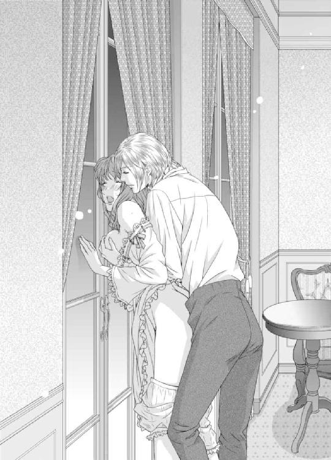

| 年下皇子に溺愛されてます！？-淫らなご褒美は授業のあとで-【書下ろし・イラスト10枚入り】 (トパーズノベルス) | |
| 茅原ゆみ | |
| アイデジタルパブリッシング (2016) | |
トパーズノベルス
年下皇子に溺愛されてます!?～淫らなご褒美は授業のあとで～
著作 茅原ゆみ
Illustration かんべあきら
この物語はフィクションであり、実在の人物・団体・事件とは一切関係ありません。
年下皇子に溺愛されてます!?～淫らなご褒美は授業のあとで～
プロローグ
「──ねぇ、せんせ。もっと僕に教えてください」
「お、教えるって何を......？」
「先生の気持ちいいところ」
「やんっ」
立派な天蓋付きのベッドからは、豪奢なダマスク織りの布が垂れ下がっている。そして布をぐるりと縁取るように付いた金モールが、あえかな声とともにさらりと揺れた。
「あぁ、だめ、アレクシス様っ」
ドレスの裾から頭を突っ込み、皇子アレクシスはエミーリアのドロワーズを脱がせると、床に放り捨てた。
「ひゃ......んっ」
すでに濡れそぼっている媚肉を、くぱっと音がしそうな勢いで左右に割られ、エミーリアは羞恥から、アレクシスの頭を必死に両手で押しやった。
しかしアレクシスはドレスの中から出て行こうとはせず、むしろエミーリアの秘処をじっくりと眺めている。
──エミーリアは今、あられもない格好で皇子のベッドに横たわっていた。
リボンとレースがたっぷりとあしらわれたドレスは胸元を寛げられ、たわわな乳房が露わになっている。スカートを広げるペチコートは無残にも捲り上げられ、絹のストッキングを穿いた足は太腿まで露出していた。
「ア、アレクシス様......っ」
エミーリアは好奇心旺盛な教え子が女性の陰部に興味を持ち、見てみたいのだという願いを聞き入れてしまった。
これまでだってエミーリアは、良い子に授業を受けた『ご褒美』がほしいとねだられ、散々彼から身体的な辱めを受けてきたのだ。
唇を奪われ、胸を揉まれ、乳首を吸われ、そして今日は「先生の恥部が見たいです」と甘えるように請われて、子犬のような愛らしい彼の瞳に抗うことができず、エミーリアは頷いてしまった。
「ああ、すごい......。先生のここはこんな風になってるんですね」
思うさま胸をいじられて、すっかり潤んでしまった蜜壺を指先で突かれて、エミーリアは膝を閉じようとする。
「おっと。足を閉じないで、せんせ。もっと知りたいんです。貴女が感じるところ」
「ど、どうして......ですか......？」
耳まで真っ赤に染めながら訊ねると、アレクシスが金色の髪を乱しながら、ドレスの中から頭を出した。
「だって、先生も気持ちのいいことは好きでしょう？ ほら、ここをこんなに濡らしてしまうほどに......」
「あぁ......んっ」
「僕だって、先生が感じているところを見るのが好きです。だからもっと感じて、せんせ。僕を楽しませるように──」
豊かな鉱山資源で潤い、大陸一の大国であるブルグハルト皇国の皇子にそんなことを請われては、しがない家庭教師の身であるエミーリアは抗うことができない。
「い、いけませんわ！ アレクシス様っ」
再びドレスの中に潜り込んだアレクシスに、エミーリアは慌てて抵抗した。けれども蜜口を指でなぞられて、甘い嬌声を漏らしてしまう。
「あぁ......っ！」
しかも濡れた感触がして、自分の花襞を彼が舌で舐めているのだと気づいた。
「お、おやめください、アレクシス様！ そのようなことなさってはいけませんっ」
必死になってエミーリアはアレクシスを止めたが、わざとらしくピチャピチャと濡れた音を響かせながら、皇子はエミーリアの花芯を舐め続ける。
「ふぁ......、あぁ、あぁ......んっ」
電流のような強い刺激にどうしたらいいのかわからず、エミーリアはシーツを握った。
これまで男性と付き合ったこともなければ、結婚したいと思ったことすらないエミーリアにとって、皇子との肌の触れ合いは恋人同士のまぐわいのようで、授業をちゃんと受けた『ご褒美』とはいえ、やり過ぎな気がしていた。
「ア、アレクシス皇子、これ以上は本当にいけませんっ！」
蕩ける快感に流されてはいけないと必死に声を上げると、アレクシスはぴたりと動きを止め、ドレスの中から這い出てきた。
「......今、僕のこと『アレクシス皇子』って呼んだ？」
「は、はい......」
目を据わらせて、四つん這いのままアレクシスはエミーリアににじり寄る。
「『皇子』なんて堅苦しい呼び方はしないでって、あれほど言ったのに──。これは僕を『皇子』と呼んだ罰だよ、せんせ」
「ひっ......」
赤く尖った乳首をきゅっと指先で抓られて、エミーリアはきつく目を閉じた。
するとアレクシスはもう片方の乳首に優しく舌を這わせ、エミーリアの豊満で柔らかな胸を、円を描くようにして揉み込んでいく。
「あぁっ、やぁ......、アレクシス......様ぁ」
背を仰け反らせ、エミーリアは甘美な愉悦に耐えた。
「先生のおっぱいって、本当に気持ちがいいなぁ。一日中でも触っていたいよ」
無邪気な彼の言葉に、母性本能が強いエミーリアは、きゅんと胸がときめいてしまう。
「い......一日中は無理ですが、アレクシス様が触りたいと思った時に、お触りになって結構です」
「本当に!?」
青い瞳をキラキラと輝かせ、アレクシスは音を立ててエミーリアにキスをした。
「エミーリア先生、だーい好き！ ずっとずっと僕の側にいてくださいね」
「は、はい......」
十八歳という年齢の割には幼い印象が拭えないが、こんな純粋な笑顔を見せてくれるのも自分だけなのだと思うと、エミーリアの胸はドキドキとして、教え子である皇子をつい甘やかしてしまうのだった。
第一章 私、家庭教師になります！
「今日もいいお天気」
洗濯したベッドシーツを裏庭で干しながら、エミーリアは高く澄んだ青空を見上げた。
豊かな髪を撫でる風は穏やかで、太陽の日差しは微笑んでいるかのように優しい。さえずる小鳥たちの声も歌声に聞こえるし、エミーリアは今日も一日平和で、そしていいことが起きそうな予感がしていた。
隣国との国境に接する山の麓に、エミーリア・バーデの家はあった。
田畑と放牧地しかない長閑な町だが、春になれば美しい花が咲き誇り、夏になれば青々とした草が生い茂る肥沃な土地で、エミーリアはこの町で下級貴族の娘として生まれた。
築三百年は経つ石造りの屋敷は先祖代々受け継がれたもので、祖父が生きていた頃は使用人もおり、『領主様』と地域の人たちから慕われていた。
しかし女癖が悪く、浪費家であった父の代に家は没落し、だめな夫を生涯愛し続け、失意のうちに亡くなった母を見て、エミーリアは一生結婚なんかしない、男なんて絶対に信用しないと心に決めていた。
「──エミーリア！ エミーリアはいるの？」
「あっ、リーゼル叔母様だわ！」
洗濯を終えた篭を脇に抱えると、粗末なドレスの裾を掴んで、エミーリアは玄関へと走った。
するとそこには一台の馬車が止まっており、上品なストライプ柄のドレスに、つば広の羽根付き帽子を被った叔母が微笑んでいた。
「リーゼル叔母様！」
「エミーリア！ 元気にしていた？」
「はいっ」
石造りの屋敷には、もうエミーリアしか住んでいない。
母が亡くなり、父が行方不明になってからというもの、エミーリアを心配してくれるのは、母方の叔母であるリーゼル・アルトマイヤー伯爵夫人だけになってしまった。
可愛い姪っ子に会えた嬉しさを隠そうともせず、力いっぱい抱き締めてくれたリーゼルに、エミーリアも満面の笑みで応えた。
そして使用人もいなくなった屋敷の応接間に叔母を通すと、エミーリアはとっておきの紅茶を淹れる。普段飲んでいる茶葉の三倍の値段がするもので、嬉しいことや、楽しいことがあった時にだけ飲む、特別な紅茶だった。
「あら、美味しい紅茶ねぇ」
慎ましやかな生活を送るエミーリアの、ほんのちょっとした贅沢をリーゼルは褒めてくれた。それから彼女は口癖である、「いい人はいないの？」という話題を切り出してきた。
「叔母様ったら、またその話？」
うんざりした顔でエミーリアが向かいのソファに腰を下ろすと、テーブルの上にティーカップを置きながら、リーゼルはさも当然といった感じで口を開いた。
「何を言っているの。貴女ももう二十歳でしょう？ いい加減に、結婚なさいな」
「何度も申し上げているように、私は一生結婚しないの」
「そんなことを言って。結婚もせずに女が一人で生きていけるわけないでしょう？ いい縁談を持ってきてあげたから、早く結婚なさい。それが女の幸せというものよ」
明るく快活な性格で、人付き合いも良いことから、リーゼルは社交界で顔が利く。そのため彼女は結婚適齢期の姪っ子に、いつも縁談を持って来てくれるのだが、エミーリアはすべて断っていた。
ヘイゼルブラウンの髪に、大きな翡翠色の瞳を持ったエミーリアは、鼻筋の整った愛らしい顔立ちをしている。故に実年齢より幼く見られるのが玉に瑕だが、豊満な胸が目を惹く抜群のスタイルをしており、リーゼルに言わせれば「華のある容姿」をしていた。
けれど男に媚びて生きていこうなどと一切思わないエミーリアは、異性の目を惹きつけてやまない豊かな胸はコンプレックスでしかなかったし、そもそも自分の外見に関心がなかった。
なのでドレスは着られればなんでも良かったし、髪も質素に纏めただけで、化粧っ気もまったくない。
そんなエミーリアをリーゼルはいつも心配していた。このまま放っておいたら、本当に行き遅れてしまうと──。
「それにこのお屋敷だって、お義兄様が作った借金のせいでもうすぐ売られてしまうのでしょう？ そうしたらあなたはどこで生活していくの？」
「だから叔母様に来ていただいたんじゃない！」
胸の前で手を一つ叩くと、エミーリアはリーゼルの瞳を真っ直ぐと見つめた。
「私ね、家庭教師になろうと思うの！」
「家庭教師？」
驚きに目を瞠り、リーゼルは大仰に退けぞった。
「何を言っているの？ 家庭教師なんて乳母みたいな職業に就かなくても、あなたの美貌なら立派なお屋敷の奥様になれるのよ」
「何度も言っているように、私は結婚なんてしたくないの。男はみんな一皮むけば、お父様のようなだめ人間に違いないわ。だから私、家庭教師として働こうと思うの」
幸いエミーリアは、貧しい環境の中でも家庭教師をつけられ、淑女教育を完璧に施された。母は借金をしてまでエミーリアを女学校に入れてくれたので、同世代の女性に比べれば教養は遥かにある。
「ねぇ、お願い叔母様。今度は縁談ではなく、私の就職先を見つけてきてくださらない？」
身を乗り出してリーゼルの手を握ると、ここぞとばかりに大きな瞳を潤ませて、エミーリアは叔母の老婆心を擽った。
「仕方がないわね......。でもあなた、本当に結婚はしないの？」
「はい！ 世の中の男性には失望してるので」
満面の笑みで言い切ったエミーリアに、リーゼルは盛大なため息をついたのだった。
数週間後、良い就職先が見つかったと、リーゼルは再びエミーリアの元を訪れた。
「隣国ブルグハルト皇国の名家が、次期当主の家庭教師を探しているの。この国を離れることになるけど、それでもいい？」
細い眉を寄せて、心配そうに自分を見つめる叔母に、エミーリアは二つ返事で答えた。
「大丈夫よ、叔母様。心配なさらないで」
エミーリアが住むバルシュミーデ王国と隣国ブルグハルト皇国は友好国だ。公用語も一緒で、文化や社交界でのマナーも大変良く似ているので、読み書き計算、そして基礎的な歌やダンスを教える家庭教師になったとしても、なんら差し障りはない。
それに、エミーリアにはずっと会いたい人がいた。
幼い頃に一緒に暮らしたイレーネだ。
イレーネはエミーリアより三歳年下の女の子で、家庭の事情から一年ほどエミーリアの家に預けられていた。
しかし環境が落ち着き、実家があるブルグハルト皇国へ戻ってからは、なぜか連絡が取れなくなってしまったのだ。なのでエミーリアは、ブルグハルト皇国へ行けばイレーネを探すことができると考えた。
「私、行くわ。ブルグハルトへ」
生まれ育った町を出ることに少なからず感傷的にもなったが、エミーリアの胸は新しい生活が始まることに高揚していた。
数日後、少ない荷物をトランクに詰めると、エミーリアは晴れがましい気持ちと、イレーネに会えるかもしれないという希望を胸に、迎えの馬車に乗り込んだ。
想像以上に馬車が立派だったことに戸惑ったが、叔母の話によると就職先は相当な名家らしい。
初めて訪れるブルグハルト皇国で、どんな出会いが待っているのか──。
エミーリアは胸を高鳴らせながら、見慣れた景色に別れを告げたのだった。
◇◇◇
万年雪をいただく山脈を抜け、峠を越えて、エミーリアを乗せた馬車はブルグハルト皇国に入った。
最初のうちは自分が育った町と大差のない景色が広がっていたけれど、皇都が近づくにつれて街はどんどん近代化し、エミーリアは生まれて初めてガソリンで走る自動車を見た。
それ以外にもレンガ造りの高い建物や、街の中を走る立派な列車。最新流行のドレスを身に纏った貴婦人に、街を闊歩する大勢の紳士や兵隊たち......。
エミーリアはこれまで自分が見てきた世界とは異なる皇都の街並みに、完全に目を奪われていた。
社交界デビューはしているので、田舎者のエミーリアだって、母国の王都には行ったことがある。しかしブルグハルト皇国の皇都は、バルシュミーデ王国の王都より数十倍は華やかで、活気に満ちていた。
「すごいわ......」
翡翠色の瞳を輝かせ、エミーリアは馬車の窓に貼りついた。これが大陸一の大国である、ブルグハルト皇国の都なのね......と。
抑えきれない好奇心から、今すぐ馬車の扉を開けて、街に降り立ちたい衝動に駆られたが、馬車はエミーリアを新しい就職先へと運んでいく。
そうして辿り着いたのは、皇城の前に広がる噴水広場だった。
石畳でできた大きな広場には市場ができており、エミーリアが見たこともないような様々なものが売られていて、大勢の人で賑わっている。
その光景を横目にしながら、馬車は双頭の鷲の紋章が施された黄金の門を潜ると、するりと皇城の敷地内へと入っていった。
「えっ......？」
あまりにも自然な流れだったので、一体何が起こったのかエミーリアには理解できなかった。何度もうしろを振り返りながら、自分がどこに連れて来られたのかを確認する。
「ちょ、ちょっと待って。ここって......」
皇城内の広大な広場を抜けると、エミーリアを乗せた馬車はさらに奥へと進んだ。
そして──。
「お待ちしておりました、エミーリア・バーデ様」
腰から何十本もの鍵をぶら下げた、上級使用人の家政婦に出迎えられたのは、ブルグハルト皇国の皇帝の住まいである、ヴァルトルーデ城だった。
「ど、どういうこと......？」
思わず漏れた呟きに、黒いワンピースを纏った家政婦がピクリと眉毛を動かした。
けれど彼女は顎の尖った神経質そうな顔になんの感情も浮かべることなく、淡々とした足取りでエミーリアを城内へと案内する。
鳥の翼を思わせる左右に広がる大階段を登り、大理石でできた玄関ホールを抜けると、そこは金の装飾が随所に施された絢爛豪華な大回廊だった。
壁には歴代皇帝の肖像画が飾られ、赤いカーペットが中央に敷かれた床は磨き上げられていて、ベランダへと続く大きなフランス窓には一枚ガラスが使われており、この国の産業技術力の高さにも驚かされた。
そしてエミーリアが連れて行かれた部屋は、一介の家庭教師には分不相応な立派な部屋だった。
「しばらくこちらでお待ちください」
家政婦が出て行くと、エミーリアはぐるりと室内を見渡した。
何十人もの人を呼んでパーティーが開けそうな広い部屋には、花かご模様のダマスク織りが使われた天蓋付きベッドと、立派な暖炉があり、家具もソファもファブリックも、すべて金と白で揃えられている。
天井からは大輪の花を思わせるシャンデリアが吊るされていて、その輝きは暖炉の上に嵌め込まれた大きな鏡に反射し、倍増していた。
「はー......」
感嘆のため息をつきながら、粗末なトランクをフットレストの上に置くと、エミーリアはベッドに腰かけた。長旅で疲れているはずなのに、あまりにも豪華な部屋に通されて、疲労も一気に吹き飛んでしまった。
「名家とは聞いていたけど、まさか皇室だったなんて......」
天井まで続く両開きの窓越しに中庭を眺めながら、エミーリアは再びため息をついた。
けれど、自分の就職先は本当にここで合っているのだろうか？ そんな不安が急にエミーリアを襲った。
そもそも住み込みの家庭教師というのは、なんのうしろ盾も財産もない、教養ある女性が就く職業で、教育対象は五歳から十歳までの子どもだ。教えることは最低限の読み書き計算、そして礼儀作法と、歌とダンスの基礎。
しかし皇室の血を引く皇子や皇女ならば、エミーリアのような下級貴族の娘が教える稚拙な教育ではなく、読み書き計算の基礎からして、高名な教師をつけるのが当然だ。
しかも幼いうちから高度な地理学や軍事学、帝王学や他国の言語など、専門的な教育が施されるので、女学校を出たぐらいの知識しか持たないエミーリアでは、乳母になることすらできない......。
なのになぜ、自分はここへ連れて来られたのだろう？
「やっぱり、何かの間違いだわ！」
そう思い、エミーリアが立ち上がった時だった。
「──失礼いたします」
濃紺のワンピースに揃いの白いエプロンを着けた侍女たちがぞろぞろと部屋に入って来て、エミーリアはぎょっとした。
「な、何事ですか？」
訊ねると、先頭にいた侍女が恭しく膝を折った。
「エミーリア様には、これからお着替えいただきます」
「き、着替え......？」
「はい」
微笑んだ侍女の背後から現れた他の侍女たちによって、エミーリアは有無も言わさず質素なドレスを脱がされた。
「きゃあ！」
「さぁさぁエミーリア様、まずはお風呂へ入ってくださいませ」
「お風呂......ですか？」
コルセットにドロワーズという下着姿のまま、エミーリアは部屋の奥の扉へと押し込まれた。
するとそこは大理石で造られた広い浴室になっていて、エミーリアは借りてきた猫の気分で湯あみをした。
そして浴室から出ると絹の下着を着せられ、レースがふんだんにあしらわれたコルセットを着けられて、豊満な胸が半分以上露わになる大きな襟ぐりの、光沢ある藤色のドレスを着せられた。
「あ、あのう......」
姿見の前に立つエミーリアに、侍女たちは満足げに頷いている。
「私たちが見立てた通り、とても良くお似合いですわ」
大胆なデザインのドレスに戸惑うエミーリアをよそに、侍女たちは彼女の髪を綺麗に結い上げると、仕上げとばかりに化粧を施し、さらに頷いた。
「こ、これが......私？」
鏡に映った姿に、エミーリアは瞬きをした。
そこには、これまで見たこともないほど美しく飾られた自分がいたからだ。
白いリボンとレースが愛らしい藤色のドレスは、胸元が開き過ぎていてかなり恥ずかしかったが、襟ぐりが大きい分、首元に着けたアメジストのチョーカーが良く映えて、大人の女性らしい品位が漂っていた。頭にはドレスと同じ布で作られた薔薇の髪飾りがつけられていて、それもまたヘイゼルブラウンの髪に良く似合っている。
「お綺麗ですわ、エミーリア様」
侍女たちが口々に褒めてくれる中、数回のノックのあと、先ほどの家政婦が入ってきた。
すると侍女たちは、長である彼女のピリリとした空気に背筋を伸ばし、長居は無用とばかりに周囲を片付けると、そそくさと部屋を出て行ってしまった。
「準備が整ったようですね」
冷淡な眼差しで言った彼女は、エミーリアの全身を眺めると、部屋から連れ出した。
そして先ほど通った肖像画が飾られた大回廊を抜けると、階段を下り、儀仗兵が守る黄金の扉の前で止まった。
エミーリアは、この部屋が謁見の間であることがすぐにわかった。なぜならば、扉がどの部屋よりも立派で大きかったからだ。
「皇帝陛下、エミーリア・バーデ様をお連れいたしました」
家政婦の言葉に儀仗兵が扉を開ける。すると天井の高い広間の最奥に、黄金と宝石でできた玉座があった。
「さぁ、皇帝陛下と皇后様にご挨拶を」
家政婦に促され、エミーリアは緊張から、つんのめるようにして歩き出した。そして玉座まで敷かれた赤い絨毯の上を行き、真ん中あたりで膝を折って挨拶をする。
すると、「もっと近くへいらっしゃいな」と優しく皇后に声をかけられた。
「は、はい......」
ドレスの裾を踏まないようにさらに近づくと、そこにいるだけで威厳と風格が押し寄せてくる皇帝ローラントが、立派な顎鬚を撫でながら口を開いた。
「君が、今日から息子の家庭教師になってくれるエミーリアだね」
皇帝の言葉に、エミーリアはやっと自分がここへ連れて来られたのは、正確だったと知る。
「お、恐れ多くも本日から、お城で働かせていただきます」
「うむ」
その笑顔に胸を撫で下ろしながら、エミーリアはさらに深く頭を垂れた。
「この通り好奇心が赴くまま、自由に育てすぎてしまった息子だが、よろしく頼むよ」
「はい」
皇帝の言葉に顔を上げると、エミーリアは教え子となりそうな幼い少年の姿を探した。
しかしこの部屋に少年の姿などなく、代わりに美しい青年が一人、玉座の横に立っていた。
金釦が輝くテイルコートに、真っ白な絹のクラヴァット。そして足の長さがよくわかる細身のトラウザースを穿いた青年に、エミーリアの目は一瞬にして奪われてしまった。
月の光を彷彿とさせるハニーブロンドの髪に、どこまでも深いサファイアブルーの瞳。鼻筋はすっと通っていて睫毛は長く、二重の目元は涼やかで、美しい輪郭を描く唇には、優しい笑みを湛えている。
「よろしくね、エミーリア先生」
「──えっ？」
青年の言葉に、エミーリアはきょとんとした。
「だから、今日から貴女の教え子になるアレクシスです。よろしくお願いします」
「え......、えぇぇぇぇっ！」
微笑んだ青年に、エミーリアは皇帝の前であることも忘れて絶叫した。
──エミーリアの教え子は、少年ではなく見目麗しい大人の男性だったのだ。
◇◇◇
エミーリアの教え子となる少年......ではなく青年は、ブルグハルト皇国の皇子、アレクシス・フォン・ブルグハルトだった。しかも彼は十八歳という年齢で、すでに成人もしている。なのになぜ、今さら家庭教師が必要なのだろう？
「あの......ブルグハルト皇国の皇子ともあろうお方に、なぜ私のような者が家庭教師として招かれたのでしょうか？」
エミーリアの部屋より数倍広く、家具はすべて金で統一され、ソファやベッドカバーも、彼の瞳を思わせる青で揃えられた豪奢な部屋で、エミーリアは皇子と二人きりにされて困惑していた。
すると二歳年下の高貴なる教え子は、ゆったりとソファに腰掛けながら微笑んだ。
「わけあって、僕は幼少期をこの国で過ごせなくてね。だから本来ならばその頃に受けなければならなかった教育を、受けることができなかったんだ」
「はぁ......」
扉の前で立ち竦んでいたエミーリアを手招きすると、皇子は自分の隣に座らせた。
「もちろん国に帰って来てからは、一流の教授たちからありとあらゆる学問を学んだよ。でも、僕にはやはり幼少期に受けられなかった基礎が抜けている。その基礎を貴女に教えてもらいたいんだ」
「基礎......、ですか」
エミーリアは首を傾げた。
一見したところ、皇子はちゃんと挨拶もできるし、流暢な言葉もしゃべっているので、幼児教育が施されなかったようには見えない。なのに一体彼は、下級貴族の娘から何を学ぼうというのか？
細い顎に指を当て、唸りながら考え込んだエミーリアに、皇子は楽しそうに目を細めた。
しかしこのままなんの授業もしないというわけにもいかないので、思い切ってエミーリアは顔を上げる。
「では、アレクシス皇子様。まずは何からお勉強いたしましょう？」
「『皇子様』なんて堅苦しい呼び方はやめて。僕は貴女の生徒なんだから、呼び捨てでいいよ」
「そんな恐れ多いことはできません！」
慌てて首を横に振ると、皇子は軽く目を見開いた。
「そう？ ならばせめて『アレクシス様』って呼んで」
「ア......アレクシス様？」
試しに呼んでみると、
「なんですか？ エミーリアせんせ」
人形のように整った顔に、アレクシスは茶目っ気たっぷりな笑顔を浮かべる。
するとエミーリアの胸は、なぜかときめいた。
きっと彼の屈託のない笑顔がいけないのだ。
そんな無邪気な笑みを向けられたら、成人も迎えた青年なのに、思わず可愛い～っ！ などと母性本能を擽られてしまうではないか。
「で、ではアレクシス様。お勉強を始めましょう。まずは何からお教えすればよろしいですか？」
熱くなった頬を隠すため、咳ばらいを一つしてからエミーリアは立ち上がった。
「それは先生である貴女が決めてください。僕はなんでも従いますから」
「............」
笑顔のアレクシスにエミーリアは再び困惑した。
しかし通常であれば、家庭教師が教える最重要科目は読み書き計算だ。
「では、まず計算のお勉強をいたしましょうか」
ソファの向かいに用意されたブラックボードの前に立ち、エミーリアはチョークを手に取ると、子どもに出すような計算式を書く。
「ふーん、３＋６＋15ね......。ＯＫ。まかせて、先生」
チョークを受け取ると、アレクシスはあっという間に『24』という答えを書き上げた。
それもそうだろう。国内随一の教授たちからみっちりと教育を施された皇子なのだ。幼児教育を受けそびれたといっても、この程度の問題が解けないわけがない。
「では次は......」
再びブラックボードに問題を書きながら、こんなことをしていて本当に意味があるのかしら？ と思った。しかし横に立つアレクシスは、エミーリアの手元を見つめながら、なぞなぞを解く少年のように瞳を輝かせている。
そんなワクワクとした彼の表情を見ていると、エミーリアも楽しくなってきて、二人で三十分ほど計算式を解いた。
すると皇子付きの従者が部屋を訪ねて来て、国政にまつわる会議が始まると、アレクシスに告げた。
「しかたがない。時間切れだね」
嘆息とともにチョークを置いた彼は、指先を綺麗に払うと、その指でエミーリアの顎を捕らえた。そしてやおら上向かせると、何も言わずに唇を重ねてきたのだ。
「──!?」
何事かとエミーリアが目を瞠ったのと同時に、唇の間からするりと舌が挿入され、擽るようにエミーリアの歯列を舐め上げると、アレクシスは口角を上げながら唇を離した。
「な、何を......っ」
驚いたエミーリアが両手で唇を押えると、さも当然といった顔で彼は言った。
「『ご褒美』をいただきました」
「ご......『ご褒美』？」
茹でダコのように真っ赤になったエミーリアが訊ねると、彼は無邪気なあの笑顔を浮かべた。
「はい。良い子で授業を受けたのですから、『ご褒美』をいただくのは当然です」
「そ、そういうものなのですか......？」
新米家庭教師であるエミーリアは首を傾げたが、アレクシスは至極真面目な顔で頷く。
「そういうものです。なので今後授業が終わったら、ちゃんと『ご褒美』をくださいね。じゃないと、拗ねて授業を受けなくなるかもしれませんよ？」
脅しとも取れる言葉を残して、アレクシスは天使のように微笑むと、軽やかな足取りで部屋を出て行ってしまった。
一人残されたエミーリアは茫然としていた。
──このキスは、生まれて初めて異性と交わしたキスだった。
第二章 えっちな『ご褒美』をねだられています。
エミーリアにはずっと忘れられない少女がいた。
イレーネ・ヴェッグマンというエミーリアより三歳年下の彼女は、今から十年前、エミーリアの家に一年ほど預けられていた、ブルグハルト皇国出身の侯爵令嬢だった。
当時ブルグハルト皇国は、跡継ぎ問題に端を発した軍内部の反乱により、情勢が大変危うかった。なので皇帝の血縁者であったイレーネは、火の粉を被ることがないよう、友好国であったバルシュミーデ王国に一時期預けられていたのだ。
その時イレーネの世話を任されたのが、エミーリアの家だった。
粗末な下級貴族の家に、皇族の血を引く女の子が預けられるなんて、どうして？ と当時十歳だったエミーリアは思ったが、
「あえて身分の低い家に匿うことで、反乱分子の目を誤魔化すのですよ」
と母に教えられ、納得したのを覚えている。
まだ雪が残る、寒い日の早朝。少ない荷物と数人の侍女を引き連れて、イレーネはエミーリアの家にやってきた。
抜けるような白い肌に、湖畔を思わせる青い瞳。そして肩の辺りで切り揃えられたダークブラウンの髪をした彼女は、薄桃色のドレスに同じ色のボンネットを被っていた。
その姿はまるで高級なビスクドールのように愛らしくて、エミーリアはすぐに彼女と友達になりたいと思った。
「こんにちは、イレーネ様。私はエミーリアと申します」
屋敷の応接間で膝を折って挨拶したエミーリアに、イレーネは隣にいた侍女の手を強く握った。
この時の異常に怯えた彼女の瞳を見て、エミーリアはどんな状況下に彼女が置かれているのか、思い知らされた気がした。
齢七歳にして、イレーネはどれだけ過酷な現状を潜り抜け、ここまで逃げてきたのだろう？
隣国とはいえ、まだ雪深い早春の山脈を抜け、いくつもの峠を越えて、彼女はここまで逃げてきたのだと言う。
なんでも隣国では今、正当な血筋であるローラント皇太子を推す元老院派と、ローラント皇太子の異母弟であるヨーゼフ皇子を推挙する革新派に分かれ、内政は混乱し、家臣のみならず皇室内にも暗殺された人が出たと聞いている。
もしかしたらイレーネはその現場にいたのかもしれない。いや、いなかったとしても血の繋がった親しい人が殺されたのだ。そのことに幼い彼女の心はどれだけ傷付いたことか......。
親からも引き離され、異国へ連れて来られた可哀想なイレーネに、エミーリアは寄り添うことを決めた。
一人っ子だったエミーリアは、もともと可愛い妹がほしかったのだ。だからイレーネがこの家にいる間は、本当の妹だと思って接することを決めた。
◇◇◇
「エミーリアせんせ。今日は何を教えてくれるんですか？」
大陸一の面積を誇り、資源も豊富な工業国であるブルグハルト皇国へやってきて一カ月──。
高貴なる十八歳の教え子は、サファイアブルーの瞳をキラキラと輝かせ、ブラックボードの脇に立つエミーリアを見つめた。
エミーリアは、今日もコンプレックスである豊かな胸を強調したドレスを着せられ、綺麗に髪を結い上げられ、美しく飾り立てられている。
どうやらブルグハルト皇国では今、胸元が大きく開いたドレスが流行っているらしい。お城に出入りするご婦人方も、襟ぐりが大きく開いたドレスを競うように身に纏い、羽根扇子を片手に談笑している姿を、エミーリアも何度か見かけたことがある。
しかし貴族とはいえ貧しく、流行りとは無縁な生活を送ってきたエミーリアは、毎日のように皇子から届けられる最新流行の美しいドレスに戸惑うばかりだ。
けれど大胆なデザインのドレスと、皇子に施す教育は関係ないのだと気持ちを切り換えると、エミーリアはブラックボードに『歴代皇帝の御名を書きなさい』と、チョークを滑らせた。
「それでは、本日は歴史のお勉強をいたしましょうか」
指示棒で今書いたばかりの文字を指し示すと、アレクシスは苦い薬でも飲んだように眉を顰めた。
「えー......、歴史は苦手なんだよなぁ」
そう言って苦笑した彼に、エミーリアは内心「やったー！」と両手を上げて喜んだ。
これまで彼には読み書き計算、そして礼儀作法やダンスの基礎などを教えてきたが、どれもこれもあっさりと......かつ完璧にこなしてしまうので、エミーリアは家庭教師としてやり甲斐を見出すことができなかった。なんのために私はここにいるのかしら──？ と。
先日などは歌の授業をしようとしたのだが、所詮は女学校までしか出ていないエミーリアとは違い、高名なピアノ演奏家と声楽家から厳しく基礎を教えられた皇子は、見事なカンタータを演奏しながら歌ってみせ、エミーリアの度肝を抜いた。
だから今日は少しばかり趣向を変えて、家庭教師が教える範疇外のことをしようと思った。
国立図書館かと見紛うばかりの皇城の蔵書室から、皇国の歴史が書かれた本を何冊か選び出し、エミーリアは彼に歴史の勉強をさせようと考えたのだ。
けれど皇子が歴史嫌いだったとは実にラッキーだった。これで家庭教師らしい授業がやっとできると、エミーリアは感動にも似た感慨を覚える。加えてここぞとばかりに難しい問題を出して、毎日のようにセクハラをしてくる皇子に、日頃の仕返しもしてやろうと内心でほくそ笑んでいた。
──エミーリアは最初の授業以来、皇子からセクハラとしか思えないような『ご褒美』をねだられるようになった。
当初は彼も遠慮していたのだろう。触れるだけのキスだったり、せいぜい歯列を舐められる程度だったのだが、『ご褒美』の口づけは段々と激しさを増していき、最近では長椅子に押し倒されて、呼吸が乱れるほど唇を貪られるようになった。
「──ア、アレクシス様......、いけませんわっ」
「どうして？ 先生の甘い唇をもっと味わわせてください......」
アレクシスは、濃厚なキスのせいで流れたエミーリアの涙を指先で拭うと、何度も何度も口づけてきた。
「ふ......うっ、ん」
角度を変えて唇を重ね、薄く巧みな舌をエミーリアの中に差し入れては、口蓋を舐めるように擽る。
そうしてまだキスに不慣れなエミーリアの舌を絡め取ると、舌先を軽く吸い、ざらりと表面同士を擦り合わせ、さらに深く腔内を蹂躙した。
「ふぁ......、あっ......あふっ......」
触れ合う唇の隙間から呼吸をすると、アレクシスはどこか嬉しそうに目を細め、エミーリアの初心な反応を楽しむように、さらに激しく唇を貪った。
「うぅ......んっ、う、ん......っ」
あまりの息苦しさと強引さに、エミーリアが皇子の胸を何度も叩くと、それすらも面白いと言わんばかりに、皇子はエミーリアの両手を捕らえ、さらにキスを激しくした──。
そんなアレクシスとのキスを思い出して、授業中だというのにエミーリアの身体はぶるりと震えた。この震えが嫌悪からではなく、身体の奥を火照らせる怪しい熱のせいだと、エミーリアもわかっている。
しかし自分は皇子の愛人ではなく、あくまで家庭教師としてこの国に雇われたのだ。
だからキスをされるのが嫌ならば、嫌だとハッキリ断ればいい。
けれど褒美を与えることを拒んで、皇子が授業を受けなくなっても困るし、何より、エミーリアは皇子の笑顔にどうしても勝てなかった。
「──失礼いたします」
重厚なマホガニー製の扉をノックして、従者が一人入ってきた。
「ご講義の最中とは存じておりましたが、急遽御署名をいただきたい書類がございまして......」
「構わないよ。さぁ、こちらへ持って来て」
ソファを立つと、皇子は窓際に置かれた執務用の大きな机に座り、従者が渡した書類に羽根ペンでサインをした。
「ありがとうございます」
「どういたしまして」
笑顔を向けた皇子に一礼すると、従者はエミーリアにも頭を下げて部屋を出て行った。
その一連の流れを見て、エミーリアはやはり違うと思った。
何が違うのかというと、皇子の『笑顔』が違うのだ。
この一カ月、短い時間ではあるけれど皇子を見てきて、エミーリアは彼の笑顔には二種類あることに気がついた。
一つは、今従者に見せた『皇子としての笑顔』だ。
これは城で働く者たちや親類、縁者、または公の場で見せる皇子の穏やかな笑みだ。十八歳という年齢の割には大人びた品のある笑顔で、すべてを包み込むような包容力がある。
そしてもう一つは、エミーリアにだけ見せる『素の笑顔』だ。
「さぁ、せんせ。授業の続きをしましょうか！」
執務用の机を離れ、ソファに戻ってきたアレクシスは、心の底から無邪気な笑顔をエミーリアに向けてきた。
この無垢な笑顔が、厄介なのだ。
涼しげな目元にきゅっと皺を寄せて、口元は無防備なほど嬉しそうに弧を描いている。
先ほど従者に見せた『皇子としての笑顔』とはまったく違い、包容力など微塵も感じられない『素の笑顔』は、エミーリアの庇護欲を強くそそった。
こんな天使のような笑みを向けられたら、世の男性すべてに失望しているエミーリアでも、ついついぐらっときてしまう。可愛い～っ！ と心の中で叫んでしまうほどに──。
これはきっと、『男』として皇子に期待をしなくて済むからだろう。
経済的にも精神的にも支えてほしいと思わせるような、男気溢れる笑顔ではなく、むしろこちらが守ってあげなければ......と思わせる、子犬のような愛くるしい笑顔だからだ。
十歳にして、イレーネという少女を精神的に支えたいと思ったほど、エミーリアは母性本能が強い。
世の男性にはこれっぽっちも期待などしていないが、「貴女がいないと生きていないの......」と捨てられた子犬のような眼差しをする生き物には、エミーリアは滅法弱かった。
きっと、だめな父親を生涯愛し続けた母の血が、自分の中にも流れているのだろう。だから庇護欲をそそる者には勝てないのだ。
エミーリアの母が、甲斐性なしの夫を愛し支えたように、自分がいないとだめになってしまいそうな者に、エミーリアも弱かった。
それを自覚しているからこそ、母と同じ轍を踏まないよう、エミーリアは自ら男性を遠ざけてきたところがある。
しかしアレクシスは、エミーリアの父とはまったく違った。
派手好きで、ギャンブルにのめり込み、家の財産をすべて使い込んでしまった父のように、己のためだけに金を使い込み、国の財政を危うくさせている節などまったくないし、妻がいながら何人もの愛人を抱えていただらしのない父と違って、アレクシスには不思議なほど女性の影がない。皇子だって結婚適齢期だ。縁談の一つや二つはありそうなのに、今は恋人もいないのだろうか......？
「せーんせ？ どうしたんですか、ぼんやりして」
「あぁ......、ごめんなさい。授業に戻りましょうか」
「はーい」
皇子に恋人がいるのかいないのか少しだけ気になったけれど、再び無邪気な笑顔を向けてきた皇子に、思わず赤くなった顔を見られないよう、エミーリアはブラックボードの方を向いた。
「では、アレクシス様。こちらに来て、歴代皇帝三十名の御名をお書きください」
「えー、本当に書かせるんですか？」
「もちろんです」
珍しくブラックボードの前に立つことを嫌がったアレクシスに、エミーリアは背筋を伸ばして、鹿爪らしく言った。やっと教師らしいことができた！ と。
そんな勝ち誇った心境が滲み出してしまったのだろう。緩む唇を必死に引き締めていると、
「......仕方がないですね。わかりました。それじゃせんせ、僕からも一つお願いがあります」
口角を上げ、アレクシスは企むように笑った。
「な、なんですか？」
ものすごく嫌なものを感じながら、恐る恐る訊ねると、
「もし僕が綴り一つ間違えることなく、歴代皇帝の御名をすべて書き上げることができたら、先生の柔らかそうなその『秘密』に、触れさせていただけませんか？」
「や、柔らかそうな『秘密』......？」
なんのことだかエミーリアにはさっぱりわからなかった。するとアレクシスは、長くて綺麗な指で、真っ直ぐとエミーリアの胸を指し示したのだ。
「え......、えぇぇぇぇっ！」
『秘密』とは、エミーリアのたわわな乳房のことらしい。
「な、何をおっしゃっているのですか!? アレクシス様！」
驚いて、エミーリアはドレスの上から両腕で自分の胸を隠した。
「だって、すっごく気になるんですもの。先生のおっぱい。それに自分で言うのもなんですが、僕だって年頃の男です。女性の身体に興味を持っても、おかしくはないでしょう？」
「そ、そういうことは恋人にお願いすればいいじゃないですか！」
「残念ながら、恋人はいません」
「い......いないのですか？」
「はい」
至極真面目な顔で頷いた皇子に、エミーリアはなぜか嬉しくなった。アレクシス様には恋人がいらっしゃらないのね......、と。
だからだろう。純粋に女性の身体に興味を持ち、胸を触りたいなどと青臭い願望を口にした彼が、より一層可愛く思えてしまった。
「い、いいでしょう。では綴りを一つも間違えることなく、完璧に御名を書き上げることができたら、む......胸を触らせてあげましょう！」
「ほんとに？ やったー！」
躊躇いがなかったわけではないが、エミーリアが了承すると、アレクシスは無邪気に喜びながらブラックボードの前に立った。
その姿を眺めながら、エミーリアは「大丈夫よ！」と自分に言い聞かせる。
皇子は本気で歴史が苦手みたいだし、歴代三十名もいる皇帝の名を、綴り一つ間違えることなく書き上げるなんて、なんの予習も復習もしていない人間にできるはずがない。
そう確信していたのに──。
「できましたよ、せんせ」
「............うぅ、全部合ってる......」
歴史書を片手に答え合わせをしたエミーリアは、失意のどん底にいた。
「さぁ、エミーリアせんせ。その大きなおっぱいを触らせてください！」
「きゃあっ！」
軽々とエミーリアを横抱きにすると、アレクシスはブラックボードの前にあるソファではなく、一番奥まった場所にあるベッド脇の寝椅子に腰を下ろした。そして自分の膝の上にエミーリアを座らせると、真っ赤になった彼女の頬にキスをする。
「ちょ、ちょっと待って......っ！」
逃げようともがくエミーリアに、アレクシスは余裕ありげに笑った。
「往生際が悪いですよ、せーんせ。貴女の柔らかそうなその『秘密』を早く見せてください」
固定するようにエミーリアの腰を抱くと、皇子は大きく開いた胸元に指先を引っかけ、躊躇うことなく一気にドレスとコルセットを引き下ろしてしまった。
「いやぁっ！」
肩からも袖が抜け落ち、エミーリアの豊満な胸はぷるりと震えながら皇子の眼前に晒された。
「綺麗だ、先生の『秘密』......」
熱っぽく囁かれて、エミーリアはアレクシスに耳朶を甘噛みされた。
「やんっ」
必死に胸を隠していた腕も優しく解かれて、桜色の乳首をした豊かな胸をじっくりと凝視される。
皇子は真剣そのものといった目で、エミーリアの形の良い乳房を眺めていた。
だから余計に恥ずかしかった。
もっと軽いノリで一瞥されるぐらいの方がまだ良かった。しかし皇子の青い瞳は舐めるようにエミーリアの胸を見つめている......。
「ア、アレクシス様......、は、恥ずかし......です......」
羞恥から、今にも涙が溢れそうなほど顔を真っ赤に染めていると、優しくアレクシスに口づけられた。
「恥ずかしがることなんてありませんよ。この部屋には貴女と僕しかいない。例え誰かがやってきても、決して部屋には入るなと言ってやりましょう」
そういう問題ではない気もするが、嫣然と微笑んだ皇子があまりにも美しくて見惚れていると、ゆっくりと寝椅子に横たえられた。
「......あっ」
エミーリアの頭上で両手首を一括りにすると、アレクシスは空いていたもう片方の手で、たわわな彼女の乳房に触れた。
その手は少しひんやりとしていて、エミーリアはビクッと肩を震わせる。
「あぁ......、先生の胸はなんて滑らかで温かくて、そして柔らかいんだ......」
乳房の下方に手を添えて、たぷたぷっと持ち上げられるようにされて、恥ずかしくてエミーリアは下唇を噛んだ。
男性に胸を見られたのだって生まれて初めてなのに、こんな風にじっくりと観察され、しまいには感想まで言われてしまった。
先ほどまでコルセットとドレスに包まれていた乳房は、外気に触れて少し肌寒かった。一瞬気温が下がったのかと思ったが、きっと自分自身の体温が羞恥で上がっているのだろうと、エミーリアは思った。だから必要以上に外気が冷たく感じられ、桜色の無垢な乳首は硬くしこってしまったのだ。
「先生のここ。まるで触ってほしいと言っているかのように尖ってますね......」
そんな乳首を彼に見咎められてしまい、エミーリアの頬は火を噴きそうなほど熱くなる。
アレクシスの声は低くもなく、高くもなく、よく通る澄んだ音色をしていた。かなりの美声だとエミーリアはいつも思っている。それなのに艶やかな彼の声で、とろりとした蜂蜜のように囁かれたら、緊張と羞恥だけでなく、別の意味でドキドキと心臓が高鳴り出す。
「い、いけませんわ......っ！」
慌てて制止したのだが、彼は瞳に好奇心と、それとはまた別の熱を浮かべると、人差指でエミーリアの乳首を突いた。
「あ......んっ」
自分でも信じられないぐらい甘やかな声が漏れて、慌ててエミーリアは口を噤む。
「──先生、もしかして今ので感じちゃったんですか？」
「な、何を......っ！」
全身を真っ赤に染めて、エミーリアはアレクシスを睨んだ。すると彼は意地悪く微笑むと、固い蕾をいじるように、さらにエミーリアの乳首を指で突いた。
「んっ......、んんっ」
今度は声を出すまいと必死に唇を噛んだけれど、アレクシスの指は次第に大胆な動きを見せるようになった。くるくると円を描きながら乳輪ごと乳首をもてあそんだり、張りがありながらも柔らかい乳房の中に、尖った先端を押し込むようにする。
「や......ぁ、あぁぁんっ」
感じたこともない甘く焦れた感覚に、エミーリアは思わず身体を捩らせた。
「やっぱり感じてるんじゃないですか、せーんせ」
「か......、感じて......なんか......」
強がってみてもだめだった。
羞恥と愉悦から瞳は潤み、全身は強い酒を飲んだように熱く火照っている。
なのにアレクシスは、そんなエミーリアをもっと翻弄するかのように、指先一本だけで桜色の乳首を捏ねたり、押し潰したり、弾いたりしてくる。
「あっ、あぁんっ......あっ......」
誰にも触れられたことのない、無垢だったエミーリアのそれは、皇子の指先に硬さを増していき、乳房全体も快感に張りを増していった。
「先生のおっぱいは本当に素敵だなぁ。形も綺麗で──。ほら、こんなにも乳首もしこってきて......。僕にいじられることを悦んでいるみたいだ」
「いや、やめて......っ」
卑猥な皇子の言葉の数々に、とうとうエミーリアの頬を涙が伝った。
するとアレクシスは慌てたように目を見開いたが、再び目元を細めると、泣き出したエミーリアをあやすように口づけてきた。
「ふっ......、うっ、ぅんんっ」
最初は触れるだけのキスを。
そしてエミーリアが唇を許し出すと、歯列を割って舌を差し入れ、臆病な舌を絡め取る。
「ん、んぅ......」
きつく舌先を吸われて、意識がぼうっと酩酊した。
皇子とのキスは実に甘美で、どんな菓子よりも甘く、エミーリアにもっともっと......と思わせる何かがある。
「そうですよ、せんせ......。ずいぶんキスが上手くなりましたね」
皇子のリードに任せるように舌を絡ませていると、熱い吐息をつきながら唇を離したアレクシスに褒められた。これではどちらが家庭教師で、どちらが生徒かわからない。
しかし恋人はいないと言った割には、皇子はこういうことに慣れている気がする。
恋人はいないけれど、愛人はいるということだろうか？ などと考えていると、なぜか胸の辺りが切なくなったけれど、あくまで自分は家庭教師で、そんなことを考える立場ではないと、エミーリアは己を律する。
「──何を考えているんですか？ 先生」
「えっ？」
少しだけ意識を逸らしたことを聡い皇子に気づかれて、咎めるように手のひらで乳房を鷲掴みにされた。
「ひ......、んっ」
エミーリアが驚きに目を瞠ると、アレクシスはそのままゆったりとエミーリアの胸を揉み込んできた。
「あぁ、先生の胸は本当に最高ですね。こうして手のひら全体で味わうと、感触といい、伝わる重量感といい、さらにその良さがわかる......」
まるで高級な金時計でも愛でるかのような口ぶりに、喜んでいいのか、恥ずかしがっていいのかわからなかった。
しかし褒められているのだから、いつも肩が凝って仕方がない大きな胸にも美点はあったのだと、自分のコンプレックスを少しだけ肯定してやる。
「あぁんっ、あっ......、あぁ」
皇子の手のひらは確かに、そして優しくエミーリアの乳房を揉みしだいていった。
捏ねるようにされて、背中が大きく仰け反る。
指先で乳首を何度も弾かれて、甘い刺激に全身が堪らなくなっていった。
「いやぁ、もう、もうお許しください......っ」
柔らかな『秘密』を存分に触らせてあげたのだから、そろそろ許してくれてもいいだろう。
そう思ってエミーリアが懇願すると、皇子は足りないと言わんばかりに、今度は両手で両乳房を揉み込み出した。
「まだまだですよ、せんせ。なんせ苦手な歴史を頑張って、皇帝の御名を三十名分書いたのですから。もう少し直接貴女に触れていたい......」
「ア、アレクシス......様......？」
真剣な眼差しで見つめられて、エミーリアは抵抗する力を奪われていく──。無邪気な皇子の笑顔にも弱いが、彼が時折見せる男らしい真摯な顔にも、エミーリアは弱かった。
「ひゃ......、う、んんっ」
大きく大きく、まるで滑らかなパン生地を捏ねるようにされて、エミーリアは結い上げた髪が乱れることも忘れ、何度も左右に頭を振った。
たわわな自分の白い乳房に、皇子の綺麗な指がやんわりと埋まっているさまを見て、羞恥と愉悦で意識がどうにかなってしまいそうだ。
しかも赤くて長い舌を差し出すと、皇子はなんの許可を取ることもなく、すっかり立ち上がってしまったエミーリアの乳首をそっと舐めてくる。
「だ、だめぇ......っ」
そんなことまでされるとは思っていなくて、エミーリアは驚いてアレクシスの肩を両手で押しやった。しかし一見華奢そうに見える皇子の身体はびくともせず、そのままきゅっと乳首を吸われてしまう。
「あぁ......、やぁっ」
ぴりっとした痛みにも似た快感が全身を駆け抜けて、エミーリアは自分の下半身が堪らなく濡れていくのを感じた。
先ほどから胸に与えられている刺激のせいで、腰の辺りはすでに甘い熱で満たされている。
エミーリアは、これまでにないぐらい秘処が潤っているのを恥ずかしく思って、膝をもじもじと閉じてしまった。
「もしかして、濡れてしまったんですか？」
「──っ！」
どこまでも聡い皇子は、エミーリアの胸中を読んだかのように上目遣いで訊ねてきた。そんなアレクシスの言葉に、エミーリアの頬は再び燃えるように熱くなる。
「我慢しなくてもいいんですよ」
彼は小さく笑って、エミーリアの両膝の間に片足を割り込ませると、躊躇うことなくドレスの中に膝を入れ、絹製のドロワーズの上からエミーリアの秘処をくっと押し上げた。
「あぁっ......」
感じたこともない強い快感に、渇望していた何かが満たされていく──。
それと同時に新たな火種が身体の中で生まれて、さらに堪らない気持ちにさせられた。
「やっ、あぁ、だめ......、だめぇ......」
大きく乳房を揉み込まれながら、ぐっぐっと秘処を膝で押し上げられて、エミーリアはこれまで味わったこともない快楽に、さらに涙を零した。
こんな恥ずかしいことはやめてほしいと思うのに、身体は彼が与える刺激を求めて、自然と皇子の膝に秘処を擦りつけてしまう。
「あぁ、あっ、あぁ......ん、やぁっ」
強く押された秘裂はドロワーズの中で左右に割れ、蜜壺とささやかな花芯が布越しに刺激される。
「ひ......んっ、あぁ、やだぁ......アレクシス......様ぁ」
乳首を吸われながら、しとどに濡れた膣口と花芯を膝で擦り上げられて、エミーリアの腰は前後に揺れてしまった。
「あっ、あぁあ......、あっ......あんっ」
意味をなさない言葉が、より一層エミーリアの口から零れ始める。そうして目の前に何か目映いものがちらつき始めた時だった。
「うっ、ふ......ぅっ、んん」
皇子の唇にまた口を塞がれて、エミーリアは必死にキスに応えた。舌を絡ませ合い、互いの舌先を吸って、エミーリアも皇子の口腔に舌を差し入れると、滑らかな彼の上顎を舐める。
「──まずいな......、こんなキスを先生にされたら、僕だって抑えが利かなくなってしまいますよ？」
端正な顔を歪めて、皇子は切羽詰まったようにエミーリアを見つめた。
こんなキス......と言われても、男をまったく知らないエミーリアに、口づけの仕方を教えてくれたのはアレクシスだ。なのにあたかも自分が彼の制御を効かなくさせているように言われて、少しだけエミーリアは不服に思う。
しかし彼の膝は確実にエミーリアの感じる箇所を捉えて、何度も何度も濡れた蜜壺と、莢の剝けた真珠を擦り上げていく。
「いやぁっ......、あぁ、あぁぁっ──」
目映いものを一際感じた時だった。皇子に胸を揉みしだかれながら、エミーリアはドクンと身体の最奥を大きく脈打たせ、閃光のような煌めきを感じた。
そして初めて迎えた何かにぐったりと身体が弛緩すると、瞼や頬や唇に、キスの雨が降ってくる。
「いったのですね、先生」
「い......、いく？」
言葉の意味がわからず、潤んだ瞳でとろんと皇子を見つめ返すと、小さく笑われた。
「今は意味がわからなくても構いません。これからは、何度でも僕があなたをいかせてあげますから」
この時のアレクシスの笑顔がとても穏やかで、優しくて......。エミーリアは彼に抱き寄せられるまま、そっと身体を預けたのだった。
それからというもの、アレクシスは授業が終わる度に、エミーリアの赤い唇と豊満な胸を貪るようになった。
この行為はまるで恋人同士の秘め事のようで、エミーリアを毎回ドキドキとさせ、いけない気分にさせた。
しかし、これはあくまでも授業をちゃんと受けた『ご褒美』なので、アレクシスは相変わらず余裕ありげに、そして真面目にエミーリアの講義を受けてくれた。
『ご褒美』という名の、甘美な時間を得るために──。
◇◇◇
近々、皇后の誕生日を祝って舞踏会が開かれるので、この日はダンスの練習をしようということになった。
皇城の南端にある、陽光がたっぷりと入り込む明るい音楽室で、エミーリアは初めて目にした蓄音機にレコードをセットすると、皇子に教えられるままに針を落とした。
すると華やかで軽やかなワルツが突然流れ出し、エミーリアは驚きに目を瞠った。
こんな箱からどうやって音楽が流れてくるのだろう？ そう思いながら興味津々で蓄音機を眺めていると、突然皇子に腰を抱かれ、エミーリアはつられるようにして踊り出した。
「１、２、３、１、２、３......。先生はダンスもお上手なんですね」
三拍子のワルツのリズムに合わせて、クルクルと踊る皇子にリードされ、エミーリアも彼の足を踏まないように注意しながら、必死にステップを踏む。
「──いいえ、得意ではありません」
「こんなに上手く踊れているのに？」
「それは、アレクシス様のリードがお上手だからですわ」
本当にエミーリアは、ダンスが得意ではなかった。
女学校にいた頃は、仲の良い女友達とパートナーを組んでダンスの授業を受けたのだが、いつも友人の足を踏んづけては怒られ、足が縺れてはともに転倒し、しまいには「エミーリアはダンスの才能がない！」と見限られて、誰もパートナーを組んでくれなくなった。
それでもこうして今踊れているのは、アレクシスのリードがとても上手いからだ。
エミーリアが、アレクシス様はなんでもできるのね......と感心していると、ふっとレコードの音が鳴り止んだ。気がつけば、二人は三曲もワルツを踊っていたのだ。
「レディ・エミーリア。楽しい時間をありがとうございました」
踊り終えて、流れるようにエミーリアの身体を離すと、皇子は胸に手を当てて、おどけながら恭しくエミーリアに頭を下げてくれた。
「こちらこそ、とても楽しかったですわ」
ドレスの両端を摘まむと、エミーリアも大仰に頭を垂れた。
それがお互いに可笑しくてぷっと吹き出すと、授業は終わったとばかりにアレクシスが強くエミーリアを抱き締めた。
「ア、アレクシス様......？」
頬を真っ赤に染めて、エミーリアは彼を見上げた。
もう何度もしていることなのに、こうしてキスをする直前はいつも胸が逸る。
金色に輝く睫毛を伏せて微笑んだアレクシスが、笑んだままの形で唇を寄せてきた。
その唇を、エミーリアは抵抗することなく受け入れる。
するとキスはあっという間に深くなり、歯列を割られ、口蓋を舐め上げられ、甘く舌を絡め取られた。
そうしてキスをしたままエミーリアを横抱きに抱え上げると、アレクシスは音楽室の壁沿いに置かれた綴れ織りのソファに彼女を寝かせ、唇を離し、黙々とドレスの胸元を寛げに掛かった。
最初の頃は強引にコルセットごとドレスを引き下ろされたりもしたけれど、最近では背中の釦を丁寧に外し、肩から袖を抜き取り、コルセットの紐も解いて、エミーリアのたわわな胸を露わにさせるようになった。
そしてひとしきりエミーリアの張りのある美しい胸を眺めたあと、アレクシスは幼子が母親に甘えるように、エミーリアの胸に顔を埋めた。
「先生のおっぱいは、本当に気持ちがいいなぁ」
「アレクシス様......」
性的な刺激を一切与えることなく、胸の谷間に頬を寄せたアレクシスの頭を、エミーリアは優しく抱き締めた。
母性本能の強いエミーリアは、こうして皇子に甘えられることにとても弱い。
しかも最近気がついたのだが、この感情はアレクシスだけに向けられるもので、他の男性が同じように甘えてきたとしても、エミーリアは全力で断るだろうと思った。
なぜなら、城に出入りしている貴族や護衛兵、従者など、様々な男性と話をしていても、エミーリアは初めて皇子と会った時のように、心を奪われることがなかったからだ。
だからこの溢れる母性愛も、可愛い～っ！ と心の中で叫んでしまうのも、きっと皇子限定の感情なのだ。
フランス窓から差し込む日差しの中、絹糸のように触り心地の良いハニーブロンドの髪を撫でていると、アレクシスはそっと乳房へ手を寄せた。
「あっ......」
手のひら全体で大きく包み込みながら、ゆったりとした動きで皇子はエミーリアの胸を揉み込んでいく。
「んんっ......、アレクシス......様......」
穏やかな時が流れるように始まった胸への愛撫に、エミーリアは静かに目を閉じた。
するとちゅっと音を立てて乳首が吸われ、エミーリアの背中がソファから浮き上がる。
「あぁ......っ」
あえかな声に刺激されたのか、アレクシスはエミーリアの乳首を摘まむと、そっと彼女の下唇を舌で舐め上げ、しっとりと唇を合わせてきた。
「ふっ......んん、うっ......」
これはただの『ご褒美』なのに......。それなのに恋人同士のような行為を繰り返して、本当にいいのかしら？ と、エミーリアは最近思うようになった。
けれどその度に、所詮自分は皇子の家庭教師なんだとも思う。
しかも皇子に恋人や結婚相手ができた時は、さっさとお払い箱になるんだわ......という考えにも行きつき、胸がきゅっと痛んだりもした。
しかしこの職業を選んだのは自分だ。
『ご褒美』などと、当初は想像もしていなかったものをねだられるようになったのは計算外だったけれど、それでも自分で選び、自分で望んだ仕事なのだから、皇子への『ご褒美』も含め、しっかりと仕事をまっとうしようと思った。
「──エミーリア先生。この間のように、先生の密やかな場所も見せてください」
擽るように耳元で囁かれ、エミーリアは一瞬にして頬が熱くなった。
「い、いけませんわ！ あのようなことはもう二度と......っ」
「でも、先生だって気持ちのいいことは好きでしょう？」
芍薬を思わせるあでやかな彼の笑みに言葉を詰まらせると、エミーリアは何も言えなくなってしまった。
美形とは本当に狡いものだ。その笑顔一つでなんでも自分の思い通りにできるのだから──。
エミーリアは耳朶まで真っ赤に染めると、観念して頷いた。
するとアレクシスは嬉しそうにエミーリアに口づけると、ドレスの中に手を差し入れて、絹製のドロワーズを脱がしてしまう。
「────っ！」
羞恥に頭の天辺まで真っ赤にしたエミーリアは、アレクシスから視線を外すと顔を逸らした。
しかしドレスの中に頭を突っ込んだ彼の瞳が、好奇心で輝いているのがわかる。
先日、女性の陰部に興味を持った皇子に、エミーリアはもっとも秘めたる場所を見られてしまったのだ。
豪奢な皇子のベッドにあられもない姿で寝かされ、「先生の気持ちのいいところが知りたい」と言った皇子に媚肉を左右に割られ、濡れた蜜壺を指で突かれ、しまいには花襞や花芯まで舐められてしまった。
そして笑顔で、
「エミーリア先生、だーい好き！ ずっとずっと僕の側にいてくださいね」
などと言われてしまい、エミーリアは「はい」と返事までしてしまった。──所詮はただの家庭教師なのに。
ゴソゴソとドレスの中で蠢いていたアレクシスは、まだほんの少ししか潤んでいない秘処に手を当てると、柔らかな下生えを撫でるようにしてもてあそび、その下に隠れていた秘裂を、優しく指で左右に割った。
「ひ......んっ......」
その感触に、踵を使ってずり上がるようにしてエミーリアが逃げると、彼女の太腿を掴んで引き戻し、アレクシスはさらにじっくりと秘処を眺める。
ドレス越しで皇子が一体何をしているのかよくわからなかったけれど、彼の突き刺さるような真剣な眼差しが、自分の恥丘や、さらに奥に隠された淫核に向けられているのだけはわかった。
「ア、アレクシス様......」
あまりの羞恥に耐えられなくなって、ドレスの上から彼の形の良い頭を触ると、突然皇子はエミーリアの花襞を舐め始めた。
「やぁ......！ あぁっ」
濡れた感触に驚いて、慌てて足を閉じようとしたけれど、すらりとしたアレクシスの身体が入り込んでいるので、足を閉じることもできない。
しかもエミーリアの膝を掴むと、アレクシスはさらに大きく足を開かせ、慎ましやかに息衝いていた花芯にも舌を寄せてくる。
「ひゃっ......、ぅんっ」
尖らせた舌先で水音を響かせながら舐め上げられて、強烈な快感にエミーリアの背中は大きく弧を描いた。
「い、いけませんわ、アレクシス様っ！ そのようなところを舐められては......っ」
家庭教師として諌めるところは諌めなければと思うのに、普段は従順な可愛い生徒は、この時ばかりは言うことを聞いてはくれない。
「んっ、んん......っ、ふぅ......ん」
下唇を噛んで、零れ出そうになる嬌声を堪えた。
キスの仕方だけでなく、『いく』という感覚まで彼に教え込まれてしまったエミーリアは、甘い愉悦につま先まで支配されていく。
「あぁ、あっ......、アレクシス......様ぁ」
一際敏感な花芯だけでなく、蜜が溢れ出した膣口まで舐められて、エミーリアは卑猥な感触に頭を振って耐えた。
しかも皇子は音を立てて蜜を啜り取ると、ふっくらと膨らんだ花芯を強く吸い上げて、悲鳴のような嬌声とともに身体を反らせたエミーリアの膣口に、長くて綺麗な指を宛がった。
「ひっ......あぁっ」
しとどに濡れた花びらを押し分けて、皇子の指が体内に挿入される。
「だ、だめぇ......っ！」
その行為に驚いたエミーリアは、思いきり身体を捻って皇子の拘束を振り切ると、ソファの上に四つん這いになって逃げようとした。
しかしソファから降りる前に、ドレスの中から出てきたアレクシスに捕まって、背後からウエストを強く抱き締められてしまう。
「まったく、いけない先生ですね。生徒への『ご褒美』の途中に逃げ出すなんて......。これはお仕置きが必要かな？」
「ア、アレクシス様ぁ......」
羞恥の涙で瞳を潤ませながら振り返ると、口角を上げて微笑んだ皇子に口づけられた。それと同時に突き出すようにしていた尻を大きく撫でられて、再び膣口に指を突き入れられる。
「あっ、あぁぁ......んっ」
何者も受け入れたことのない隘路に、皇子の綺麗な指が分け入って来る──。
最初は浅い場所を何度も行き来し、エミーリアが堪らなくなって艶めいた声を漏らすようになると、その指はさらに奥深くへと慎重に押し進められた。
「あぁ......んっ、あぁぁっ！」
細い喉を反らせて、四つん這いの格好のまま、エミーリアはアレクシスに膣内を蹂躙された。
柔襞を一枚一枚丁寧に撫でるようにされて、疼き上がる熱のような快感に堪らず尻を振る。するとアレクシスは嬉しそうに口角を上げて、もう一本指を増やした。
「ひっ......んっ......、や......あぁっ」
グジュグジュと泡立つほどに肉筒をかき混ぜられて、身体がガクガクと震えた。その度に、固く尖った乳首がソファのひじ掛け部分で擦れて、もどかしいような甘い快感が生み出されていく。
もっと確かな刺激が欲しくて、エミーリアは意図的に乳首をひじ掛けに擦りつけていた。それをアレクシスに知られてしまい、下肢をいじる手とは逆の手で、きゅっと乳首を摘ままれた。
「い、いやぁ......んっ」
秘筒に与えられる全身を貫くような強い刺激と、乳首に施される甘やかな愛撫に、エミーリアはいってしまうと思った。
「あぁ......、アレクシス様ぁ......、もう、もう......」
限界が近いことを涙を零しながら訴えると、アレクシスはエミーリアに口づけて、唇を触れ合わせたまま囁いた。
「──いいですよ、いって。先生がいくところ、僕も見たい......」
表情は穏やかなのに、彼の額にはうっすらと汗が浮かび、熱のこもった眼差しは痛いぐらいに真剣だった。
「あぁ......あぁぁぁっ──」
天井を仰ぎながら、エミーリアは絶頂を迎えた。
膣壁はきゅうきゅうと収斂を繰り返し、アレクシスの綺麗な指を強く締めつけてしまった。そして身体の奥でドクドクッと大きく血流が流れると、強張った身体からは徐々に力が抜けていく。
「おっと」
がくんっとソファに崩れ落ちそうになったエミーリアの身体を、アレクシスは抱き留めてくれた。そして混濁する意識を手放そうとする彼女の頬に、皇子は優しく口づけてくれたのだった。
目が覚めるとエミーリアはソファの上で眠っていた。
乱れたドレスは綺麗に整えられ、ドロワーズも穿かされている。
しかも眠ってしまったエミーリアを気遣ってか、身体の上には皇子が来ていたクロックコートが掛けられていた。
ゆっくりと起き上がると、エミーリアは皇子の姿を探した。すると彼はグランドピアノ脇にある窓に寄り掛かり、西へと沈む太陽を眺めていた。
けれど皇子が眺めているものが、暮れ行く夕日でないことをエミーリアは知っている。
皇子は今、皇城の敷地内に建てられた、皇室専用の教会を眺めているのだ。
その理由はわからないけれど、この城へ来て授業をするようになった頃から、皇子はふとした時に、憂いのある翳りを帯びた瞳で、教会を眺めていることがよくあった。
天を突くような尖塔が印象的な教会に、一体何があるのだろう？
エミーリアは不思議に思って何度か訊ねようとしたが、教会を眺めている時の彼の表情があまりにも痛々しくて、今日までエミーリアは訊くことができないでいた。
「──アレクシス様」
少しだけふらつく足に力を入れて歩み寄ると、アレクシスはハッとした表情でこちらを振り返った。
「目が覚めたのですか？」
微笑んでくれた彼はいつもの穏やかさを取り戻していて、憂いのある翳りはもうどこにも見当たらない。
「はい。あの、コート......ありがとうございました」
手にしていたフロックコートを手渡すと、彼は颯爽とコートを纏った。
「もうじき夕食の時間ですね。今夜はご一緒にいかがですか？ エミーリアせんせ」
笑顔で食事に誘われて、エミーリアは素直に頷いた。
けれども頭の中からは、皇子の翳りのある顔がいつまでも消えなかった。
いつも明るくて無邪気で優しい彼を、一体何がそこまで悲しませているのだろうか──？ と。
第三章 皇子と二人で秘密のデート？
皇子の翳りが気になり出して、数週間が経ったある日。
皇城の外がやけに騒がしいので、午前中の授業を終えたエミーリアは、いつも自分の世話をしてくれる侍女のハンナに、その理由を訊ねた。
「今日は皇城前の噴水広場で、カーニバルが行われているんですよ」
「カーニバル？」
エミーリアの瞳は一瞬にして輝いた。なんて素敵な響きなのだろう！
もともと好奇心旺盛で、地元の町で祭りがあれば、必ず友人たちと参加してきた。
しかしこの城に来てもうすぐ三カ月になるが、そういったイベント事にはまだ参加したことがない。
「もうすぐ皇后様のお誕生日ですからね。皇室公認ではないのですが、城下の者たちが自主的に集まって大きな市場を開いたり、仮装をしたりして街を練り歩くんですよ」
「すごいわ！ 楽しそうね」
「えぇ。私も皇城で働き出す前は、毎年参加していました。でも今は皇后様のお誕生日パーティや舞踏会の準備が忙しくて。参加したくても参加できません」
苦笑交じりのハンナに、「それは残念ね......」と同情すると、名案が思いついたとばかりにハンナは手を叩いた。
「そうですわ、エミーリア先生。仮装して、カーニバルに参加されてきてはどうですか？」
「えぇっ！ 私が？」
「はい！ 幸い仮装に使えそうな華やかなドレスは城内にございますし。私どもの代わりに、どうぞ参加してきてくださいませ」
目鼻立ちの整った顔に笑みを浮かべると、ハンナは楽しそうに部屋を飛び出していった。
そうして数名の侍女を引き連れて戻って来ると、彼女の腕にはロココ調の煌びやかなピンク色のドレスが掛けられていて、あっという間にドレスを着替えさせられると、エミーリアは縦巻きも美しい銀髪のかつらを被せられた。そして大きなリボンの髪飾りをつけられて、羽根扇子を持たされる。
「お似合いですわぁ、エミーリア先生」
「本当に。百年前の皇女様のようですわぁ」
侍女たちが口々に褒めてくれる中、エミーリアも姿見を覗き込んだ。
確かに、鏡の中に映っている自分は、絵本の中に出てくるお姫様のようだ。これでカボチャの馬車でもあったのなら、一世紀前の舞踏会に参加することもできただろう。
「で、でも......私一人では......」
化粧も綺麗に施され、準備の整ったエミーリアの背中をぐいぐいと押すと、侍女たちは皇城の表玄関までエミーリアを連れて行った。
「大丈夫ですわ。街を練り歩くと言っても、そんな広範囲ではありませんし。ひとしきりカーニバルを楽しまれたら、お戻りくださいませ」
皆に笑顔で送り出されて、
「いってらっしゃいませ～」
と、目の前で扉が閉じられてしまった。
「はぁー......、どうしましょう？」
玄関の前の噴水に腰掛けて、エミーリアは途方に暮れていた。
きっと侍女たちは良かれと思ってしてくれたのだろう。
しかし、ブルグハルト皇国へ来てからというもの、一人で外出したことのないエミーリアは、地理がよくわからない。
しかも人混みの中を、こんなにも裾が広がったロココ調のドレスを着て歩く勇気もない。きっと大きなパニエのせいで、大勢の人にぶつかるだろう。
「困りましたわ......」
興味はあるので、皇后の誕生日を祝うカーニバルには参加してみたい。けれどもさまざまな不安がエミーリアに二の足を踏ませていた。
「誰か一緒に行ってくれる方が、一人でもいればいいんですけど......」
扇子を口元に当てながら、何気なく呟いた時だった。
「──美しいお姫様。こんなところでどうされたのですか？」
頭上から聞き慣れた美声が降ってきて、エミーリアは驚いて顔を上げた。
「ア、アレクシス様！」
そこには笑顔のアレクシスがいて、思わずエミーリアは立ち上がった。
「アレクシス様こそ、どうされたのですか？」
「皇城の外が騒がしいので。少し様子を見て来ようかと......」
「アレクシス様もですか？」
しかしアレクシスは、皇城の外で何が行われているのかよく知っていて、皇城の一番せり出した東の監視塔から、双眼鏡を使って毎年カーニバルや市場を見物しているそうだ。
「なるほど。侍女たちによって仮装させられたのはいいけれど、迷子になるのが怖い上、ドレスが人混みの中で邪魔になるのではないかと思い、一人では外に出られない......と」
皇子はエミーリアの悩みを端的にまとめると、細い顎に手を当てて考え出した。そしてぱっと顔を上げると、
「お姫様。少々こちらでお待ちください」
戸惑うエミーリアを一人残して、城の中へと戻って行ってしまった。
「どうされたのかしら？ アレクシス様......」
彼の行動に首を捻りながらも、エミーリアは再び噴水の縁に腰掛ける。
そうして二十分ほど待っただろうか。
麗らかな気候の中、羽根扇子を扇ぐともなくもてあそんでいると、朱金の衣装を身に纏ったアレクシスが現れた。
「お待たせいたしました、お姫様」
「えっ......？ ア、アレクシス様!?」
しかも彼が今着ている衣装は、エミーリアのドレスに合わせたロココ調時代のもので、精緻な刺繍が施されたジュストコールにベスト、そして絹製のシュミーズにキュロットという、絵本の中に出てくる王子様のような格好をしていた。
銀髪のかつらこそ被ってはいないが、細身のステッキを持っていて、皇子はさっとエミーリアに手を差し出す。
「では、参りましょうか。エミーリア姫」
「ま、参るとはどこへ？」
その手を取りながら訊ねると、皇子はさも当然と言った顔で答えた。
「広場で行われている、カーニバルへ」
「えぇぇぇっ！」
驚き、戸惑うエミーリアの手を握ると、皇子は正門へと続く道とは逆方向へ歩き出した。
「あの、どちらへ行かれるのですか？ アレクシス様」
引っ張られるようにして着いて行くと、アレクシスは小さな声で口早に答えた。
「大変不便ではありますが、仮にも僕はこの国の皇子なので。正面玄関から出ようとすると、門番をしている衛兵に見つかってしまいます。そうするといろいろと厄介なことになりますので、別の場所から外に出たいと思います」
「べ、別の場所？」
「はい」
いたずらっ子のように笑うと、アレクシスは皇室専用の教会がある西側の庭園へと向かった。
「あ、あの......」
エミーリアは教会の近くを通ったら、皇子の中にある憂いの『原因』を刺激してしまうのではないかと、内心ヒヤヒヤした。その『原因』が何かは知らないけれど──。
しかし尖塔を太陽の光に反射させている、荘厳な教会の脇を通り抜けても、皇子は平然としていて、エミーリアは自分の考えが杞憂だったと知る。
そうして迷路状の生垣を抜けると、蔦の絡まった壁沿いに小さな鉄製の門扉があり、皇子はキュロットのズボンを探ると、一本の鍵を取り出した。
「それは......？」
エミーリアの不審げな問いに、皇子はにっこりと微笑んだ。
「これはこの門扉の鍵です」
「門扉の鍵!?」
驚いて大声を上げてしまったエミーリアに、皇子は唇に指を当てると、しーっと声を潜めた。
「お静かに。見回りの衛兵に見つかったら、大騒ぎになります」
「で、ですが、なぜそのようなものをアレクシス様はお持ちなのですか？」
口元を両手で覆い、小声でも話せるように彼に身を寄せると、アレクシスはしたり顔で言った。
「皇子というのも、なかなか肩の凝る職業でしてね。たまの息抜きに城外へ出ないと、やってはいけないのです」
どういう経緯で王子がその鍵を入手したのかは教えてもらえなかったけれど、人目を盗んでは皇子がこの門から抜け出し、度々城下へ遊びに行っていることだけはわかった。
きっと皇子が黙って城外に出たなんてばれたら、それこそ大騒動になるだろう。ともに出掛けたエミーリアだって、お咎めなしとはいかないはずだ。
しかしエミーリアが皇子を止める前に、彼は慣れた手付きで鍵を開けると、エミーリアの手を掴んで城の外へと出てしまった。
「わぁ......」
すると街のざわめきが一気にエミーリアを襲って、一瞬くらりと目眩がした。
静かな城内とは正反対に、城下町は活気に満ち溢れている。
目の前はすぐ車道になっていて、多くの人や馬車が行き交っていた。
「城前広場までは少し距離がありますが、すでにカーニバルも始まっているようですし。人並みに沿ってゆっくり参りましょうか」
皇子の言葉に周囲を見渡すと、普段着の人に混じって盛装している人や、道化師の格好をしている人。中には何かの舞台のキャラクターになりきった人たちが大勢いて、ロココ調の衣装を身に纏ったエミーリアたちが街中にいても、なんの違和感もなかった。
アレクシスはエミーリアの手を握ると、彼女のドレスが人にぶつからないよう、上手く人波をすり抜けて、城前広場まで連れて行ってくれた。
「すごいわ......！」
そこには田舎育ちのエミーリアが、これまで見たこともないほど大きな市場があった。
大小さまざまな店には日用品から嗜好品、新鮮なフルーツから焼き立てのパイなど、ありとあらゆる物が売られていて、市場に着いた途端、エミーリアの心は躍った。
もちろんエミーリアが住んでいた町にも市場はあったけれど、ここの規模はその十倍はありそうで、これまで見たこともないような舶来品もたくさん売られている。
「あれは何かしら？」
好奇心に目を輝かせながら、エミーリアが少女のようにはしゃぎ出すと、アレクシスは笑顔で着いて来てくれた。
「まぁ！ こんなに素敵な手鏡、見たことがないわ」
純銀製と思われる緻密な浮彫細工が施された手鏡を見て、エミーリアの胸は高鳴った。
その隣の店には綺麗な刺繍が施されたリボンが何百種類と売られていて、見ているだけで乙女心が擽られた。
さらに隣の店には愛らしいぬいぐるみが鎮座していて、もっと奥にはいい香りのするジンジャークッキーや、焼き立てのブレッドを売っている店まであった。
「アレクシス様、あれは何かしら？」
異国の物と思われる菓子がたくさん並べられた店の前に来て、エミーリアはうしろを振り返った。
「あれ？ アレクシス様......？」
しかし、どこにもアレクシスの姿はない──。
ざわめきとともに蠢く人波を眺めながら、エミーリアは彼とはぐれてしまったことに気づいた。
しかも自分はかなり興奮していたらしく、思ってもいないほどの速度で、人並みの中を歩いて来たようだ。
「ア、アレクシス様っ！」
名前を呼んでも返事はなく、エミーリアは不安に襲われた。
もともと土地勘もなく、田舎者にとっては大変な人混みだ。
その上このような動きにくいロココ調のドレスを着ていては、アレクシスを探すために俊敏に歩くこともできず、エミーリアの不安はどんどん増していく。
「ど、どうしましょう......？」
エミーリアは人だらけの周囲を見回した。
しかしこの人混みの中から皇子を探し出すのは難しいと考え、エミーリアはとりあえず市場から抜け出し、見通しの良いところへ行ってから、アレクシスを探そうと考えついた。
重たいかつらでグラグラする頭を必死に起こして、エミーリアはドレスの両端を掴むと、石畳の広場を歩いて市場の外れに出る。
「ふぅ......」
なんとか市場全体を見渡せる場所に来たけれど、ハニーブロンドの髪をした美青年を見つけることは容易ではなかった。
あれだけ目立つ美貌をしているのだから、すぐにでも見つけ出せると思ったのに、皆が派手な仮装をしているせいで、ジュストコール姿のアレクシスを見つけ出すことはとうとうできなかった。しかもカーニバルの列が側までやって来て、エミーリアを押し流すように行列は進んで行く。
「あ、あの......っ！」
エミーリアも仮装行列の参列者だと思ったのだろう。他の参加者たちが、歌い踊りながらエミーリアの腕を引っ張っていった。
「ち、違うんです！ 私......、人を探しているんですっ！」
歩き慣れない靴で躓きそうになりながら、エミーリアは必死に訴えた。
すると相手もわかってくれたようで腕を離してくれたのだが、列の外にまろび出た時には、エミーリアは城前広場からずいぶん北の方へと流されていた。
そこは飲食店が多く建ち並ぶ賑やかな繁華街で、エミーリアは侍女たちと一緒の時でも、足を踏み入れたことがない場所だった。
「と、とりあえずお城に戻りましょう......」
エミーリアとはぐれたことに気づいて、アレクシスも先に皇城に戻っているかもしれない。
そう考えたエミーリアは、遠くの方に見える皇城の青い屋根を目指して、ドレスの裾を引き摺りながら歩き出した。
──しかし、エミーリアの行く手を遮るように、突然二人の大男が目の前に立ちはだかった。
「な、なんですか？」
驚いて男たちを見上げると、ニヤニヤと締まりのない顔で、右側にいた背の高い男がエミーリアに話し掛けてきた。
「これはこれは綺麗なお姫様だ。お名前はなんと言うのですか？」
明らかにいやらしい口調の男に、エミーリアは警戒心を剥き出しにした。
すると隣にいた男が、エミーリアを擁護するように口を開く。
「おい。不躾だぞ、ゲオルグ。お名前を聞く前に、まずは確認することがあるだろう？」
「確認することとは？」
「貴女の王子様は、どこへ行ってしまったの～？ だ！」
そう言った途端、何が可笑しいのか大笑いをし出した男たちに、エミーリアは怒りとも羞恥ともしれない感情を覚えた。
服装からして、二人の男が兵士であることはわかった。
金釦のついた詰め襟の上衣に、ゆったりとしたトラウザースを穿き、膝丈のブーツを履いている。しかも二人はしたたか酔っているらしく、赤ら顔でエミーリアに近づいてきた。
「──ねぇ、よかったら俺たちと一杯呑まない？ お姫様」
ゲオルグと呼ばれた男が、エミーリアを逃がすまいと、路地の壁際まで追い詰める。
「ど......どいてくださいっ」
気丈にも声を上げたエミーリアに、もう一人の男がクスクスと笑いながら距離を詰めてきた。
「そんなに怒らないでよ、子猫ちゃん。せっかくの皇后様のお誕生日だ。お祝いして俺たちと一緒に遊ぼうよ」
銀髪のかつらの巻き毛を手に取った男は、酒臭い息を吐きながらエミーリアの頬に顔を近づけてきた。
──キスされるっ！ そう思って、嫌悪と恐怖で固く目を閉じた時だった。
「ぎゃあっ！」
何かを叩きつける鋭い音とともに、かつらに手を伸ばしていた男が蹲るのがわかった。
驚いてエミーリアが目を開けると、男たちの背後にはジュストコール姿のアレクシスが立っていた。
「アレクシス様っ！」
安堵の声を上げると、アレクシスは口角を上げて笑ってくれた。
しかしその瞳には、これまで見たことがないほどの怒りが宿っていて、その怒りが、エミーリアをからかった軟派な男たちに向けられていることは明白だった。
「誰だ、お前は！ 俺たちが陸軍兵士とわかってのことか!?」
ゲオルグが威嚇するように声を張り上げると、アレクシスはさらに笑みを深くした。
「陸軍兵士が聞いて呆れる。皇帝の名を頂においた我が国の兵士は、か弱き女性を取り囲んで、からかって遊ぶのが趣味なのか？」
「貴様、今なんと言った!?」
怒りに目を血走らせたゲオルグがアレクシスに歩み寄ると、脇腹を押えて蹲っていた男が顔を青くする。
「そのお顔に、そのお名前......、もしかしてアレクシス皇太子殿下では？」
「な、何？」
この言葉に、ゲオルグは一瞬怯んだようだったが、
「皇城にいらっしゃる皇太子殿下が、こんなところにいるわけがない！ こいつはアレクシスでも、別のアレクシスに違いねぇ！」
虚勢を張るようにして言い切ると、体格に見合っただけの大きな拳を振り上げた。
「......愚かな」
呟いたアレクシスはひらりとそれを躱すと、細いステッキをゲオルグの喉元にスッと突きつけた。
「......ひっ！」
急所ギリギリを鋭い先端で指されて、ゲオルグは降参したように両手を挙げた。すると皇子は「つまらん」と一言吐き捨てて、ステッキを下ろす。
「お前たちには、皇子の家庭教師をかどわかそうとした罪で、あとから厳罰が科せられるであろう。大人しく待っているがよい」
その言葉を聞いて、男たちは一気に酔いが醒めたのか。こちらを振り返ることもなく、一目散に走り去ってしまった。
「──アレクシス様！」
滲んだ涙とともに、エミーリアは皇子の胸に飛び込んだ。それと同時に驚きもしていた。同じぐらい背の高さはあっても、体格差が二倍はありそうな屈強な兵士たちを、皇子はステッキ一本で制してしまったのだ。
「よかったぁ。先生がいなくなってしまったので探しましたよ」
いつもの笑顔で抱き締めてくれたアレクシスに、エミーリアは何度も謝った。
「ごめんなさい、ごめんなさい......。私......」
「もういいですよ。さぁ、お城に帰りましょう。きっと侍女たちも心配してますよ。エミーリア先生の帰りが遅いって」
先ほどの怒りが噓のように優しく目を細めてくれたアレクシスは、今度は絶対に離さないとばかりにエミーリアの手を握ると、皇城へ向かって歩き出したのだった。
◇◇◇
その日の夜。もう一度昼間の件を謝罪をしようと、エミーリアは皇子の部屋を訪ねた。
燭台の灯りが半分に落とされた薄暗い廊下を歩きながら、エミーリアは自分の部屋からそんなに離れていない皇子の部屋へと向かった。
すると部屋の扉は薄く開いていて、その隙間から真っ暗になった窓の外を眺めている、アレクシスが見えた。
やはり皇子は、皇室専用の教会を眺めている。
その瞳は寂しく、憂いに満ちていて、表情も暗く翳っていた。
どうしてあのような悲しいお顔をなさるのかしら......。エミーリアは胸が痛んだけれど、皇子の悲哀の原因を訊く勇気はまだなかった。
なので皇子に声を掛けるかどうか悩んでいると、アレクシスの方がエミーリアの視線に気づいてくれた。
「あれ？ もしかしてエミーリア先生？」
「はい、あの......」
出窓に腰掛けていた皇子は軽やかに飛び降りると、重厚な部屋の扉を大きく開けてくれた。そして「どうぞ」と中へ誘ってくれる。
「し、失礼......いたします」
昼間、年甲斐もなくはしゃいで迷子になってしまったことや、皇子の寂しげな姿を黙って見つめていたうしろめたさから、エミーリアはぎくしゃくとした足取りで部屋に入った。
「どうしたの？ せーんせ。なんかいつもより緊張してる？」
「き、緊張なんて......っ」
皇子の言葉に思わず反発すると、彼は急に真剣な眼差しをした。
「──なーんだ。そろそろ僕を男として意識してくれてるのかなって、期待したのに」
「......えっ？」
その言葉に、エミーリアの心臓は大きく跳ねた。
けれど彼はすぐに無邪気な笑みを浮かべると、部屋の扉を音もなく閉めた。
昼間皇子と皇城を抜け出し、城前広場の市場とカーニバルを見物したエミーリアは、迷子になって皇子に探させただけでなく、軟派な兵士に絡まれているところを助けられた。
そのあと無事に皇城まで戻り、何事もなかったかのように部屋に戻ったのだが、皇子があまりにもケンカが強かったので、エミーリアは侍女のハンナに、「皇子は腕が立つのでしょうか？」と訊ねてみた。
「はい、それはもうお強ようございます。時々城内の広場で、兵士を相手に剣の稽古をされているのですが、最近では皇子に勝てる者がおらず、困っているほどでございます」
「そうなのですか......」
重たいかつらを外され、ロココ調のドレスを脱がされて、やっと普段着のドレスに着替えたエミーリアは、ハンナの話を聞いて納得した。
皇子には、やはり二つの顔があるようだ。一つは城内外の者に見せる皇子然とした顔。そしてもう一つは、自分と二人だけの時に見せる、あの無邪気な笑顔......。
きっと自分を救ってくれたアレクシスは『皇子の顔』で、そのあと抱き締めてくれた彼は、『素のアレクシス』だったのだろう。
それではどちらが本当のアレクシスなのか？ と考えたが、きっとどちらも本当の彼なのだ。だってアレクシスは言っていたではないか。「皇子とは、肩の凝る職業だ」と──。
「──で、今晩はどんな用事で僕の部屋まで来てくださったんですか？ せんせ」
「あの......昼間のことをもう一度お詫びしたくて......」
もじもじと視線を彷徨わせたエミーリアに、アレクシスは困ったように眉根を寄せた。
「もう済んだことなのに......」
あきれ顔の皇子に、エミーリアは髪が乱れることも忘れて、深々と頭を下げた。
「ですが、家庭教師でありながらあんなにはしゃいで、勝手に迷子になって......。酔っぱらいに絡まれているところを、助けていただきました。本当に申し訳ありませんでした」
短く嘆息すると、アレクシスはエミーリアの顎を捕らえて上向かせた。
「じゃあ、せんせ。『ごめんなさい』じゃなくて、『ありがとう』って言ってください」
「あ......、ありがとう......ですか？」
エミーリアは首を傾げた。
「はい。下賤な輩から先生を救い出した勇気ある僕に、『ありがとう』って言ってください。その方が謝られるより、ずっと嬉しいです」
『勇気ある僕』という部分をあえて強調した彼に吹き出しつつ、エミーリアはやっと笑顔になることができた。
「かしこまりました、アレクシス様。本日は、本当にありがとうございました」
「いいえ、どういたしまして」
胸に手を当て、わざとらしく頭を垂れてくれたアレクシスに、エミーリアは再び笑みを零す。
「──では、『ご褒美』がいただけるということですね」
「えっ？」
突如ニヤリと笑ったアレクシスに、エミーリアは一気に頬が熱くなった。
「今日は授業のあと、来賓があったので『ご褒美』はいただけませんでしたし......。それに先ほどから我慢するのが本当に大変でした。先生の寝間着姿があまりにも愛らしくて、官能的なので......」
「こ、これは......っ」
エミーリアは両腕を使って自分の身体を隠した。
彼女は今、普段結い上げているヘイゼルブラウンの髪を下ろし、襟元をリボンで絞っただけの、柔らかな絹の寝間着を着ている。
やはりドレスに着替えてから皇子の部屋を訪ねればよかったと、心の中で後悔した。
けれど当初は皇子の部屋に入ることは想定しておらず、入口で謝罪だけして帰って来ようと思っていた。
それに時間も遅かったので、皇子は寝ているかもしれないし、廊下にも人通りがない時間帯だったので、エミーリアは短時間だけならと、シルクの寝間着だけでここまで来てしまったのだ。
戸惑うエミーリアをぎゅっと抱き締めると、アレクシスは窓辺まで彼女を連れて行った。
そしてエミーリアの華奢な手を取ると、フランス窓に両手をつかせ、腰を抱いて尻を突き出させると、ドロワーズをするっと脱がせてしまう。
「ア、アレクシス様っ！」
何をするのかと驚いて振り返ると、意地の悪い眼差しで皇子は微笑んだ。
「これから『ご褒美』をいただきます。だから先生はこのままでいてくださいね」
艶めいた声で指示されて、エミーリアは冷たいガラス窓に両手をついたまま、困惑しながらも動けずにいた。
きっと彼の美声で指図されたら、誰だって抵抗できずに従ってしまうだろう。そんな有無を言わせない魅力が、彼の声にはあった。
顔を熱く火照らせ、皇子が何をするのかドキドキしながら見守っていると、アレクシスは跪き、エミーリアの寝間着の裾を大きく捲り上げると、形の良い彼女の双丘に顔を寄せた。
「きゃっ......」
大きく臀部を撫で回しながら、アレクシスはわざと派手な淫音を響かせて、エミーリアの蜜壺を舐め出す。
「あぁ......っ、いけませんっ！ いけませんわ！ アレクシス様っ」
白い喉を反らせて、エミーリアは卑猥な快感に耐えた。
『ご褒美』というからには、またセクハラめいたことをされると覚悟していたのだが、夜とはいえ窓に両手をつかされて、しかも背後から秘処を舐められるとは思ってもいなかった。
「どうか、お願いです！ おやめくださいっ！ アレクシス様っ！」
必死なエミーリアの訴えに、皇子が一旦愛撫を止める。
「どうしてですか？ あなたを助けたのですから、僕は『ご褒美』をもらう権利があるはずですよ」
濡れた淫唇の前でしゃべられて、その吐息すらも刺激になってしまう。
けれどもエミーリアは誰に見られているかわからない場所での行為に、普段以上の羞恥を感じていた。
「で......ですが、こんな場所でしていては誰かに見られてしまいますっ！」
「見たい奴には見せつけてやりましょう。先生は僕のものだと周知させるには、手っ取り早い方法だ」
「な、何をおっしゃって......？」
エミーリアが皇子の言葉に困惑していると、再び花襞を舐められた。
「ひ......、ぅんっ」
それと同時に、太腿を抱き込むようにして前に回された指が、まだ濡れてはいない花芯をそっと擦り上げる。
「あぁっ」
膝がガクガクッと震えて、エミーリアはその場に頽れそうになった。
しかしアレクシスはしっかりとエミーリアの腰を抱き込むと、支えるようにし、さらに彼女の蜜が溢れ出した膣口を舐め始める。
「あぁ、いやっ、アレクシス......様っ」
せめてカーテンが閉まっていればよかったのに......っ！ エミーリアは羞恥の涙を浮かべながらガラス窓に額を擦りつけた。
皇城の中庭には、ちらちらとランタンの灯りが見える。あれは城内の警備兵が見回りをしている灯りだ。
なので彼らから、あられもない格好で皇子に尻をもてあそばれている自分の姿が見えてしまうのではないかと、エミーリアは気が気でなかった。
しかし皇子は、愛撫の手を緩める気配はなかった。
それどころか恥ずかしさに身を捩り、逃げ出そうと尻を振るエミーリアを楽しんでいるかのようで、花襞を舐める舌は巧みさを一層増していく。
「いやぁ、お願い......です、ここでは、いやぁ......」
尖らせた舌先をエミーリアの膣内に押し込んで、アレクシスは柔襞を擽り出した。
「きゃぁ......っ」
初めての感覚に、エミーリアは腰を引いて逃げた。
すると再び腰を突き出すように抱え直されて、さらに皇子は体内へと舌を差し入れてくる。
「あぁぁんっ......、アレクシス......様ぁ」
膣筒の浅い場所を蹂躙されて、エミーリアの理性も徐々に薄れていった。
いつの間にか襟元のサテンのリボンも解け、大きく緩んだ襟ぐりからは、たわわな乳房が覗いている。
「先生、気持ちいい？」
差し入れていた舌を抜き出し、代わりに綺麗な指を挿入してきたアレクシスに、エミーリアは何度も何度も頷いた。
「あっ......、気持ち......い......。気持ち、いいです......」
グシュグシュ......と規則的な音とともに指を抜き差しされて、溢れ出た蜜をふっくらと膨らんだ花芯にも塗される。
「ふぁ......、あぁ、ああっ......」
全身を襲う痺れるような甘美な刺激と、膣壁を一枚一枚撫でられる疼きにも似た快感に、次第にエミーリアの乳首も硬くなり始め、抵抗とは別の意味で大きく尻を揺らめかせてしまう。
「いいですね、先生。とても素敵な眺めだ......」
アレクシスの熱のこもった言葉に、これ以上ないほど頬が熱くなった。
けれどキスの仕方も、甘美な愉悦も、『いく』という衝動も、すべて彼に教え込まれたエミーリアの身体は、いとも簡単に皇子の思い通りになってしまう。
「あぁ、アレクシス......様ぁ......」
エミーリアは、快感で蕩ける意識の中、今日も皇子の手によっていかされてしまうんだわ......と漠然と思った。しかし、今日はいつもと少し違った。
トロトロになったエミーリアの蜜壺から指を引き抜くと、アレクシスの気配がふっと背後から離れたのだ。
その心許なさにエミーリアが驚いて振り向くと、皇子は嫣然とした笑顔を浮かべながら、自身の白いトラウザースの前を寛げた。
「な......、何をなさっているんですか？」
驚きに目を瞠ったエミーリアに、皇子はさらに微笑んだ。
「大丈夫ですよ、あなたの純潔は奪いません。──互いの想いが、通じ合うまでは」
「──えっ!?」
初めて目にした男性の......、しかも屹立したその姿に言葉を失っていると、アレクシスはエミーリアの身体を背後から抱え直し、しとどに濡れた秘裂の間に、熱を持った硬いそれを滑り込ませた。
「い、いや......、アレクシス様！ なりませんっ！ そんな......そんな卑猥なことは......」
突き出させたエミーリアの会陰の間を、熱く猛ったアレクシス自身が行き来する。
「あぁぁっ、ああっ......」
初めての感覚に、エミーリアは窓ガラスに貼りつかせていた手を握り込んだ。
嵩の張った先端が、硬く尖った淫核を力強く擦り上げていく。
潤った蜜口の上を、ずるっずるっ......と確かな熱に刺激されて、子宮の奥がきゅうっと収縮するのを感じた。
「あぁっ、だめ......だめぇっ」
背中を撓らせながらよがると、アレクシスの手が前へと伸びて来て、エミーリアの柔らかな乳房を鷲掴みにした。

「せんせ、......もう少し、足を閉じられますか？」
アレクシスの艶を含んだ熱っぽい囁きに、エミーリアは指示された通り、おずおずと足を閉じた。
「良い子です、せんせ......。もう少しこのまま、我慢していてくださいね」
「ひゃ、......んっ」
すると皇子の腰使いは激しさを増し、エミーリアの尻たぶにアレクシスの締まった下半身が当たって、ぱんぱんっと肉のぶつかり合う音がする。
「ふあ......、あぁっ、もう、本当にだめ......です......っ」
硬くなった乳首を指先でもてあそばれ、潤った蜜壺と莢の剝けた真珠を、これ以上ないほど刺激され、エミーリアは指先まで愉悦に染まっていった。
「あぁ......、僕も......そろそろいってしまいそうです」
エミーリアの大きな胸を揉みしだきながら、アレクシスの呼吸もだんだんと荒くなっていく。
けれど、そんな彼にエミーリアは嫌悪どころから、愛おしさすら感じてしまった。
自分の身体で彼が気持ち良くなってくれているのだと思うと、それだけで嬉しくて、心が満たされていく──。
「あっ、あっ、あっ......あぁぁ───」
絶頂へと駆け上がったエミーリアの身体が、ガクガクッと膝を震わせながら固く強張った時だった。
同時に呻いたアレクシスが一際大きく腰を動かすと、粘度のある白濁が、フランス窓とエミーリアの内腿を熱く濡らしていった。
「......っ、は──......」
酸欠したように、混濁した意識のままその場にしゃがみ込むと、同じくしゃがみ込んだアレクシスに抱き寄せられた。
「ごめんね、せんせ。無理させちゃった？」
汗の浮かんだ額に口づけられて、エミーリアは緩く首を振った。
「だ......大丈夫......です」
本当は大丈夫ではないのだが、彼を心配させたくなかったし、それに今までした行為の中で、一番心が満たされていたので、エミーリアはにっこりとアレクシスに微笑んだ。
「あぁ、もう！ 先生は本当に健気で可愛いなぁ。このまま食べちゃいたいよ！」
エミーリアをさらに強く抱き締めると、頬同士をぐりぐりっと擦り合わせた子どものようなアレクシスに、エミーリアは笑ってしまった。
だから余計に、皇子の翳りが気になってしかたなかった。
こんなにも無邪気で明るい彼の心に、一体何が巣くっているのだろう？
表情もなくし、悲しく憂いを帯びた瞳で見つめるあの教会は、彼にとってどんな意味があるのか......。
エミーリアは皇子を抱き締め返しながら考えていた。
彼の憂いや翳りを拭い去れるのなら、この手で拭い去ってあげたいと──......。
それは驕りかもしれないけれど、自分ができることなら何でもしてあげたいと思う。
この感情に、どんな名前が付くのかわからなかったけれども......。
第四章 舞踏会。そして初めての......。
イレーネ・ヴェッグマンは、とても大人しい少女だった。
瞳が大きく、鼻筋がスッと通った大人びた顔立ちをした女の子で、肩の辺りで切り揃えられたダークブラウンの髪は、艶やかに煌めいていた。
エミーリアの家に来た頃は部屋にこもってばかりで、一切エミーリアたちと関わりを持とうとはしなかった。食事の時だけ食堂へ下りてきて、静かに食事を終えると、侍女に囲まれてまた部屋へ戻っていく。その繰り返しだった。
食事の最中におしゃべりするのは、はしたないことだと母親に教えられていたので、エミーリアはイレーネに会える貴重な時間なのに、彼女と会話することさえできなかった。
なのでエミーリアは、とてもがっかりしたのを覚えている。ビスクドールのように愛らしい、三歳年下の彼女と友達になれると思ったのに、友達になるどころか会話もできないなんて......。
当時、家には通いの家庭教師がいた。名をマーサといい、エミーリアが女学校に入るまで、彼女はバーデ家に雇われていた。とても賢く、優しくて、マーサはエミーリアの恩師でもあり、親友でもあった。
「──ねぇ、マーサ先生。どうしたらイレーネ様とお友達になれると思う？」
台所で一緒にクッキーを作りながら、上品な面立ちをしたマーサにエミーリアは訊ねた。当時、マーサはまだ二十代後半で、そして未亡人だった。
「そうですね、イレーネ様とお友達になるのは難しいことかもしれませんね」
クッキー生地を捏ねながら、彼女は複雑そうな顔をした。
普通家庭教師というのは、授業以外で生徒と関わり合いを持つことはない。上流階級で育ちながらも、しかたなく職に就かねばならなかった女性がなる職業だったので、中には子どもが嫌いな人も結構いて、授業が終わるとさっさと帰ってしまう家庭教師も多かったのだ。
けれどもマーサは子どもが好きで、エミーリアの面倒をよく見てくれた。授業が終わると一緒にパイやクッキーを焼くこともあって、その度に二人はいろんな話をした。
「私ね、イレーネ様とお友達になりたいの。だって可哀想なんですもの。大好きなお父様やお母様から引き離され、たった一人でここへやってきたのよ？ もちろん侍女はいるけど......。でもきっと寂しいに違いないわ」
もし、自分がイレーネと同じ立場だったらどうしよう？ そう考えるだけで、当時十歳だったエミーリアは、涙が零れそうになった。
するとマーサは、エミーリアの優しい気持ちを察してくれたのか。視線が合うように腰を折ると、微笑んでくれた。
「それでは、私と一緒にどうやったらイレーネ様とお友達になれるのか、考えましょうか？」
「本当に？ ありがとう、マーサ先生！」
エミーリアは瞳を輝かせると、クッキー生地の粉がつくことも気にせず、マーサに抱きついた。
それから二人で、どうしたらイレーネと友達になれるのかを相談した。──相談したというより、作戦を練ったといった方がいいかもしれない。なぜならばイレーネは、いつも侍女たちに囲まれていて、エミーリアは近づくことすらできなかったからだ。
なのでエミーリアたちは、まずイレーネと接触を図るところから考えた。
イレーネを一度侍女たちから引き離し、その隙にイレーネと少しでも会話ができれば、エミーリアはきっとすぐに彼女と友達になれると思った。根拠なんてまったくない。ただ直感的にそう思ったのだ。
この作戦はすぐに実行に移された。焼けたばかりのいい香りがするクッキーを皿に載せ、マーサとエミーリアはイレーネの部屋を訪ねた。
「──はい」
ノックをすると中から冷たい侍女の声がして、エミーリアは思わずマーサのドレスを掴んでしまった。
「家庭教師のマーサ・キルヒナーと申します。クッキーが焼けたので、よろしければ一緒に召し上がりませんか？」
「私たちは結構です。どうぞお引き下がりを」
侍女の声はやはり冷淡で、エミーリアにはどんなに叩いても打ち崩せない壁のように感じた。しかしマーサは怯むことなく、むしろ穏やかな声で話し続ける。
「あらぁ、私は侍女の方々にお声掛けしたのではありませんわ。──イレーネ様、よろしかったら一緒に焼き立てのクッキーを召し上がりませんか？ 美味しいミルクティーと一緒に」
この言葉に、侍女たちのプライドが刺激されたのだろう。堅牢とも思えた扉がスッと開いた。
「『私たち』と言うのは、イレーネ様を含めてのことでございます。どうかお引き取りを」
マリアという髪を引っ詰めた細身の侍女は、マーサのドレスの影に隠れていたエミーリアを一瞥すると、氷のように冷えた眼差しでマーサを見た。
しかしマーサは一向に引かなかった。それどころかますます笑みを深くすると、皿に盛ったクッキーがよく見えるよう、肩の高さまで掲げる。
「イレーネ様、本当にクッキーは結構ですか？ 美味しいですよ～。私とエミーリア様が丹精込めて焼きました。世界で一番美味しいクッキーです」
「ですから！ いりませんと申し上げているではありませんかっ」
苛立ったように声を張り上げたマリアに、マーサは笑みを引っ込めると、キッと彼女を睨みつけた。
「あなたもイレーネ様を大事と思うならば、このお屋敷の中だけでも、子どもらしくさせてあげるべきなのではないですか？ なのに朝から晩まで一つの部屋に閉じ込めて、外にも出さず、年の近い少女がここにいるというのに、会話一つさせないなんて！ あなた方のお役目が身の回りの世話だけでなく、護衛であることはよくわかっております。でも、子どもには子ども同士の時間が何よりも大切です。その大切な時間を、大人であるあなた方が与えることができるのですか!?」
いつになく強い口調のマーサに、エミーリアは驚いてぽかんと口を開けてしまった。しかもマリアたちもマーサの言葉に感じるものがあったらしく、何も言わずに唇を噛み締めている。
そんな彼女たちに、マーサは話を続けた。
「イレーネ様は、このお屋敷に来てから笑いましたか？ 楽しそうにはしゃぎましたか？ お国の事情もあるとは思いますが、子どもには子どもらしい時間が何よりも必要です。その時間を与えてあげられるのは、あなたたちではありません。ここにいるエミーリア様です」
マーサに背中を押されて前に一歩出ると、部屋の入り口に立つマリアの脇から、不安そうに顔を歪めたイレーネが見えた。その姿に、エミーリアは精一杯優しく語り掛ける。
「イレーネ様、私と一緒に遊びましょう。一緒にクッキーを食べて、たくさんお話しましょう。この町は自然しかないけれど、とてもいいところです。ですから何も怖がらず、心配せず、私たちと一緒に笑って毎日を過ごしましょう？」
エミーリアの言葉に、イレーネは青い瞳をまん丸にすると、心許なく隣にいた侍女を見上げた。そしてぽつりと一言呟いたのだ。
「私......、笑ってもいいの？」
「イレーネ様......」
侍女たちが困惑の眼差しで、一斉にイレーネを見た。
「私、遊んでもいいの？ 私、クッキーを食べてもいいの？ 私、この町を見て回ってもいいの？」
「イレーネ様、それは......」
入り口に立っていたマリアが慌てたように首を横に振ったが、大きな瞳に涙を一杯に溜めたイレーネは、堰を切ったように口を開いた。
「私、本当はエミーリア様と遊びたい！ 焼き立てのクッキーだってみんなと一緒に食べたい！ アカゲラが鳴くあの森にだって行ってみたい！ けれど、『彼女たちに許されることのない私』は......何もしてはいけないの？」
『彼女たちに許されることのない私』と言ったイレーネの真意はよくわからなかったけれど、溢れ出す自分の感情を言葉にしたイレーネに、侍女たちも次々と涙を零し始めた。
「わかりました。イレーネ様のなさりたいようにいたしましょう。この部屋から出て、エミーリア様に遊んでいただきましょう」
「はい！」
満面の笑みを浮かべると、イレーネは大きく頷いた。すると侍女たちも次々と笑顔になり、彼女たちも皆、笑うことを忘れたイレーネに心を痛めていたのだと知った。
怖い侍女たちからイレーネを引き離す......という計画は失敗に終わったけれど、この日を境にエミーリアはイレーネと遊ぶことを許されたのだった。
イレーネを守るためには外を出歩かない方がいいし、できれば部屋に閉じ込めておいた方が護衛もしやすい。そういう事情もあって、侍女たちは彼女を部屋から出さなかったのだと、マーサに聞いた。けれどこの出来事があってからは、イレーネの行動範囲はぐんと広がった。護衛の侍女さえ付いていれば、外出だってできるようになったからだ。
「──ねぇ、エミーリアお姉様！ 見て見て！」
「イレーネったら。またそんな高いところに登って。降りられなくなっても知りませんからね！」
「大丈夫ですよ～っ！」
エミーリアと一緒に遊ぶようになってから、イレーネは次第に笑顔を取り戻していった。
屋敷に来たばかりの頃は怯えた目をしていて、見ているこちらが辛くなるほどだった。どれだけ彼女は怖い目に遭ってきたのだろうかと。
しかしエミーリアとおしゃべりを楽しみ、マーサと三人でお菓子を作り、長閑で自然豊かな町を散策するうちに、イレーネはどんどん明るい少女へと変わっていった。
きっとこの明るさが、彼女本来のものなのだろう。その上イレーネは、家の中で遊ぶよりも外で遊ぶ方が好きな活発な女の子で、特に木登りが得意だった。
エミーリアの家から歩いて五分ほどのところに、小さな森があったのだが、イレーネはその中でも立派な枝ぶりの樫の木がお気に入りで、好んでよく登っていた。
「エミーリアお姉様、バルシュミーデ王国の空はとっても青いんですね」
木の枝に腰掛け、イレーネが不思議なことを言い出したので、木の下で本を読んでいたエミーリアは首を傾げた。
「イレーネの生まれ育った、ブルグハルトの空だって青いでしょう？」
「はい、青いです。でもここまで青くはないです。毎日工場からもくもくと白い煙がいっぱい出ていて、お空は毎日霞んでいます」
「そうなの......」
確かにブルグハルト皇国は、自国の豊富な資源を使って工業的に栄えているという。農業や牧畜が主な産業であるバルシュミーデ王国に比べれば、水蒸気や木炭の煙で、空は濁っているのかもしれない。
そう思って、エミーリアが納得した時だった。
「あぁっ！」
イレーネが大きな声を上げて木からするすると下りてきたので、エミーリアは心臓が止まりそうになった。
「どうしたの？ イレーネ！ そんなに慌てて」
まだドキドキと鳴っている胸に手を当てながら訊ねると、イレーネは樫の木の根元にしゃがみ込み、小さな両手で何かをそっと包み込んだ。
「大変！ 今ムクドリの雛が、巣から落っこちてきたんです！」
「えぇ？」
本を小脇に抱えて近づくと、小さなイレーネの手の中では、産毛の生えた茶色い雛が、ピーピーとか弱い声で鳴いていた。
「可哀想に......。足を怪我してしまったみたいね」
きっと巣から落ちた時に折れてしまったのだろう。小さな雛は足を庇うようにして身を震わせている。
「ねぇ、エミーリアお姉様。この子、飼っちゃだめですか。怪我が治るまででいいんです！ お願いです、エミーリアお姉様......」
大きな瞳に涙に滲ませ、イレーネはエミーリアを見上げた。
この頃から自分より幼い子や、庇護欲をそそるものに弱かったエミーリアは、イレーネの子犬のような潤んだ瞳に勝てず、嘆息しながらも微笑んだ。
「──仕方ないわね。その子が飼えるよう、私もお母様にお願いしてあげる」
「本当に？」
途端に目を輝かせたイレーネは、片手に雛を乗せると、もう片方の腕でエミーリアに抱きついてきた。
「ありがとう、エミーリアお姉様。だーい好き！」
「だ、大好きって......」
エミーリアの頬はかぁっと赤くなった。「大好き」だなんて真っ直ぐな感情をぶつけられることに、あまり慣れていなかったからだ。
しかしイレーネはとても人懐こい子で、事あるごとにエミーリアに抱きついてきては、いつもこう言うのだ。「エミーリアお姉様、大好き！」と──。
それからというもの、イレーネとエミーリアは毎日のように雛の世話をした。
怪我をした足が早く治るように添え木をしたり、お湯でふやかした粟や稗をストローで与えたり、近所のいたずらな野良猫から幼い雛を守ったりした。
その甲斐もあって怪我の治った雛はどんどんと成長し、一人立ちする季節になった。
「──もうすぐ飛び立ちますわね。お二人とも、よくここまで雛をお育てになりました」
居間に置いてあった鳥かごを覗き込みながら、感慨深げにマーサが言った。その言葉がエミーリアもイレーネも嬉しくて仕方なかった。
何よりも雛が可愛かったというのもあるが、二人で一生懸命面倒見たのだ。我が子のように愛おしい雛が巣だってしまうのは寂しかったけれど、バルシュミーデの青空にこの子が飛び立っていくのかと思うと、エミーリアもイレーネも、誇らしい気持ちでいっぱいだった。
「明日、森の中で放そうと思うの」
「それはいい考えですわね。森の中には、きっとこの子の家族や友達もいるでしょうし。早く再会できるといいですわね」
マーサの言葉に笑みを零したのは、イレーネだった。
「私もそう思います。この子が早く、お父様やお母様に会えるといいなって」
イレーネの口振りは、まるで自分の姿をムクドリの雛に重ねているようだった。
親鳥とはぐれ、一人離れた場所へやって来た雛は、両親から引き離され、一人バルシュミーデ王国に連れて来られた自分そのものだと──。
「......エミーリアお姉様？」
彼女の境遇を思うと、エミーリアは急に堪らなくなって、思わずイレーネを抱き締めてしまった。
「どうして泣いてるんですか？ エミーリアお姉様......」
「泣いてなんか......」
強がったけれど、涙が頬を伝って、もう言葉にならなかった。
雛鳥とは違うけれど、イレーネもいずれはここを巣立ってしまう。ブルグハルト皇国での反乱が落ち着けば、現皇太子の姪っ子である彼女は、両親の元へ帰って行くのだ。
「エミーリアお姉様......」
不安そうなイレーネに、エミーリアは涙声で言った。
「──この雛のように貴女がここを巣立っても、私は一生貴女を忘れません。絶対にまた会いましょうね」
「もちろんです、エミーリアお姉様。私も大好きなお姉様のこと、絶対に絶対に忘れません」
華奢な両腕を首に回して、伸び上がるようにしてエミーリアを抱き締め返してくれたイレーネは、目を輝かせながら言った。
「そうだわ、エミーリアお姉様！ 将来私と結婚してくださいませんか？」
「はぁ!?」
突然すっとんきょうなことをイレーネが言い出したので、エミーリアは涙を拭うのも忘れて笑い出してしまった。
「いやだわ、イレーネったら。女の子同士は結婚はできないのよ？」
「知っています！ でも、もしも将来、私とエミーリアお姉様が結婚できる立場になったら、その時は......その時は絶対に結婚してくださいね！」
頬を膨らませてムキになるイレーネがさらに可笑しくて、エミーリアもマーサも可愛らしいプロポーズに笑ってしまった。
「わかったわ。もしも将来女の子同士で結婚ができるようになったら、その時は結婚しましょうね」
翌日、雛鳥を助けた森へ向かうと、エミーリアとイレーネは鳥かごの扉をそっと開けた。
しばらくは警戒しているようだったが、傷も癒え、成長したムクドリはバルシュミーデ王国の澄んだ青空に向かって、力強く羽ばたいていった。
「行ってしまいましたね......」
イレーネの寂しげな言葉に、エミーリアも頷いた。
季節は流れ、エミーリアの住む町には夏が訪れようとしていた。
まだ雪の残る早春に心細そうにやって来たイレーネは、その年の夏にエミーリアの屋敷で八歳になる誕生日を迎えた。
本人は大層戸惑っていたけれど、エミーリアはイレーネに喜んでもらいたくて、マーサと特大のケーキを焼いてお祝いした。
全員本職は騎士だという侍女たちも、この日ばかりはイレーネの誕生日を祝ってパーティを開いてくれ、とても楽しい一日となった。
それから半年後。ブルグハルト皇国では、元老院派が推すローラント皇太子の即位が正式に決まり、これを持って幾多の血が流れた軍内部の反乱も収まった。
「──エミーリアお姉様、絶対に......絶対にお手紙を書きます！」
迎えの馬車から身を乗り出し、イレーネは愛らしい顔をぐしゃぐしゃにして泣きじゃくっていた。
「私も絶対にお手紙を書くわ。だからお返事をちょうだいね」
イレーネとの別れの日。エミーリアも流れる涙を止めることができなかった。
馬車が動き出す最後の最後まで固く手を握り合っていたエミーリアとイレーネは、その日以降二度と会うことはなかった。
何度も手紙を出したのだが、ブルグハルト皇国へ戻ったイレーネからは、一度も返事がこなかったからだ──。
◇◇◇
皇城内は皆いつになく忙しかった。
普段は走ることを禁止されている廊下を、大きな荷物を抱えた侍女たちが走り回っている。従者たちもあっちに呼ばれ、こっちに呼ばれと忙しそうに動き回っていた。皇后の誕生日を控えて、城中が慌ただしくなっていたのだ。
「すごいわね。毎年皇后様のお誕生日は、こんなにも盛大な準備をするの？」
部屋の中から、中庭の噴水の清掃している従者を眺めつつ訊ねると、ハンナがエミーリアの寝間着を片付けながら教えてくれた。
「確かに皇后様のお誕生日は毎年盛大にお祝いしますけど、今年は特別ですわ」
「特別？」
「はい。皇后様のお誕生日と、ローラント皇帝の即位十周年が重なって、いつも以上に忙しいんです」
「なるほど......」
エミーリアは、顎に指を当てながら納得した。それと同時に、イレーネと会えなくなって十年も経つのね......と、胸の奥が引き絞られるように痛んだ。
「──エミーリアせんせ！」
「アレクシス様？」
短いノックのあと、すらりとした長い足で颯爽と部屋の中に入ってきたアレクシスに、エミーリアは目を丸くさせた。
「どうなさったのですか？ 本日の授業は午後からだったはず......」
「そうなんですけど、急遽お客様が来ることになって......。外遊中の皇帝に代わって、僕がもてなすことになったので、今日の授業は中止してもらいたいんです」
「もちろん構いませんわ」
そんなこと、皇子自ら家庭教師の部屋までやって来て、言うことではないのに......。そう思いながらも頷くと、アレクシスはエミーリアの両肩に手を置き、名残惜しそうに薄紅色の頬にキスをした。
「先生の授業が受けられないなんて。僕、悲しくて死んじゃいそうです」
「何を大げさな......」
形の良い眉をしゅんと下げ、目には見えない耳や尻尾を垂れさせているアレクシスに、エミーリアの庇護欲はこれ以上ないほどそそられる。
「また明日、授業をすればよいではないですか。ねっ」
顔を覗き込むようにして元気づけると、アレクシスはハンナに部屋を出て行くように命じた。そして二人きりになった部屋で思いっきりエミーリアの身体を抱き締めると、皇子は彼女の香りを忘れないとばかりに、首筋に鼻先を埋めて大きく息を吸い込んだ。
「はぁー......。僕がいない間に浮気なんてしたら承知しませんからね」
「浮気だなんて。私は一生結婚はしないと決めているんです。ですから誰も好きになったりしませんわ」
冗談としか思えない皇子の言葉に笑いながら答えると、サファイアブルーの瞳を見開いて、アレクシスは固まった。
「え......っ？ 先生、結婚しないんですか？」
「はい。ですから家庭教師という職を選びました」
何を今さら？ とエミーリアが首を捻ると、皇子は酷く驚いた顔で長い睫毛を瞬かせる。
「──皇子、そろそろご出立のお時間でございます」
ドアがノックされ、皇子付きの従者の声がした。
「わかった、今行く」
エミーリアと話す時よりも三倍は頼もしい声で返事をすると、アレクシスはもう一度エミーリアの頬にキスをした。
「先生の結婚話は、また戻って来てからゆっくりと......」
本当に時間がないらしく、アレクシスはエミーリアから視線を外すことなく後退すると、慌ただしく部屋を出て行った。
「お気をつけて、行ってらっしゃいませー」
その姿に手を振りつつ、エミーリアはさらに首を傾げる。皇子は一体何を言っていたのだろうか？ と。
女性が『家庭教師』という職業を選んだからには、実家が財政的な問題を抱えているか、良い縁談に恵まれなかったかのどちらかだ。
マーサのように未亡人になってしまったから......という理由もあるけれど、多かれ少なかれ『結婚が女の幸せ』と言われるこのご時世に、上流階級の女性があえて働くには、それなりの理由があった。
それがエミーリアの場合、父親だった。
ギャンブル好きで女癖の悪い父を見て育ったので、男というものに一切期待が持てなくなったエミーリアは、結婚などせず、家庭教師になって一生一人で生きていくことを決めたのだ。
「このお話は、アレクシス様にしていなかったかしら？」
そういえば......と思い、逆側に首を捻った時だった。
「──お部屋に入っても、よろしいですか？」
先ほど皇子に部屋を出て行くよう言われたハンナが、銀色のカートに朝のティーセットを載せて、そろそろとドアを開けた。
「えぇ、もう大丈夫よ。アレクシス様もお出掛けになりましたし」
笑顔で迎えると、ハンナはホッとした様子で部屋に入り、仕事の続きを再開した。
「それにしても、皇子様はお人払いをするほど、エミーリア先生のことがお好きなのですね」
どこかうっとりとした眼差しで、ハンナが呟いた。
「大好きって......、そりゃ家庭教師ですからね。少しは気を使ってくださっているのかもしれませんけど......」
「何をおっしゃってるんですか？ エミーリア先生！ 皇子様はあんなにも先生のことを愛してらっしゃるのに！」
「えぇぇ？」
ハンナが運んできてくれた紅茶に口をつけようとして、エミーリアは驚いてカップをソーサーの上に置いた。
「ア、アレクシス様が......私のことを愛してる？」
「はい。いつもお出掛けになる際は、ご挨拶にいらっしゃいますし。エミーリア先生のドレスだって、毎日皇子様から届くのですよ？ 私ども侍女の目から見ても、エミーリア先生が皇子様に愛されているのは歴然です！」
「そんな、バカな......」
否定しながらも、エミーリアの心臓は口から出そうなほどドキドキしていた。皇子が自分のことを愛しているなどと、一度も考えたことがなかったからだ。
けれど振り返ってみると、そんな気もした。男性が女性にドレスや宝石をプレゼントするのは好意の証だし、『ご褒美』とねだられて授業のあとにキスをされたり、胸を揉まれたり、もっとも秘めたる場所をいじられたりするのは、まるで恋人同士の行いのようだ。
しかも先日などは、迷子になったエミーリアを助けたご褒美として、これまでにないほど恥ずかしいことをされた。熱く猛った肉塊を、秘裂に擦りつけられたのだ。
「アレクシス様が、私のことを愛してる......？」
再び口にしながら、エミーリアは頬が熱くなるのを止められなかった。
侍女によってもたらされた現実が、自分にとってあまりにも衝撃的だったからだ。
「──では、本日の授業はここまでにしたいと思います」
ブラックボードにチョークを置き、皇子が苦手だという歴史を重点的に教えたエミーリアは、そのまま皇子の部屋を出て行こうとした。
「せーんせ。『ご褒美』を忘れてますよ」
「──......」
ソファに座っていたアレクシスは、笑顔で自分の隣をポンポンと手のひらで叩いた。エミーリアに、ここに座れと言っているのだ。
しかし、皇子の隣に座ることはできなかった。
昨日エミーリアは、侍女のハンナから衝撃的なことを聞かされた。それは皇子が自分のことを愛しているということだ。
確かに、傍から見れば明瞭だったのだろう。皇子は人目を憚ることなくエミーリアの頬にキスをしていたし、ドレスだってこの城に着いた時から毎日プレゼントされた。皇子自ら家庭教師の部屋を訪ねることは、絶対あってはならないのに、何かと用事をつけては、アレクシスはエミーリアの部屋を訪ねてきた。
そんな様子を一番近くで見ていた侍女ならば、すぐに皇子がエミーリアに好意を抱いているとわかったに違いない。
しばらく逡巡し、エミーリアは視線を彷徨わせながら窺うように口を開いた。
「あの......本日はあまり体調が優れないので。『ご褒美』はお断りさせていただいてもよろしいでしょうか？」
「先生、具合が悪いんですか？」
目を瞠り、慌てた様子で駆け寄って来たアレクシスに、エミーリアも慌てる。
「い、いえ......たいしたことはないんです。ただ、ちょっと目眩が......」
これは本当だった。しかしこの目眩の原因は、アレクシスの想いに気づいてしまったエミーリアが、一晩中考え込んでしまい寝不足だったからだ。
「それは良くないですね。すぐに医者を呼んで診てもらいましょう」
「大丈夫です、横になればすぐに治ると思うので......」
心配してくれる皇子に申し訳なくて、エミーリアは頭を下げると、そそくさと部屋をあとにした。
これまで『ご褒美』としてやってきたことが急にできなくなってしまったのは、皇子を意識している証拠だった。
男なんて一皮剥けば、自分の父親のようにだらしのない者ばかりだと思ってきた。それなのにエミーリアは今、その男性に心乱されている──。
「私ったら、一体どうしたのかしら......」
赤い絨毯の敷かれた廊下を足早に歩きながら、エミーリアは呟いた。
この事態に、一番戸惑っているのは自分自身だった。なのでもう、『ご褒美』と称して皇子とキスをしたり、それ以上のことはできないと思った。
これまではただ単に皇子を可愛いと思い、素直で無邪気な彼の性格に好感を持って、あまり深く考えずに胸を触らせてあげた。
女性の身体に興味があるという年頃の教え子に、これも授業の一環かしら？ などと思いつつ、秘処だっていじらせてあげた。
けれど皇子を意識した途端、これまでできていたことが急にできなくなったのだ。
胸を晒したり、秘処を暴かれたりすることに、なぜか堪らなく羞恥を感じるようになった。あられもない姿を、好意を持ってくれている人に見られたくないと......。
もともと行為自体恥ずかしいことなので、羞恥心はあったけれど、皇子が自分を恋愛対象として見ていると気づいた途端、どうしていいのかわからなくなった。
しかもそれを、嬉しいと思う自分がいるなんて──。
「嘘よ、嘘！ 私、絶対に結婚なんてしないんだからっ。男なんて、絶対に信用しないんだからーっ！」
歴史書を胸に抱えながら突然叫び出したエミーリアに、すれ違った従者がぎょっとした顔で振り返ったのだった。
◇◇◇
それからエミーリアは、「『ご褒美』をください」という皇子から三日間逃げ続けた。今日は忙しいとか、ありもしないお茶会の予定などを伝えて、破廉恥な『ご褒美』を断り続けたのだ。
すると皇子は、
「僕のことが、嫌いになったのですか？」
と、捨てられた子犬のように瞳を潤ませたけれど、痛む心を隠しながらも、エミーリアは皇子から逃げ続けた。
そしてクラーラ皇后の誕生日を祝う、舞踏会当日──。
エミーリアの部屋にはリボンの掛けられた、大小さまざまな箱がいくつも届けられた。
「これは一体......？」
驚いて訊ねると、ハンナは両腰に手を当てて誇らしげに口を開いた。
「アレクシス皇子様からのお届け物です！」
「アレクシス様から？」
なぜこんなにも大量の品が届けられたのだろう？ エミーリアが目をぱちくりさせていると、他の侍女たちも誇らしげにプレゼントのリボンを解き出した。
「やっぱり、愛されている証拠ですわね！ エミーリア先生」
「そ、そんな......」
パチンとハンナにウィンクされて、エミーリアの頬は赤くなった。
しかしこんなにもたくさんのプレゼントを、一体どうすればいいのか......。
「とりあえず箱から全部出して、クローゼットの中にしまいましょうか」
手伝うように箱を開け出すと、侍女たちにぽかんとされた。
「な、なんですか？」
何か失言でもしただろうか？ そう思っておどおどと彼女たちを見ると、ものすごい勢いでハンナに両肩を掴まれた。
「エミーリア先生、何をおっしゃってるんですかっ！ このドレスも靴も宝石も、全部今夜の舞踏会用ですよ？」
「ぶ、舞踏会用!?」
再びエミーリアは目を瞬かせた。
家庭教師は、侍女や乳母のように裏方の存在なので、決して表舞台に出ることはない。ましてや上流階級の令嬢のように着飾って、皇室主催の舞踏会に出るなど言語道断だ。なのになぜ皇子は、自分にこんなにも高価な贈り物をしてきたのだろう？
エミーリアが頭を捻っていると、ハンナに腕を掴まれた。
「まずはお風呂に入って身を清めてください。それから舞踏会の準備をいたしましょう」
「ちょっと待って、ハンナ。私は家庭教師よ？ 皇后様のお誕生日をお祝いする舞踏会に、参加できるわけないじゃない」
戸惑うエミーリアを、ハンナは浴室へと押し込んだ。
「できますとも。だって先生は、皇子様の想い人なんですからっ」
きっぱりと言い切られ、それ以上反論することができなかった。
いつもより入念に髪と身体を洗うと、エミーリアは姿見の前に立たされる。
皇子が贈ってくれたドレスは、これまでのドレスの中で一番豪華なものだった。
胸元に大きな薔薇がいくつもあしらわれたオフショルダーのドレスは、白地の絹の上に幾重にも薄絹が重ねられ、春に咲く花を思わせる淡いピンク色をしていた。
一房だけ下ろして結い上げられた髪には、ドレスと同じ色をした花とリボンの髪飾りがつけられ、大粒のピンクサファイアを使ったネックレスとイヤリングは、手に取ることさえ躊躇するような美しさだ。
しかも金糸と銀糸で刺繍されたハイヒールは、華奢な見た目とは違ってとても履きやすく、これなら安心してダンスが踊れそうだった。
「どこからどう見ても、立派なレディですわ」
最後に化粧を施され、エミーリアは鏡の中の自分に魅入った。確かにそこには、どこの舞踏会に参加しても恥ずかしくない、素敵なレディが映っていたからだ。
「さぁ、皇子様も首を長くして待ってらっしゃいますわ。いってらっしゃいませ」
部屋の外にはいつの間にか一人の従者が控えていて、恭しく頭を下げると、エミーリアを舞踏会が開かれている大広間まで連れて行ってくれた。
長い槍を持った儀仗兵が守る荘厳な扉が開かれると、そこは目も眩むような華やかな世界だった。
木目の濃淡が美しいモザイク文様の床に、大きな鏡が何百枚と嵌め込まれた大理石の壁。
そして豪奢なシャンデリアが吊るされた高い天井には、皇国の歴史が神話絵巻となって描かれていて、部屋の四隅はギリシャのパルテノン神殿を彷彿とさせる、エオニア式の柱で支えられている。
「素敵......」
社交界デビューの時、エミーリアも母国の王城に行ったことがあるが、バルシュミーデ王国の大広間より、ここはさらに豪壮な気がした。
「──皇后様、本日はお誕生日おめでとうございます」
最奥に設けられた赤い天幕が張られた玉座に近づくと、エミーリアは黄金の肘掛け椅子に座る皇后と皇帝に頭を垂れた。
「まぁ、エミーリア！ 来てくれたのですね」
「はい」
クラーラ皇后に親しげに話し掛けられて、エミーリアは一瞬戸惑った。けれど皇后も皇帝も目を細めると、「君のことはいつもアレクシスから聞いているよ」と微笑んでくれた。
その言葉に、エミーリアの頬はうっすらと赤くなる。皇子は一体どんな風に自分のことを両陛下にお話しているのだろう？ と。
しかし皇后も皇帝もエミーリアには良い印象を持ってくれているようで、短い会話のあと、「舞踏会を楽しんでいってね」と優しく声を掛けられた。
「ありがとうございます」
ドレスの両端を掴み膝を折ると、エミーリアはアレクシスの姿を探した。
大勢の市民でごった返す、雑然とした市場では見つけられなかったけれど、貴婦人や紳士が集う典雅な会場では、すぐに彼を見つけることができた。まるで彼のところだけ、一筋の光が差しているかのように輝いて見えたからだ。
「アレクシス様！」
すらりとした体躯を、白い正装軍服で包んだ彼は、凛々しいという一言に尽きた。
周囲よりも頭半分抜き出た長身の彼は、眩いばかりのシャンデリアの灯りを受けて、神話に出て来る軍神マルスのように美しい。
けれど神のように美しい彼を、幾人もの女性が取り囲んでいた。周辺国の王女たちだ。中にはバルシュミーデ王国の第一王女もいる。
派手な羽根飾りを頭につけ、扇子で口元を覆い、皆どこかほんのりと頬を染めながら、嬉しそうにアレクシスと談笑している。
彼もまた皇子としての朗らかな笑みを浮かべると、彼女たちの手を取り、その甲に挨拶の口づけをしていた。
この光景を見て、エミーリアの心は急速に冷えていった。自分は何を浮かれていたのだろうと──。
「私ったら、バカみたい......」
淡いピンク色のドレスを掴んでいた手から、するりと力が抜けた。
あまりに身近すぎて忘れていたけれど、彼は大陸一の面積を誇る先進国の皇子で、次期皇帝になる御身だ。
だらしのない父のせいで家が没落し、生きていくために家庭教師になろうと決意した下級貴族の娘など、彼と釣り合うわけがない。
彼にふさわしいのは、家柄も出自もしっかりとした、彼女たちのような高貴な女性なのだ。
なのに侍女の言葉に躍らされ、自分は彼に好かれていると思い込んでしまった。誰よりも愛されているのではないかと、勘違いしてしまった。
毎日のように流行のドレスを贈られ、「エミーリア先生、大好き！」などと抱きつかれ、キスをされ、胸を触られて、挙句秘処まで暴かれた。
けれどもしかしたら彼にとって、自分はただの慰み者で、家庭教師ですらなかったのかもしれない......。
そう考えた途端、エミーリアの中を冷たいものがすーっと流れた。
舞踏会用にと贈られた豪華なこのドレスも、彼にしてみればちょっとした気まぐれに過ぎなかったのだろう。愛人を公の場に呼ぶような感じだろうか？ きっと彼にとって家庭教師などという身分の低い者を、舞踏会という晴れがましい席に呼ぶのは戯れの一つだったに違いない。
そんな酷いことをする人だとは、思ってもいなかったけれど......。
それでもエミーリアは、ドレスや宝石のお礼だけは言わなくちゃ！ と自分を奮い立たせた。そして皇子に一言礼を言ったら、さっさと部屋に帰ろうと思った。こんな惨めな気持ちのまま、もうここにはいたくなかったからだ。
光り輝く大広間で、自分だけ灰色に染まったような気持ちだった。
魔法使いは姿形は変えてくれても、身分や出自までは変えてくれない──。
あまりの情けなさから溢れそうになる涙を必死に堪えて、エミーリアは矜持だけで顔を上げた。そして皇子に近づくと、彼はすぐにエミーリアに気づいてくれた。
「エミーリアせんせっ！」
花が綻ぶように微笑むと、「失礼」という言葉とともに王女たちを搔き分けて、彼はこちらへやって来た。
不服そうな王女たちの視線が、一斉にエミーリアに突き刺さる。
しかし皇子はその視線をわざと遮るようにエミーリアの肩を抱いて移動すると、手放しに褒めてくれた。
「よかった～。思った通り、ドレスも宝石も先生にぴったりだ。とってもよく似合ってますよ」
明るい彼の笑顔と優しい言葉が、鬱々としていたエミーリアの気持ちを吹き飛ばしていってくれた。
やっぱり彼は、家庭教師を表舞台に引っ張り出して、笑い者にするような人ではないと、無邪気な笑顔を見れば、すぐに確信することができた。
でもそれと同時に、自分が彼の特別なのではないか？ と再び驕りそうになる感情を、エミーリアは急いで否定する。
彼はブルグハルト皇国の次期皇帝だ。自分のような者が、側にいて良いお人ではない......。
「あ、あの......素敵なドレスと宝石と靴を、ありがとうございました。私はもう舞踏会を堪能しましたので、これで失礼させていただきます」
「どうして？ ずっと貴女を待っていたのに......」
形の良い眉を下げ、寂しそうな顔をする皇子に、エミーリアの心はまたもやぐらつく。けれど本気で皇子を好きになってしまう前にこの場を去ろうと、エミーリアは急いで頭を下げた。そしてドレスの端を掴んで駆け出した時だった。
「──待って！」
大きな手で腕を掴まれて振り返ると、皇子に真っ直ぐ見つめられた。
「一曲だけで構いません。僕と踊っていただけないでしょうか？ レディ・エミーリア」
「アレクシス様......」
会場には今、優雅なメヌエットが流れている。広間の中央では六拍子のリズムに合わせて、水面に浮かんだ花びらがくっついたり、離れたりするようにして皆が踊っていた。
「......一曲だけで、よろしいなら」
微かに震える唇でエミーリアが答えると、皇子はまた微笑んでくれた。そしてエミーリアの憂いを察するかのように優しく手を取ると、広間中央まで連れて行く。
エミーリアはあまりダンスが得意ではない。しかし皇子の巧みなリードに身を任せると、心も身体も軽やかに踊ることができた。
すると、どこからともなく感嘆の声が上がり始め、その声が皇子の華麗なダンスに向けられているのだとエミーリアは気づく。
「──エミーリアせんせ。下を向かないで。もっと胸を張って堂々としてください。みんなあなたの美しい姿に釘付けなんですから」
耳元で囁かれ、エミーリアは首を振って否定した。
「違いますわ！ 皆さん、アレクシス様の素敵な姿に、惚れ惚れとなさってるんですわ」
「──そんなことを先生に言われたら、嬉しくなっちゃうなぁ」
照れた笑みを浮かべた皇子に、エミーリアも思わず微笑んだ。......やっぱり、アレクシス様は可愛い、と。
曲が終わり、流れに任せて互いの手を離すと、その指先をすぐに掴まれた。
「えっ？」
いたずらっ子のように笑うと、アレクシスが拍手の鳴り止まない大広間から中庭へと抜け出し、エミーリアを連れて走り出す。
「ど、どこへ行かれるのですかっ？」
驚きながらも、ドレスの裾を踏まないようにしながら必死に着いて行くと、アレクシスは芝生の広場を抜け、薔薇園のアーチを潜り、皇族しか入れない私的な庭園内へと導いていく。
青々とした背の高い生垣に囲まれた敷地内には、水の女神を模した大きな噴水と、コテージ風の白い東屋があって、皇子は笑顔のままその中へ入っていった。
六面に配された大きなガラス窓が開け放たれた東屋の中には、ランタンが一つと、大人が三人は寝れそうな大きな寝椅子が置いてある。
皇子は寝椅子の縁に腰掛けると、ポンポンと隣を叩き、エミーリアにも座るよう促した。
「ここで一休みしていきませんか？」
「は、はい......」
一曲踊ったら帰るつもりだったエミーリアは、戸惑いながらもアレクシスの隣に腰を下ろす。
「やっと二人きりになれましたね」
微笑むアレクシスに、エミーリアの鼓動は速まり、頬が熱くなる。
皇子の髪の色と同じ、ハニーブロンドの月が輝く夜空の下。二人は噴水の音を聞きながら、静かに夜風に吹かれていた。
季節はもうすぐ夏になろうとしているので、夜風に吹かれていても寒くはない。
エミーリアは一房だけ下ろした髪が、風にもてあそばれるのもそのままに、隣に座るアレクシスの美しい横顔を眺めていた。
「──実は、僕も舞踏会のような華やかな場所が苦手なんです」
皇子は一瞬目を伏せ、それからもう一度目線を上げると、すっと一点を見つめた。
「どうしてですか？」
突然の告白に驚きつつも、エミーリアは彼の視線の先を追った。
「華やかな場所にいると、彼らの存在を忘れてしまいそうになるから......」
「彼らの、存在......？」
皇子の眼差しの先には、荘厳な皇室専用の教会があった。月夜の中でより一層重々しい風格を漂わせている教会は、どこか魔窟への入り口にも見えた。
「あそこには初代皇帝を始め、多くの血縁者が眠っているんです。十年前の動乱で命を落とした人も──」
「アレクシス様......」
彼の瞳は、これまでにないほど悲しく、そして寂しい色を浮かべていた。今にも泣き出してしまうのではないかと、こちらが心配になるほどに──。
きっと彼も、十年前の動乱で傷付けられた一人なのだろう。幼い頃、家庭教師から幼児教育を受けられなかったと言っていたのも、それが原因に違いない。イレーネのように両親から離され、異国へ渡り、寂しい幼少期を過ごしたのかもしれない。
かける言葉が見つからず、エミーリアは膝の上に置かれていた彼の手をぎゅっと握りしめた。するとアレクシスは表情を緩め、心配するエミーリアを逆に元気づけるように笑ってくれた。
「ねぇ、せんせ。最近僕のこと避けてるでしょ？ どうしてですか？」
「えっ!?」
唐突な質問をされ、エミーリアの頬は一瞬で赤くなった。
「さ、避けてなど......」
「嘘。僕わかってるんですから。最近先生は僕のことを避けている。もしかして、『ご褒美』をもらい過ぎたから、僕のことを嫌いになっちゃったんですか？」
「そ、そんなことは......っ！」
慌てて否定した自分が、却って恥ずかしかった。これではまるで、破廉恥な『ご褒美』を与えていることを喜んでいるようではないか......。
しかし、この思いをどう伝えていいのかわからず黙り込むと、突然アレクシスが顔を寄せてきて、触れるだけのキスをした。
「ア、アレクシス様っ」
驚いてエミーリアは口元を両手で覆った。今のは『ご褒美』でも何でもない。突然彼がしてきたことだ。
「──ねぇ、先生は『ご褒美』以外で僕とキスをしたり、それ以上をしたりするのは嫌ですか？」
ドキリとするほど真剣な眼差しを向けられて、エミーリアはごくんと唾を飲み込んだ。
「ど、どういう意味......ですか？」
言葉の意味など、エミーリアにもわかっていた。
でもその結論を、自分から口にしてはいけない気がした。
これはとても大切なことで、慎重なことだ。
だから次期皇帝であり、現皇太子であるアレクシスに、その答えを言ってもらいたかった。
「ですから......、僕は貴女が好きだと申し上げているのです。愛しています」
この告白に、エミーリアは頭の芯がぼうっとなった。しかもその感覚はこれまで味わったどの感情よりも甘くて、エミーリアをどこまでも幸せな気持ちにさせた。
「で、ですが私は家庭教師です。このような身分の低いものが......アレクシス様のお側にいては......」
「身分が低いとはいえ、先生はちゃんとした貴族出身のご令嬢です。とやかくいう者もいるでしょうが、それらはすべて僕が説得し、黙らせます」
「ア......アレクシス......様？」
エミーリアは、これまでにないほど赤くなった顔で、彼を見つめた。
「ですからどうか、僕の恋人になってはいただけないでしょうか？」
一際強い風がざあっと庭園を吹き抜けて、エミーリアの髪も、アレクシスの美しい金髪も揺らしていく。しかしアレクシスは一度も目を逸らすことなく、エミーリアの翡翠色の瞳を見つめていた。
エミーリアは黙って頷いた。
出会った時から美しい彼に目を奪われ、無邪気な笑顔に心をときめかせていたのだ。侍女の言葉によってやっと自分の気持ちに気づいたけれど、エミーリアは今、心の底から素直に彼を好きだと思うことができた。
「──よ、よかった～......。先生に振られちゃったら僕、どうしようかと思いましたよ」
情けなく眉毛を寄せて、アレクシスは脱力したように微笑んだ。ひどく緊張していたのだろう、肩章が付いた彼の肩は小刻みに震えている。
そんなアレクシスが、エミーリアには信じられなくて愛おしかった。いつも余裕綽々で、年上の自分を翻弄するほど奔放なくせに、告白する時はこんなにも殊勝な態度を見せるなんて......。
「ず、ずるいですわ、アレクシス様！」
「ずるい？ 僕が？」
顔を上げ、目を瞬かせたアレクシスに、エミーリアは今にも溢れそうになる幸せの涙を堪えた。
「だってかっこよくて、笑顔も可愛らしくて、剣術だってお勉強だってなんでもできるのに。こんな家庭教師ごときに告白する時は、肩を震わせるだなんて......。そんな態度をとられたら、一生男性など好きにならないと決めていた私ですら、心がときめいてしまいますわっ」
「ちょ......、ちょっと待って先生！ 先生の方がずるいですよ！」
「私の方がずるい？」
「はい、あなたは僕を手放しに褒めすぎるところがあります。その......かっこいいとか、笑顔が可愛いとか。剣術も勉強もできるとか......」
「だって、本当のことではないですか？」
目を丸くすると、「そうなんですけど......」と皇子は顔を真っ赤に染めながら、突然エミーリアを抱き締めた。
「でも、大好きな人に褒められたら、さすがの僕でもどんな顔をしていいのかわからなくなります......」
自分を強く抱き締める皇子の体温が、ふわっと上がった気がした。きっと彼は、エミーリアの賛辞に照れているのだろう。
ありとあらゆる賞賛を浴び慣れているはずの美しい彼が、他愛もない自分の言葉にこんなにも照れているなんて......。
そう思っただけで、エミーリアも全身が熱くなった。そこまで自分は、彼に愛されているのだと......。
「ア、アレクシス様......？」
抱き締める腕にさらに力を込めると、アレクシスはエミーリアをそっと押し倒した。そしてこれまで見せたこともないほど切実な眼差しで、エミーリアを見つめる。
「あの......今すぐエミーリア先生がほしいのですが。だめでしょうか？」
「い、今すぐって......ここでですか？」
戸惑うエミーリアに、アレクシスは真剣な顔で頷いた。
「で......でも、こんなところでしていたら、誰かに見られてしまいますわっ」
アレクシスに求められることは嬉しかったが、こんな野外の......しかも皇室専用の庭でするなんて、エミーリアは想像しただけで恥ずかしくて、大きく首を左右に振った。
「大丈夫です。ここには誰も来ません。ましてや舞踏会の夜です。みんな自分が楽しむことに夢中で、こんな庭園の端にまで足を踏み入れたりしませんよ」
「で、ですが......」
顔を真っ赤に染めて戸惑うエミーリアの顎を捕らえると、アレクシスはエミーリアの言葉を封じるように口づけた。
「んっ......ぅ」
赤くて形の良いアレクシスの唇は、巧みにエミーリアの唇を奪っていった。薄くて熱い舌で歯列を割って、戸惑うエミーリアの舌を絡め取ると、もっともっと......と求めるように、奥深くまで口腔を探ってくる。
「ふ......、ぅん......んん」
飲み込み切れなかった唾液が口角を伝い、エミーリアの細い顎から零れていく。
しかし、アレクシスはキスを止めようとはしなかった。
「ア......アレクシス、様......ぁ」
銀糸のような唾液の糸を引いて、やっと唇が離された。
濃密なキスで濡れてしまった彼の唇は実に艶やかで、見ているだけでもその色気に当てられてしまいそうだった。
「そんな目で見ないでください、エミーリア先生。本気で抑えが効かなくなっちゃうから......」
熱に潤んだ瞳で微笑まれ、胸の奥がキュンとときめく。
自分が今、どんな目で彼を見ているのかはわからなかったけれど、彼の甘やかなキスのせいで、とろりとした眼差しを向けてしまった自覚はある。
「本当に先生は可愛いなぁ......。このまま食べちゃいたいくらい」
二歳も年下の青年に『可愛い』と言われ、エミーリアはドキドキが止まらなかった。
頭を優しく撫でられて、再び笑顔でキスをされる。そしてちゅ、ちゅ......と音をさせながら、肩口にも首筋にも口づけの痕跡が残されていく。
「あ......んっ、アレクシス様......」
強く吸われたところを舌で舐め上げられて、その感覚に背中がぞくぞくした。
ランタンの炎が一瞬大きく揺らめいたけれど、揺らめきさえも彼の美しい顔立ちに濃い影を落としただけで、愛する二人の行為を妨げるものにはならなかった。
手触りの良い皇子の金髪を撫でながら、大好きな人とこういうことをするとこんなにも緊張するのね......と、エミーリアは心の中で初めて思った。
「あっ......！」
薔薇の飾りがいくつも配された胸元に指先を引っかけられて、再びエミーリアは激しい羞恥に襲われた。
「や、やっぱりだめです、アレクシス様......」
「もう遅いですよ。貴女の豊かな胸に触れさせてください」
「で、でも......、あぁっ！」
ぐいっとドレスを一気に下ろされて、丸くてたわわなエミーリアの胸が、アレクシスの眼前に晒される。隠そうとした両腕も寝椅子に縫い止められて、恥ずかしさと困惑で揺れる豊かな胸を、アレクシスにじっくりと眺められてしまった。
「先生の胸は、いつ見ても綺麗だ......」
ふるふると震える桜色の乳首に舌先を寄せられて、エミーリアの身体は跳ね上がった。
「んん......っ」
何度されても慣れることのない行為に、身体は一気に体温を上げていく。
音を立てて舐めしゃぶられて、すっかり立ち上がってしまった乳首に、時折甘く歯を立てられた。
「ああぁ......んっ」
その刺激で、抑えていた嬌声が唇から零れる。
「好きです、エミーリア先生......。愛してます」
両手で胸を揉みしだきながら、アレクシスが深く口づけてきた。
「んん......、ふっ......ぅ」
指先で乳首を弾かれて、身体がびくびくと跳ねた。
絡め取られた舌を根元から吸い上げられて、エミーリアもアレクシスの首に両腕を回す。
いつ誰に見られるかわからない場所での行いなんて、想像しただけでも逃げ出したくなるのに、アレクシスの性急な愛撫に身も心も蕩け出したエミーリアは、「どうかこのまま、誰もここに来ないでください！」と胸の中で祈りながら、彼に身を委ねていく。もうこの行為を、止めることはできないと思ったからだ。
「あぁ、やだぁ......」
乳首と同時にふっくらと膨らんだ乳輪まで摘ままれて、エミーリアは背中を仰け反らせた。
柔らかく触り心地の良いエミーリアの乳房をもてあそぶように、アレクシスはやんわりと指が埋まるほど強く、エミーリアの乳房を掴み込む。
「ああっ、あぁ......、やぁ......んっ」
円を描くように大きく回されて、羞恥と悦楽が同時に襲ってきた。
いつの間にかドレスは両袖を抜かれ、エミーリアのウエスト辺りまでずり下ろされている。紐は解かれて、大きく寛げられたコルセットからは、形の良い臍まで覗いていた。
「そういえば、先生の全裸って見たことがないなぁ」
口角を上げて、意地悪く笑ったアレクシスに、エミーリアは必死に首を横に振った。
「だ、だめ！ ここで全裸になるなんて、絶対にだめ......っ！」
上半身は、ほぼ全裸に近い状態なのだが、屋外で、しかもランタンの光に晒された状態で、衣服をすべて脱がされるなんて......。とてもじゃないがエミーリアには堪えられなかった。
「わかりました。じゃあドレスを脱がす楽しみは、あとにとっておきましょう」
アレクシスは、ピンクのドレスの裾に両手を差し入れると、エミーリアのドロワーズを一気に脱がした。
「や......んっ」
スカートを捲られて、絹製のストッキングを穿いた太腿が露わになる。
しかもアレクシスはエミーリアの膝を掴むと大きく左右に開かせて、胸への刺激ですっかり潤ってしまった蜜壺を、蕩けそうな眼差しで見つめていた。
「い、いやっ......アレクシス様っ！ こんな格好、恥ずかし......っ」
ジタバタと足を暴れさせて抵抗したけれど、アレクシスは膝裏に手を差し入れると、エミーリアの胸に足が着きそうなほど持ち上げて、さらに大胆に秘処を暴く。
「いやぁ......っ」
しとどに濡れた花襞も花芯も、夜風に晒されてひんやりとした。しかもその様子をアレクシスが目を皿のようにして見ているのだと思うと、エミーリアは羞恥に耐えられなくなって、両手で顔を覆った。
「あぁっ......、もう、アレクシス様......ぁ」
しばらくはヒクつくエミーリアの媚肉や花襞を眺めていたアレクシスだったが、徐に舌を伸ばすと、蜜に濡れたエミーリアの花芯をそっと舐め始める。
「やぁぁ......っ、あぁ！」
最初は莢を剝くように優しく舌先で突くと、次は蜜口から溢れ出す蜜を塗すように、何度も何度も秘裂の間を舐め上げる。そして花芯がふっくらと膨らみ出すと、今度は尖らせた舌先で激しくそれを嬲り出した。
「ああっ、ああぁっん......あぁっ」
強烈な快感に、エミーリアは全身を仰け反らせて耐えた。
寝椅子にかけられていた白いシーツを掴み、結い上げられた髪が乱れることも忘れて、エミーリアは後頭部を擦りつけるようにして左右に頭を振った。
眦からは愉悦の涙がポロポロと零れ、エミーリアのこめかみを濡らしてゆく。
アレクシスは次から次へと溢れ出す蜜を音を立てて吸い取ると、形の良い鼻先を秘裂の間に埋めながら、エミーリアの真珠をきゅうっと強く吸い上げた。
「ひっ......、あぁぁっ！」
一際強い快感にエミーリアは襲われて、あっけなく果ててしまった。
びくっびくっと余韻に跳ねる身体を、アレクシスは愛おしげに眺めていた。そしてエミーリアの涙を指先で拭うと、頬にキスをする。
「あぁ......、だめ......そこは、まだ......」
いったばかりの花芯を指先でいじられて、エミーリアは身体を捩って逃げようとした。しかしアレクシスに口づけられて、それもできなくなってしまう。
「んんっ......、んっ」
長くて綺麗な彼の指が、エミーリアの秘筒にゆっくりと挿入された。
「ふぁ......、あぁ......あっ」
絶頂を迎えたせいで過敏になった襞を辿られて、エミーリアは疼くような快感に、大きく腰を揺らめかせてしまう。
「だいぶここが気持ち良くなってきたようですね、せんせ......」
耳元でアレクシスに囁かれ、羞恥の涙が目尻に浮かんだ。
じゅぶっじゅぶっと卑猥な音を立てながら秘筒を犯されて、エミーリアの口から嬌声が止まらなくなる。
中でくいっと指を曲げられて、一際感じる箇所を擦り上げられて、エミーリアはさらに強くシーツを掴んだ。
最初は指一本でも引き攣るような痛みがあった膣筒は、今ではすっかりアレクシスの指に慣らされて、二本でも足りないとねだるように腰を振る時もあった。
けれどもアレクシスは、「互いの想いが通じるまでは......」とエミーリアの純潔を守ってくれ、アレクシス自身を挿入されたことはない。
しかし互いの気持ちを確認し合い、両想いになった今夜はどうなってしまうのだろう......？
エミーリアが思考を蕩めかせながら考えていると、アレクシスは蜜を溢れさせている秘筒から指を引き抜き、悠然とした表情で身体を起こすと、自身のトラウザースをゆっくりと寛げた。
「あっ......」
そこから覗いた固く張り詰めたアレクシス自身は、指とは比べものにならないほど大きく、雄々しかった。
カーニバルで迷子になった晩。ご褒美がほしいとねだられて、秘裂の奥にそれを擦りつけられたけれど、あの時だって実は、彼自身の大きさと硬さに驚いていたのだ。
「ア、アレクシス様......」
こくんと唾を飲み込んで、上目遣いに彼を見た。
するとゆったりとした表情を浮かべていた彼は、欲情に濡れた瞳を輝かせ、自分を見下ろしてくる。
「エミーリア先生、愛しています。貴女を、僕だけのものにしてもいいですか？」
再び膝裏に手を入れられて、大きく足を開かされると、これまで感じたことがないほどの熱を、ひたりと押し当てられた。
「は、はい......」
真摯な眼差しと言葉に答えるように頷くと、噛みつく勢いで唇を貪られた。そしてそれに応えて舌を絡ませ合っていると、ぐっと腰を突き入れられて、猛々しいアレクシスがエミーリアの体内へと入り込んで来る。
「んんっ......んっ......」
入り口を広げられる痛みはあったものの、一番嵩の張った部分を飲み込んでしまえば、蜜に潤んだ秘筒は、あっさりと彼のすべてを飲み込んでしまった。
「あぁ......あ......っ」
何度も何度も指で慣らされた膣襞は、太くて硬い彼に擦り上げられることで、味わったこともない強い快感を導き出す。
「ひぁ......、あぁっ、アレクシス......様ぁ」
細い腰を掴まれて、奥へ奥へと何度も熱杭を打ちつけられた。その度にトロトロに蕩け切った襞をかき混ぜられて、エミーリアは悦楽の波に翻弄される。
「やぁ......、うぅ......んっ、あぁぁっ」
淡いピンク色のドレスは捲れ上がり、絹のストッキングを留めるガーターベルトも、丸くて愛らしい臀部も、すっかりランタンの灯りの下に晒されてしまっている。
「どうか誰にも見られませんように！」などと祈っていた理性もすっかり蕩け切ってしまい、今はもう、アレクシスのことしか考えられなくなっていた。
「アレクシス様......、アレクシス様......」
子宮の入り口に届くほど深くまで挿入されて、下腹部がきゅうっと収縮するような愉悦を味わった。
ギリギリまで肉塊を引き抜かれて、収斂を繰り返す襞がもっともっとと彼を求める。
「エミーリア先生の中って、想像以上に気持ちがいいなぁ。だから、そんなに締めつけないでください。いっちゃいそうになるから......」
眉を顰めながらも嬉しそうに微笑んだ彼は、エミーリアの額に口づけた。
「んんっ......、そんな......ことを言われても......、身体が......勝手に......っ！」
エミーリアが涙を流しながら訴えると、アレクシスはさらに嬉しそうに口元を緩ませる。
「それじゃあ、一緒にいきましょうか？」
「ひ......っ、やぁ......っ」
腰を抱え直されて、挿入の角度がさらに深まった。
エミーリアのふっくらと膨らんだ花芯を、引き締まったアレクシスの下半身が粘着質な音とともに擦り上げていく。
「ああっ、だめぇっ。だめ......ぇ、アレクシス様ぁ......！」
充血した膣壁と花芯を同時に刺激されて、エミーリアの目の前に、二度目の絶頂がちらつき始める。
「ん......、せんせ。いっていいよ」
荒い呼吸の間隙に囁かれ、エミーリアは快感で強張っていた身体を、痙攣させながら昇りつめた。
すると身体の一番奥に、熱い白濁が叩きつけられるのを感じ、再び身体が痙攣した。体内に、アレクシスの精が放たれたのだ。
「ふあっ......、あぁ」
知らずと涙が零れると、アレクシスはエミーリアの涙を唇で吸い取った。そしてこれまで見せたことがないほど幸せそうに微笑むと、深く深くエミーリアに口づけたのだった。
すっかり足腰が立たなくなってしまったエミーリアを、アレクシスは横抱きにしたまま、部屋まで送ってくれた。
しかし想いが通じ合ったばかりの二人がそれだけで終わるはずもなく、エミーリアの部屋のベッドでもう一度繋がったあと、一緒に入った浴室でも身体を交わらせた。
「あぁ、もうだめ......。んんっ......アレクシス......様ぁ」
浴室の壁に両手を突き、腰だけを突き出すような格好で、エミーリアはアレクシスに抱かれていた。
初めて目にした彼の裸体は、ルネサンス期の名匠が掘り出した彫刻のように美しくて、見てはいけないと思いつつも、エミーリアは目を逸らすことができなかった。どうやら彼は着痩せするタイプのようだ。
アレクシスもまた、エミーリアの裸を「美しい」と何度も褒めてくれて、そこから二人は浴槽で求め合い始めた。
「エミーリアせんせ。もっと......もっと僕を感じてください」
「はい......、あぁ、もう......感じ過ぎて、おかしくなっちゃいそう......です......」
ほどいたヘイゼルブラウンの髪が頬に貼りつき、湿ったエミーリアの肌を、アレクシスが背中となく、項となく口づけていく。
「んん......、んっ......あぁっ」
温かな湯気に満たされた浴室内に、肉と肉がぶつかりあう卑猥な音が響く──。
その音に、耳を塞ぎたくなるほどの羞恥を覚えたけれど、背後からたわわな胸を揉みしだかれ、羞恥すら霧散していった。
「ひ......ぅん、アレクシス......様ぁ」
左右の乳首を摘ままれたまま、奥へと突き入れた腰を大きく回され、エミーリアは白い喉を反らせながら悦楽の涙を零した。
「あぁっ......、いい......気持ちいいです......。アレクシス様......」
すでに理性など吹き飛んでしまったエミーリアが素直に言葉にすると、背後から顎を捕られ、ねっとりとアレクシスに口づけられた。
「僕もとても気持ちがいいです......。大好きな人と一つになれるって、こんなにも気持ちが良くて、幸せなことなんですね」
長い睫毛に縁取られた目を、感慨深げに細めた彼に、エミーリアの眦から再び涙が零れた。
なぜならばエミーリアも、彼と同じことを考えていたからだ。
初めて知った恋に幸福を感じ、そして初めて交わる快感にこれ以上ない充足を知ったエミーリアは、もう一生、彼とは離れられないと思ったのだった。
第五章 皇子の翳り、悲しみのわけ。
カーテンの隙間から朝陽が差し込み出した頃。ともに眠っていたアレクシスは再び正装軍服をきっちりと着込むと、ベッドで微睡んでいたエミーリアにキスをした。
「エミーリアせんせ、それじゃあ行ってきますね」
「はい......」
本当は起きて見送りたかったのだが、昨夜の激しい行為ですっかり足腰が立たなくなってしまったエミーリアを気遣って、「ベッドの中から見送ってくれればいい」とアレクシスは笑ってくれた。
裏方同然の家庭教師とは違い、彼はこの国の皇子だ。舞踏会に引き続き、皇后主催の朝食会に参加するため、静かにエミーリアの部屋を出て行った。
やっと想いが通じ合ったというのに、今日は丸一日彼とは会えない。
朝食会のあと、賓客をもてなす鷹狩りがあり、そのあともずっと彼は主催国のホストとして、各国の貴紳の相手をしなくてはならないのだ。
エミーリアはベッドサイドテーブルに置かれていた本に手を伸ばすと、ページの間から一枚の写真を取り出した。イレーネと一緒に撮った唯一の写真だ。
「おはよう、イレーネ」
毎朝の習慣となっている彼女への挨拶を済まし、エミーリアは写真を胸に抱き締めた。
「あのね、イレーネ。今日は報告しなきゃいけないことがあるの」
寝返りを打って仰向けになると、エミーリアは幸せのため息をつきながら、昨夜の出来事を思い出した。
「私ね、恋人ができたの。しかもその人に抱かれてしまったわ......」
激しい情事を思い返せば頬が熱くなるけれど、エミーリアはイレーネに語り続けた。
「恋って本当に不思議ね。男性のことは絶対に信用しない、絶対に好きにならないって決めていたのに──。彼はどの男性とも違って、美しくて、賢くて、強くて......。そして可愛いの」
今さっき部屋を出て行ったアレクシスを想って、エミーリアはもう恋しくなっていた。
「でもね、今日は一日彼とは会えないのよ。仕方がないわよね、だって彼はこの国の皇子様なんですもの......」
エミーリアの言葉は広い寝室に響くだけで、返事は返ってこなかった。妹のように可愛がり、この十年間一度も忘れたことのないイレーネは、今ここにはいないのだから──。
「早く貴女に会いたいわ、イレーネ」
もしここに彼女がいてくれたら、なんと言ってくれただろう？ この恋を祝福してくれただろうか？ それとも十年前の可愛いプロポーズを忘れたのか？ と、唇を尖らせながら詰め寄ってきただろうか？
どちらにせよ、エミーリアはイレーネに会いたくて仕方なかった。彼女がいてくれたら、初めての恋に戸惑うこの気持ちも相談できたのに......。
ベッドから起き上がると、エミーリアは再び彼女の写真を見つめた。
イレーネに会うためにも、ブルグハルト皇国へやって来たのだ。これまでは新しい生活に慣れることが最優先で、彼女を探すことはできなかったけれど、皇城での生活にも慣れ、余裕のできた今だからこそ、やっとイレーネを探すことができると思った。
「貴女を早く探さなきゃね。イレーネ」
写真の中で微笑み続ける彼女に、エミーリアは固い決意で語り掛けたのだった。
「──イレーネ・ヴェッグマン様ですか？」
今日も皇子から届けられた美しい萌黄色のドレスを纏い、髪を綺麗に結い上げてもらった時だった。金で縁取られた鏡台越しに、エミーリアはハンナに問い掛けた。
「えぇ。皇帝の姪御さんに当たる方で、十七歳になる侯爵令嬢なのだけれど......」
「確かにヴェッグマン侯爵はよくお城にいらっしゃいます。ですがイレーネ様というお嬢様がいらっしゃるとは、聞いたことがございません」
「そう......」
この言葉に、エミーリアは愕然とした。皇帝の姪っ子であるイレーネは、きっと皇城で働く者に訊けば、すぐに見つかると思ったのに......。
急に元気をなくしたエミーリアを心配し、ハンナは部屋にいる他の侍女たちにもイレーネのことを訊いてくれた。しかし彼女たちも皆、イレーネのことを知らないという。
「実は私たち、この皇城へ来て間もない者ばかりなんです。最長の私でも、まだ三年しか経っていないので......。ですから昔から皇城にいる者に訊けば、イレーネ様についてわかると思いますわ」
「ありがとう、ハンナ。そうしてみるわね」
なんとか顔を上げ、エミーリアは鏡越しにハンナに微笑んだ。
それからエミーリアはイレーネの写真を持って、城中の侍女や従者に訊いて回った。
皇城は今、各国からの賓客を迎えて忙しい。明日になれば皆帰国するので日常を取り戻すのだが、エミーリアはその一日も待てなくて、廊下ですれ違う侍女や従者にイレーネについて訊ねて回った。
しかし──。
「はぁー......」
初夏の風が心地よい中庭のベンチに座り、エミーリアは深いため息をついた。
目の前の花壇には、ブルグハルト皇国の国花だというゼラニウムが、赤やピンクの花を咲かせている。
その美しさに少しだけ心が癒されたけれど、エミーリアの胸中は不安でいっぱいだった。
「イレーネは、一体どこにいるのかしら......？」
自分の中にある幼い頃の記憶を引っ張り出して、もう一度確認してみる。
確かに母は、イレーネのことを「ブルグハルト皇国出身の侯爵令嬢だ」と言っていた。しかもイレーネ自身、「ブルグハルトの空は青くない......」と零していたことがあるので、彼女がブルグハルト皇国に住んでいたのは間違いないことだ。
それなのになぜ、皇城の人たちは皆、彼女を知らないというのか──？
エミーリアは、彼女が『青くない』と嘆いたブルグハルトの空を見上げた。
農牧が主な産業であるバルシュミーデ王国の空に比べれば、青くないかもしれない。けれど今日は天気も良いせいか、ブルグハルト皇国の空は突き抜けたように青かった。
工業地帯が皇城から離れているせいもあるだろう。空気も大変澄んでいて、美しい花々の香りがエミーリアの鼻腔を優しく擽る。
こんなにも美しい季節の中で、彼女と一緒におしゃべりができたら......。
エミーリアは気合を入れ直すと、折れそうになる心を奮い立たせて、ベンチから立ち上がった。
そしてもう一度城の人間に訊いて回ろうと、爪先を皇城へ向ける。今度は調理室で働くコックや、庭園の管理をしている庭師にも話を聞いてみようと考えを巡らせた。
すると今日も腰から何十本という鍵をぶら下げ、漆黒のワンピースに身を包んだ上級使用人の家政婦が、向こう側からエミーリアに向かって歩いてきた。
背筋をすっと伸ばした緊張感ある佇まいは相変わらずで、エミーリアまで背筋が伸びてしまう。
「──エミーリア先生」
「は、はい！」
夏の花でも凍りつきそうな冷淡な声で名前を呼ばれ、エミーリアは必要以上に大きな声で返事をしてしまった。
「エミーリア先生は今、イレーネ・ヴェッグマン侯爵令嬢について、城中の者に訊いて回っているそうですね」
「はい、イレーネに会いたくて......。その、彼女とは十年前、我が屋敷で一年ほど一緒に暮らしていました。ブルグハルト皇国の動乱に巻き込まれないようにと......。ですから、ここへ来れば彼女に会えると思ったんです。──あ、もしかして！」
嬉しさのあまり、エミーリアは身を乗り出した。
侍女たちの長である彼女ならば、イレーネについて何か知っているのではないかと。そしてイレーネを探している自分に、わざわざ情報をもたらすために、彼女はここまで来てくれたのではないかと、抑えきれない高揚感とともに、エミーリアは彼女を見つめた。
しかし髪をうしろで引っつめて、狐のような鋭い顔をした家政婦の口からは、エミーリアが想像もしていなかった言葉が出てきた。
「これ以上、イレーネ・ヴェッグマン様についてお調べになるのはおやめください」
「──えっ？」
一瞬、何を言われたのかエミーリアにはわからなかった。
「聞こえなかったのですか？ イレーネ・ヴェッグマン様について城中の者に訊いて回るのはおやめください」
「ど、どうしてですか？ だってイレーネはこの国の出身で、侯爵令嬢で、しかも皇帝の姪に当たる方で......」
「ですから、お探しになるのをおやめください。真実を知れば、あなたが傷付くのですよ。エミーリア先生」
「私が......傷付く？」
不穏な言葉に、エミーリアはごくんと唾を飲み込んだ。嫌な速度で心臓が鼓動を速めて、知らずと顔が強張っていく......。
「よろしいですね。今後イレーネ様については絶対にお調べになりませんよう。そしてイレーネ様についてすべて忘れるよう、心掛けてください」
冷たい眼差しで一瞥されて、エミーリアはハッと気がついた。
「──あなた。もしかして十年前、イレーネと一緒に私の家に来た侍女の方では......？」
マーサと一緒にクッキーを焼いて持って行った日。冷たい眼差しと冷淡な態度で、自分たちを追い返そうとしたあの時の侍女だと、エミーリアは思い出した。
「そうですよね、あなたマリアさんですよね！」
城の者は皆、彼女のことを家政婦長と呼ぶので名前までは知らなかった。けれどこの冷たい眼差しや冷淡な口調に、エミーリアは十年前のあの日を鮮明に思い出す。
しかし彼女はエミーリアを静かに見つめるだけで、肯定も否定もしない。だが最後にもう一度だけ釘を刺した。
「どうかイレーネ様については金輪際、そのお名前も口にされませんようお願いいたします」
それだけ言うと彼女は、魔女のマントのように黒いワンピースの裾を翻し、城へと戻って行ってしまった。
一人残されたエミーリアは、茫然としていた。
事実を知れば、自分が傷付くとはどういうことだろう？ しかもイレーネの名前を二度と口にしてはいけないなんて──。
「あなたに一体何があったの？ イレーネ......」
エミーリアは手にしていた写真を見つめながら、不安で零れそうになる涙を必死に堪えた。
その時だった。エミーリアは一人の人物を思い出した。
アレクシスだ。イレーネの従兄妹に当たる彼ならば、きっと彼女について何か知っているに違いない。
顔を上げると、エミーリアはきゅっと唇を引き結んだ。
家政婦のマリアにはイレーネを忘れるように言われたけれど、そんなことできるわけがない。そしてアレクシスならばきっとイレーネ探しに協力してくれると、最後の望みを彼に託したのだった。
◇◇◇
翌日。磨き込まれた艶やかな光を放つ茶褐色の扉の前で、エミーリアは大きく深呼吸をした。
自分は別にアレクシスに会いに来たわけではないと。いつも通り教え子に授業をしに来たのだと己に言い聞かせて、エミーリアは高鳴る鼓動を必死に抑えながら、扉をノックをした。
「はい」
すると、中から愛しい美声が返って来て、エミーリアはもう一度深呼吸をすると、できるだけ感情が表に出ないよう、平坦な声で言った。
「エミーリア・バーデでございます。本日の授業に伺いました」
「先生っ！」
しかし相手は嬉しいという感情を隠しもせず、重厚な扉を急いで開けてくれた。その笑顔に戸惑いながらも、エミーリアは必死に家庭教師であろうとする。
「ほ、本日は午後から重要な政策会議があるとのことで、先ほど軍務大臣のオルガ様より、授業は午前中に終わらせるよう、お達しがありまして......」
「うんうん、わかったよ。だから早く中に入って、せんせ！」
通い慣れたはずの皇子の部屋に、足を踏み入れるだけで緊張したエミーリアは、パタンと背後で扉が閉められ、さらにぎくしゃくと身体を強ばらせた。
「そ、それでは本日の授業は......」
変な風に声が裏返ってしまったけれど、皇子は溢れんばかりの笑顔でエミーリアを強く抱き締めると、顎を捕らえてピンク色の唇に口づける。
「んっ......、んっ」
舌を差し込まれ、歯列を舐められ、エミーリアの肩がびくんっと揺れた。
皇子に会うのは、今日は初めてだ。
昨日も丸一日会えない予定だったのだが、夕方頃、皇子はエミーリアの部屋を突然訪れると、きつく抱き締めてキスだけをし、慌ただしく笑顔で部屋を出て行ってしまった。
会えないと思っていた彼が、公務の合間を縫って会いに来てくれたことに、エミーリアはこれ以上ない感動を覚えた。そして彼をさらに愛おしいと思い、彼に愛されているのだと実感すると、身悶えたくなるような胸のときめきを感じたのだった。
今もこうして彼の腕の中にいて、互いに求め合う激しいキスをしていると、味わったこともない幸福に包まれる。
けれど皇子の胸を必死に押し返すと、エミーリアは顔を真っ赤に染めながら「いけませんわ」と彼を諌めた。
「どうして？」
唇が触れそうな距離で訊き返してくる皇子の表情も、スミレの砂糖漬けのように甘くて、初めての恋に戸惑うエミーリアを、これ以上ないほどドキドキさせた。
「い、今は恋人としてではなく、家庭教師としてこのお部屋にまいりました。ですからちゃんと授業をいたしましょう！」
あくまで自分は家庭教師なのだと律しないと、大好きなアレクシスとけじめのない関係になってしまいそうで、エミーリアは自分の役目を果たすべく、緩みそうになる顔を必死に引き締めた。
すると彼も、エミーリアの生真面目な性格を理解してくれたのだろう。小さく笑うと、ブラックボードの前にあるソファに腰掛けた。
「わかりましたよ、せーんせ。それじゃあ今日はなんの授業をしますか？」
「その前に、一つお伺いしたいことがあります」
「なんですか？」
金色に輝く睫毛を瞬かせた皇子の隣に腰掛けると、エミーリアは部屋から持ってきたイレーネの写真を彼に手渡した。
「彼女の名前は、イレーネ・ヴェッグマンと申します。十年前、私は彼女と一年ほど一緒に暮らしていました」
「イレーネ・ヴェッグマン......」
写真を見て、皇子は明らかに顔色を変えた。
「はい。私は母から、彼女は皇帝の姪御さんであることを聞かされました。と言うことは、アレクシス様の従兄妹に当たる方ですよね？ 私は彼女を探しています。小さい頃、本当の姉妹のように仲が良かったんです。ですから彼女に会うためにも、私はこのブルグハルト皇国へやってきました」
エミーリアは皇子に訴えると、彼の様子を窺った。すると彼はさらに顔色を変え、きつく眉間に皺を寄せると、幽霊でも見たかのように落ち着かなく視線を彷徨わせ、エミーリアに写真を突き返してきた。
「申し訳ありませんが、僕も......彼女については何も知りません」
「そうですか......」
アレクシスの態度が気になったけれど、知らないというのだからこれ以上は訊けない。エミーリアは小さくため息をつくと、授業を行うべくブラックボードの前に立った。
「あの、先生......」
「はい？」
チョークを手にした時だった。アレクシスに呼ばれて振り返ると、そこには今にも倒れてしまいそうなほど青ざめた顔をしたアレクシスがいた。
「ア、アレクシス様っ！」
驚いて駆け寄ると、彼は力なく笑ってくれた。
「エミーリア先生。すみませんが本日は体調が優れないので、授業を中止してもらってもよろしいでしょうか......？」
「も、もちろんですわ！ アレクシス様、早く横におなり下さいっ」
皇子をソファに寝かせると、エミーリアは急いで城内に常勤している医師の元へと走った。
ドレスの裾を掴み、膝丈のドロワーズが見えることも辞さないで、エミーリアは赤い絨毯が敷かれた廊下を駆け抜けた。
そうして医務室に飛び込むと、アレクシスの具合が悪いことを伝え、老年の医師と看護婦とともにアレクシスの部屋へと急いだ。
「一体何事ですか！」
途中、家政婦とすれ違い、エミーリアは今にも泣き出しそうな顔で彼女に訴えた。
「アレクシス様が......、その......なぜかイレーネの写真を見てから具合が悪くなられて......。私はただ......イレーネの居場所を知りたかっただけなのに......っ」
「だからあれほど言ったでしょう！ もう二度と彼女の名前を口にしてはいけないと！」
目を吊り上げ、鬼のような形相で叱責されて、エミーリアは堪えていた涙が溢れ出た。
「どうしましょう、私......私......」
「とにかく貴女は、当分アレクシス皇子に近づかないでください」
「そんな......っ」
唐突な言葉にエミーリアが動揺すると、
「貴女もわかっているのでしょう？ アレクシス皇子がなぜ具合が悪くなられたのか。その責任を感じているならば、立場をわきまえ、アレクシス皇子には近づかないでください」
「............」
より一層冷たい目でエミーリアを見下ろすと、家政婦は医師や看護婦とともに皇子の部屋へと消えていった。
エミーリアは、廊下に佇んで泣いていた。
こんなことになるなんて露とも思わなかったのだ。
イレーネの写真を見て、アレクシスが倒れるほど具合が悪くなるなんて......。
「アレクシス様......、アレクシス様......」
両手で顔を覆い、エミーリアは泣き続けた。
彼のことが心配で、不安で、そして申し訳なくて......。
イレーネ探しの代償がこんなにも大それたことになるなんて、エミーリアは考えてもいなかったのだ。
それから三日間、エミーリアはアレクシスに会うことができなかった。
アレクシスの体調が戻ったことは、あとから部屋を訪ねてきた家政婦から教えられたけど、決してエミーリアから皇子に会いに行ってはいけないと、約束させられた。今度皇子が倒れるようなことがあったら、その時は家庭教師をクビにするとまで言われたのだ。
なのでエミーリアは三日間、部屋で大人しく過ごした。
天気も鬱々とした気持ちに拍車をかける雨空で、皇子が倒れたことがショックで、エミーリアは何一つ手につかなかった。
そんなエミーリアを心配したハンナたちが、まめまめしくお茶の用意をしてくれたり、気晴らしに蔵書室へ行って本を読んできてはどうか？ と提案してくれたが、エミーリアは部屋から出る気がまったくしなかった。
イレーネの所在も気になったけれど、何より皇子の青ざめた顔が脳裏から離れなくて、思い出してはエミーリアは涙を零した。
私はアレクシス様に何をしてしまったのだろう？ と。イレーネの写真を、アレクシス様に見せるべきではなかったの？ と自分を責めながら──。
しかしその日の夜、エミーリアの部屋を訪ねてきた人物がいた。
「──アレクシス様っ!?」
すでに寝間着に着替え、ベッドに入ろうとしていたエミーリアは驚きに目を瞠った。そして茫然と立ち尽くしていると、いつもより寂しげな表情で彼は笑ってくれ、エミーリアを強く強く抱き締めてくれた。
「ごめんね、せんせ。三日間も会いに来てあげられなかった......」
「何をおっしゃるんですか。私の方こそ申し訳ありませんでした。体調の方はもうよろしいのですか？」
自分を責めるどころか、会いに来れなかったと謝ってくれたアレクシスに、エミーリアは再び涙が溢れそうになる。けれど彼は、エミーリアを横抱きに抱え上げると、四柱式の天蓋付きベッドへと連れて行った。
「──僕の体調がいいかどうかは、先生の身体で確かめてください」
「アレクシス様......」
寝間着のリボンを解き、大きく襟元を寛げさせると、皇子は性急にエミーリアを求めてきた。
「ま、待ってください！ 部屋の灯りを......」
まだ煌々と灯るシャンデリアを、せめて半分に落としてほしいと懇願したのだが、アレクシスはエミーリアの首筋や肩への愛撫を止めることはなく、いつもより平坦な声で言った。
「今日は先生のすべてを見たいので......。光は落としません」
「そ、そんな......！ あ......んっ」
羞恥に顔を染める暇もなく、エミーリアは裾から手を差し入れてきた皇子に、たわわな胸を掴まれた。そして揉み込むようにして愛撫されると、するりと寝間着を頭から引き抜かれ、ドロワーズまで脱がされてしまう。
皇子はまだクラバットに白いトラウザースという格好をしているのに、自分だけ裸にされて、エミーリアは心許なく戸惑った。
「久しぶりに見た先生の裸も、とても素敵だ......」
賓客をもてなすために会えなかった一日と、皇子が倒れて休養していた三日間を含め、こうして肌を重ねるのは四日振りだ。
久しぶりと言うには大げさかもしれないけれど、エミーリアも彼の温もりを感じたくて仕方がなかった。
「アレクシス様......。あぁ......」
赤く尖った乳首に唇を寄せられて、エミーリアは大きく喉を仰け反らせた。
きゅっと強く吸われて歯を立てられると、身体の芯が堪らなく疼いて、エミーリアは皇子の頭を抱きかかえながら身悶えた。
「あ、やだ......、アレクシス様っ」
普段は丹念に施される胸への愛撫もそこそこに、アレクシスは少し強引にエミーリアの両足を割り開かせると、まだ濡れていない秘処へと指を当てた。
「ま......、待ってください！ アレクシス様っ」
普段なら戸惑うエミーリアに優しく微笑みかけるか、甘い言葉で慰めてくれるアレクシスだが、今日はいつもと様子が違った。
呼び掛けになんの反応も示さず、聞こえているのに聞こえていないかのように黙々とエミーリアを抱く。
「あぁぁ......っ」
まだ潤んでいない膣口に指を捩じ込まれ、引き攣るような痛みに眉を顰めた。
しかし彼に与えられる愉悦を覚えてしまった身体は、体内からじわりじわりと蜜を作り出し、すぐに隘路は潤って、アレクシスの長い指を受け入れてしまう。
「いや、あぁ、んっ......ああっ」
エミーリアが乱れ出すと、「美しい」とか「可愛い」などといつも嬉しそうに微笑んでくれる彼だが、やはり今日は乱れるエミーリアを淡々と見つめているだけで、なんの言葉も発してくれない。
「アレクシス様......、アレクシス様ぁ」
そんな彼の態度が不可解で、そして不安で──。
エミーリアは両手を伸ばして、彼を抱き寄せてしまった。
「アレクシス様......、愛しています。とても、とても......」
彼の想いを確認したくて、エミーリアが胸の内を言葉にすると、やっと彼は微笑んでくれた。
「僕も貴女を愛しています。誰よりも、何よりも、ずっと強く愛しています」
青い瞳は真剣そのもので、愛されているのだと信じることができた。
けれどいつもより元気がなく、冷淡で、どこか内にこもった彼の態度に、エミーリアは首を傾げるばかりだった。一体どうしてしまったのだろう？ と。あの明るくて無邪気な彼は、どこへ行ってしまったのだろう......。
「ひっ......、んんっ、あぁっ」
それでも彼は愛撫の手を緩めることはなく、エミーリアの膣内の浅いところで指を曲げると、感じてならない場所を丹念に刺激してくる。
「あぁ、や......だっ、アレクシス......様っ、アレクシス様ぁ」
眦に涙を溜めて、エミーリアは辛すぎる快感に耐えた。
シーツを濡らすほどに愛液が溢れ出し、淫音を響かせ始めると、彼はトラウザースの前を寛げて、熱く猛った熱杭をエミーリアに宛がった。
「......んっ、あぁ、アレクシス......さ、まぁ」
エミーリアの熱を確認するように、そしてその蠕動を味わうように、彼はゆっくりと体内に腰を押し進めていく。
「あっ、あっ、あぁ......、あぁあっ」
規則正しい律動は徐々に速度を速め、エミーリアの敏感になった柔襞を一枚一枚擦り上げていく。
膝裏に手を入れられて、胸に足が着きそうなほど身体を折り曲げられ、子宮口に彼の熱杭が届くぐらい深く深く穿たれる。
「やぁ、だめ......、そんな奥......は、だめぇっ」
全身を痺れさせる甘い衝撃に、エミーリアは左右に頭を振って涙を零した。
ずんっと脳天まで響く蕩けるような愉悦は、いやが上にもエミーリアを高みへと追い上げていく。
しかしエミーリアはこんなにも激しくしないでほしいと懇願した。口に含んだ飴玉を溶かすように、もっとゆっくり愛してほしいと......。
けれどアレクシスは、快感に顔を顰めながらも激しい抽挿をやめてはくれない。
「あぁぁ、ああ────っ」
抉るような腰使いに、エミーリアの最奥がドクンッと脈打ち、眩い絶頂を迎えた時だった。
アレクシスも大きく腰を打ち付けながら、エミーリアの中に白い灼熱を迸らせたのだった。
行為は一度では終わらず、アレクシスは黙々とエミーリアを愛し続けた。エミーリアは彼の異変に気づきながらも、彼のすべてを受け入れた。
しかし何度目かの絶頂のあと、気を失うようにして眠り込んでしまったエミーリアは、彼の温もりが側にないことに気づいて、夜中に目を覚ました。
するとアレクシスはフランス窓に寄り掛かり、トラウザースだけを身に着けて、ぼんやりと外を眺めていた。まだ日も昇らない暗闇の世界で、彼は一点だけを見つめている。
その視線の先に何があるのか、エミーリアはもう知っていた。──皇室専用の教会だ。
彼は眉間に深く皺を刻み、これ以上ないほど表情を曇らせて、今にも泣いてしまうんじゃないかと心配になるぐらい、悲痛な表情を浮かべている。
けれどエミーリアは彼に声を掛けられなかった。それ以前に、自分が起きていることすらさとらせてはいけないような気がして、息を殺して眠ったふりを続けていた。
皇室の教会といい、イレーネの写真といい、彼には一体どんな秘密があるのだろう？ エミーリアはベッドの中できつく目を閉じながら、不安と疑問に鼓動を速めていた。
するとアレクシスは徐にベッドへ戻って来て、眠ったふりをしているエミーリアの頬に口づけると、するりと隣に入り込んできた。
そして背後からエミーリアを抱き締めると小さく嘆息し、しばらくすると静かな寝息を立て始めた。
それを聞き届けてから、エミーリアはアレクシスの腕の中で身体の向きを変え、広い背中に腕を回して、彼を抱き締める。
エミーリアは、彼の憂いの原因である『何か』を取り去ってあげたいと、より一層強く思った。まだ二人の関係が家庭教師と生徒だった頃にもそう思ったけれど、恋人同士となった今、この気持ちはもっと強固で、大きなものへと変わっていた。
アレクシス様を守りたい。彼にはずっと笑顔でいてほしい──。
エミーリアは彼の胸に頬を擦りつけると、抱き締める腕に力を込めた。
絶対に自分が、皇子を救ってみせると......。
それからというもの、アレクシスは毎晩のようにエミーリアの部屋を訪ねて来ては、彼女を抱くようになった。
勿論毎日授業だって行っているし、『ご褒美』としてキスをされたり、胸を触られたりもするのだが、激しい情事のようなことはされず、代わりに夜になると憂いを帯びた翳りのある瞳で、彼は思いつめたようにエミーリアを抱いた。
もちろん、その行為からは愛情も優しさも感じられたが、一番強くエミーリアが感じたのは、皇子は何か忘れたいことがあって、それから逃れるために自分を抱いているのではないか？ ということだった。
今夜も行為を終え、ふと夜中に目を覚ますと、窓越しに教会を見つめるアレクシスの姿があった。
これまでエミーリアは、彼の心の傷を抉ってはいけないと、何も訊ねずにきた。イレーネの写真を見た時のように、具合が悪くなるのではないかと危惧したからだ。
しかし彼の心に巣食う『憂い』の原因を訊かなければ、いつまでも彼を救うことはできない。エミーリアは自分を奮い立たせると、ベッドから抜け出し、ガウンを羽織った。
「アレクシス様......」
窓辺に寄り掛かる彼に声を掛けると、翳った瞳のまま、アレクシスはエミーリアを見つめた。
「皇室専用の教会に、一体何があるというのですか？」
驚いたように彼は目を瞠ったけれど、自嘲の笑みを浮かべると、再び教会へと視線を向けた。
「エミーリア先生は気づいてたんですね。僕がどこを眺めているのか──」
「はい。普段は明るくて元気なアレクシス様が、教会を見つめてらっしゃる時は悲しげな顔をされているので......。ずっと心配しておりました」
自嘲の笑みを濃くすると、アレクシスは吐息した。
「あの教会に何があるのか──。そして本当の僕が実はどんな人間なのかお知りになったら、きっと先生は僕を嫌いになるでしょう」
今にも消えてしまいそうな儚げな表情のアレクシスに、エミーリアは抱き付いた。そして彼の頬を両手で包むと、真っ直ぐと青い瞳を見た。
「そんなこと、絶対にありませんわ！」
「──どうして言い切れるんですか？」
縋りつく幼子のような切実な顔をした彼に、エミーリアは自分の不安が伝わらないよう、一生懸命笑みを浮かべた。
「だって私は恋人である前に、貴方の家庭教師ですもの。大事な生徒を放り出して、どこにも行ったりしませんわ」
強い意志を持って彼を見つめ返すと、泣き笑うように表情を和らげて、アレクシスはエミーリアを抱き締めた。
「──ありがとう、先生。それでは明日、僕と一緒に教会へ行ってくれますか？」
「貴方がそう望むなら......」
抱き締め返した背中はいつも通り広いのに、どこか怯えた子どものように頼りなくて、小さく思えたのだった。
第六章 私は貴方の側にずっといます。
ブルグハルト皇国のしきたりに則って髪を下ろし、黒いベールを被ると、エミーリアは上質な漆黒のドレスを纏い、黒いフロックコートに身を包んだアレクシスとともに教会へ向かった。
天を突くように今日も尖塔がそびえるゴシック様式の教会は、皇族以外の人間は入れない聖域だ。しかし今回は特別な許可をもらって、エミーリアは入ることを許された。
皇城内の一番西側に位置するそこは、厳粛な空気に包まれていて、近づくだけでも気が引き締まる思いがした。
建造されてからの長い年月を表すような、重々しい黒褐色の扉を開けると、教会を管理している司祭が二人を出迎えてくれた。
「よくいらっしゃいました。アレクシス皇子様、エミーリア先生」
案内されて中へ入ると、そこは大きなバラ窓から光が差し込む神秘的な空間で、神々しいまでに美しい教会だった。
身廊の両脇にはベンチが何十台と置かれいて、皇室専用といっても、ここはエミーリアが住んでいた町にあった教会より、数倍は大きくて立派なものだ。
「こちらです」
祭壇脇の扉の前で立ち止まると、司祭は厳重に掛けられた鍵を開けてくれた。
そして階段を下り、ひんやりとする地下室へ降りて行くと、堅牢な扉が付けられた小部屋がいくつもあって、アレクシスは気持ちを宥めるように息を吐き出すと、一番手前の扉の前で足を止めた。
「ここには、歴代の皇帝から近年亡くなった親族まで、すべての人が眠っています。──十年前の動乱で命を落とした人も」
「動乱で......命を落とした人も？」
「はい」
開けてくださいというアレクシスの言葉に、司祭は厳かに手前の扉を開けてくれた。
そして一呼吸おいて先に入ったアレクシスに続き、エミーリアも中へと入る。
するとそこには大理石で造られた大きな棺がいくつかと、薔薇色の大理石で造られた小さな棺が納められていた。
「エミーリア先生。この一番小さな棺がイレーネ・ヴェッグマンのものです」
「えっ......!?」
エミーリアは、彼がなんと言ったのか一瞬理解できなかった。
「アレクシス様......。今、なんとおっしゃったのですか？」
「ですから、この棺の中にイレーネはいます」
この言葉に、ふーっと意識が遠のくのを感じた。
しかし両足に力を入れてなんとか耐えると、エミーリアは倒れそうになる身体を支え、震える両手で口元を押えた。
「嘘よ......。そんな......」
けれど小さな棺には、『イレーネ・ヴェッグマン、ここに眠る。享年七歳』と確かに記されていた。
「本当にイレーネなの......？ 本当に、この中にイレーネがいるの？」
頽れるように跪くと、エミーリアは小さな棺に覆い被さった。
「イレーネッ！ うぅ......うう......っ、イレーネ......ッ」
あんなにも無邪気で愛らしくて、天使のようだったイレーネが、七歳という幼齢で早世していただなんて......。
エミーリアは溢れ出す涙を止めることができなかった。そして声を上げて泣いていると、彼女を気遣ってくれたのか、アレクシスは泣きじゃくるエミーリアを一人残して、静かに部屋を出て行った。
──そうして、どれぐらい泣いただろうか。
声も掠れ、真っ赤に泣き腫らした目元をハンカチで拭った時だった。
「『イレーネ・ヴェッグマン、ここに眠る......？』」
ふいにあることに気づいて、エミーリアは棺に彫られた文字を指先で辿った。
その文字に、どうしても理解できない矛盾を感じたからだ。
地下から上がってくると、飴色に輝く教会のベンチにアレクシスは座っていた。
形の良い顎を少し上げ、祭壇に飾られた黄金の十字架を見つめている。
「アレクシス様。あれは一体どういうことか教えていただけませんか？」
「──あれとは、棺に彫られた文字のことですか？」
「はい」
隣に腰を下ろし、エミーリアは頷いた。エミーリアが訊きたいと思っていたことを、彼は知っているようだった。
「イレーネは、私より三歳年下です。なので我が家へやって来た時、彼女は七歳でした。そしてその年の夏に八歳になるお祝いをして、九歳になる前にブルグハルト皇国へ帰って行きました」
確かにあの年の夏、エミーリアは家庭教師のマーサと一緒に大きなバースデイケーキを焼いたのだ。イレーネが戸惑うほどに大きなケーキを──。
「なのになぜあの棺には、エミーリアが『七歳』で亡くなったと彫られているのですか？ ブルグハルト皇国へ戻って来てすぐに亡くなったとしても、棺には『八歳』と彫られるはず......。一体あの棺の中には誰が眠っているのですか？ 私の知っているイレーネはどこにいるのですか？」
エミーリアの問いに、アレクシスは十字架から目を反らすことなく答えた。
「あの棺の中に、本物のイレーネ・ヴェッグマンが眠っています」
「本物の......イレーネ・ヴェッグマン？」
「はい」
何を言われているのかわからなくて、エミーリアは眉間に皺を寄せた。すると彼は、静かな口調ですべてを話してくれた。
「僕とイレーネは、一歳違いの従兄妹同士でした。──この国の皇室では、十歳になるまで健康を願って、男子は女子として育てられます。服装も言動も遊びも、すべて女子に倣って育てられるのです」
「女の子として？」
「そうです。そして僕とイレーネは、髪の色を除けば双子のように瓜二つの容姿をしていました。服を交換して、帽子で互いの髪を隠し、どっちがイレーネでどっちが僕か、大人たちに当てさせて遊んだりもしていました」
確かにイレーネは艶やかなダークブラウンの髪をしていた。アレクシスのような明るいハニーブロンドの髪ではない。
「僕と彼女はとても仲が良くて、本当の兄妹のように育ちました。僕は彼女を妹のように思い、彼女もまた本当の兄のように僕に接してくれました。しかし──」
長い睫毛を伏せ、アレクシスはゆっくりと膝の上で両手を組んだ。
「元気だった祖父が突然亡くなり、次期皇帝が父になるのか、異母弟のヨーゼフ叔父様になるのか揉めている間に反乱が起き、この国は酷い内乱状態となりました」
当時の惨状を思い出したのか。アレクシスは唇を噛んでしばらく黙り込むと、悲しみを振り払うように再び口を開いた。
「その時、後継者を巡って父以外の人間の命も狙われたのです。幼かった僕も、何度となく命を狙われました」
「アレクシス様も......」
そのことはエミーリアにも容易に想像ができた。
彼は皇帝候補の一人息子だ。となれば、将来の皇帝となりうる存在として、異母弟のヨーゼフ側に付いた人間からは、抹殺すべき対象と見なされただろう。皇族の中では、男系の跡取りがいない者は跡継ぎとして不利になるという話も、聞いたことがある。
「そんな状況の中、周囲の大人たちが考えた策が、僕とイレーネを入れ替えるというものでした」
「アレクシス様と、イレーネを......？」
「えぇ。髪の色を染め変え、服を着せ替え、当時まだ七歳だったイレーネを、僕の影武者にしたのです」
「なんてことを......」
彼の話に、エミーリアは思わず顔を顰めた。たった七歳の女の子を、皇子の影武者にするなんて、あまりにも残酷だとエミーリアは思ったのだ。
「そして僕が、バルシュミーデ王国に旅立つ前日でした。僕の代わりに公務を終えたイレーネと庭で遊んでいた時、反体制派の人間が、僕の目の前で彼女を射殺したのです」
「ア、アレクシス様の、目の前で？」
あまりのことに、エミーリアは言葉を失った。
「あの時の鮮血と、息絶えていくイレーネの顔が今でも脳裏を離れません......。僕はイレーネに生き返ってほしくて、何度も何度も名前を呼びました。でも彼女の身体はどんどん冷たくなっていって、二度と目を開けてはくれませんでした」
両手で顔を覆い、項垂れたアレクシスは、『イレーネ・ヴェッグマン』としてエミーリアの家に預けられたこと。そしてイレーネは動乱が治まるまで、『アレクシス・フォン・ブルグハルト』として棺に納められていたことを、話してくれた。
「......だから貴方は、私の家に来たばかりの頃、あんなにも怯えた目をしていたのですね」
聞かされた真実があまりにも悲しくて、エミーリアの頬を知らずと涙が伝っていた。
「はい。最愛の従妹を目の前で亡くし、周囲の大人も信じられず、あの頃の僕は心がボロボロでした。でもそんな僕に優しく語りかけ、ずっと側にいてくれたあなたを、一時も忘れたことはありません。『エミーリアお姉様』」
儚い笑みを浮かべて顔を上げたアレクシスは、今にも泣いてしまいそうなほど悲痛な表情をしていた。
「イレーネだけじゃない。僕を守るために毒殺された家臣もいます。盾となって剣で切られた兵士もいます......。僕はそうした多くの犠牲の上で......今もこうして生きているのです」
奥歯を噛み締めて目を閉じると、アレクシスは再び頭を垂れた。
「なのに僕は──、貴女と一緒にいると彼女たちのことを忘れてしまいそうになる......」
「彼女たちのこと──？」
「はい、エミーリア先生と一緒にいると楽しくて、幸せで......。『彼女たちに許されることのない僕』は、こんな幸福を享受してはいけないのに......。なのに僕は、あなたと幸せになりたいと願ってしまうのです」
この言葉を聞いて、エミーリアは彼のすべてを知った気がした。
彼は本当に心が優しい青年なのだ。だから自分のために亡くなっていったイレーネたちを、今でも忘れることができない──。
エミーリアの家に来た時、『彼女たちに許されることのない私』と言ったアレクシスの言葉も、十年の月日を経てやっと理解することができた。アレクシスは今なお、イレーネたちに懺悔し続けているのだ。だからいつもこの教会を暗い瞳で眺めていた──。
「ねぇ、エミーリア先生。僕は本当にこのまま生きていてもいいのでしょうか？ 彼女たちの尊い命を踏み台にして、このまま皇帝になってもいいのでしょうか？」
音もなく涙を零したアレクシスに、堪らなくなってエミーリアは抱き付いた。
「当たり前ですっ。アレクシス様は生きてください！ あなたを守るために亡くなったイレーネたちのためにも、貴方は絶対に生きなくてはなりません！」
「エミーリア先生......」
いつになくはっきりと、そして強い口調で言ったエミーリアに、アレクシスは驚いているようだった。しかしエミーリアは構うことなく言葉を続けた。
「そうしてこの国の人々が幸せに暮らせるよう、立派な皇帝におなりください。それが貴方のために命を落とした人々にできる、唯一の償いです！」
アレクシスは震える吐息を一つ吐き出すと、エミーリアの細い身体を抱き締めて、声を殺すことなく泣いた。
きっと今、ここで泣いている彼が本当のアレクシスなのだろう。
皇子としての笑みを浮かべている時も、自分だけに見せる無邪気な笑顔の時も、実は本当の彼ではなかったのだ。
肩を震わせ、死んでいった彼女たちに一生許されることはないと涙を流す、子どものように弱々しいこの姿こそが、本物のアレクシスだったのだ。
「愛しています、アレクシス様。どんなことがあっても、どんな悲しみをあなたが抱えていても、私はいつでもお側にいます」
彼の背中を撫でながら、エミーリアも頬を濡らした時だった。身体を離し、額を合わせるようにして、アレクシスに顔を覗き込まれた。
「では、僕と結婚していただけますか？ レディ・エミーリア」
「──えっ？」
突然のプロポーズに、エミーリアは翡翠色の瞳を大きく見開いた。
「貴女と出会った時から、ずっと想っていました。八歳だったあの日、貴女のお屋敷に預けられた時から、僕は貴女を愛していた──」
それからエミーリアは、アレクシスがブルクハルト皇国へ戻ってからも、エミーリアを慕い続けていたこと。そして事あるごとに使者を送っては、エミーリアの様子を見させていたこと。エミーリアの母親が亡くなり、父親も行方不明になり、エミーリアが家庭教師の職を探していると知り、叔母のリーゼルを通して、ブルグハルト皇国へ呼んだことも話してくれた。
「それじゃあ、私の胸を触りたいと言ったのも──？」
涙を拭い、エミーリアが頬を染めて訊ねると、アレクシスはばつが悪そうな顔をした。
「あなた以外の女性だったら、あんな大胆なことは絶対に言いませんでした。でもあの時は貴女との距離を縮めたくて、どうしたらもっと貴女に触れることができるのか、それしか考えていなかったので......。あんなことを言ってしまいました」
手の甲で涙を拭き、やっといつもの笑みを浮かべてくれたアレクシスに、エミーリアも微笑んだ。
「本当に子どもなんだからっ！」
「でも、そんな幼稚な僕でも好きでいてくれるのでしょう？」
不安げに瞳を揺らしたアレクシスに、エミーリアは再び抱きついた。
「もちろんですわ。どんな貴方でも私は愛しています。貴方が生きていてくれて、本当に......本当によかった」
もちろんイレーネたちの死を嘆かないわけではない。しかし自分が生きていることに罪悪感を抱いている彼に、少しでも自信を持ってもらいたかった。
「エミーリア先生、僕は強い人間になります。貴女のためにも、そして亡くなったイレーネたちのためにも──」
バラ窓から差し込む光の中、アレクシスは固い決意を示すように、エミーリアに口づけた。エミーリアもその口づけを受け取りながら、心の中で誓っていた。彼の側を決して離れないと──。
世の男性に絶望し、結婚なんか絶対にしないと決めていたけれど、愛しい彼とこれからをともに生きるために、エミーリアは皇子からのプロポーズを受けたのだった。
◇◇◇
手を引かれて皇子の部屋へと連れて行かれると、ドアが閉まらないうちにきつく抱き締められた。そして互いを求め合う激しいキスを交わし、飲み込み切れなかった唾液がエミーリアの口角を伝って落ちた時だった。
「あぁ、アレクシス様っ」
胸元に並んだドレスのボタンを外すのももどかしいと、アレクシスはエミーリアのドレスの裾から両手を差し入れると、あっという間にドロワーズを脱がせてしまった。そしてエミーリアを肩に担ぐようにして抱え上げると、天蓋付きのベッドに彼女を横たえる。
「ひゃっ......、あっ、あぁ」
漆黒のドレスの上から彼女の乳房を揉みしだきながら、皇子は同時にエミーリアの秘処も指先でいじった。
「あぁ、いや、そんな......あぁっ」
性急過ぎる皇子の求めに、エミーリアは彼を落ち着かせようと、無理矢理頭を抱き寄せて、自ら口づけた。
「エ、......エミーリアせんせ？」
いつも受け身な彼女が、初めて自分からキスしたことに驚いたのか。アレクシスは目を瞬かせて固まった。
「落ち着いてください、アレクシス様。私は、どこにも逃げも隠れもいたしません。ですからもっとゆっくりと......私を愛してくださいませ」
愛してほしいと自分から言葉にするのは恥ずかしかったけれど、もう自分たちは夫婦になると誓い合ったのだ。だからエミーリアも、これまで以上に言葉を素直に彼に届けようと思った。
「わかりました、エミーリアせんせ。それではゆっくりと、たっぷりと愛し合いましょう」
微笑んだ彼の顔が、恐ろしいほど美しかったので、エミーリアはごくっと唾を飲んだ。もしかしたら自分は、とんでもないことを言ってしまったのではないだろうか。
「で、ですがお手柔らかにお願いします！」
慌てて懇願すると、はっきりとアレクシスは首を横に振った。
「いいえ。全力で貴女を愛させていただきます。だって僕らはもう、夫婦になると誓い合ったのですから。あなたのことも、今日から『エミーリア』と呼ばせていただきます。よろしいですね」
「ア、アレクシス様......」
「もちろん、僕のことは『アレクシス』とお呼びください」
「は、はい。では......アレクシス」
「なぁに？ エミーリア」
ふんわりと、それでいてどこか恥ずかしそうに返事をしてくれた彼が可愛くて、エミーリアは再びアレクシスの首にしがみついた。すると彼は、エミーリアの漆黒のドレスの釦を丁寧に外し、寛げた胸元にキスの雨を降らせていく。
「あ......んっ、アレクシス......アレクシス......」
コルセットを緩められてずり下げられ、大きく開いた黒いドレスからは、白いエミーリアの胸が零れ出した。
まだなんの刺激も与えられていないのに、エミーリアの乳首はこれから与えられるであろう快感を期待して、すでに硬く尖っている。
その光景を視姦するように眺めると、アレクシスはいつも以上に優しく、そしてしっかりとエミーリアの胸を手のひらで掴んだ。
「あぁっ！」
大きく円を描くように捏ね回されて、指の先で乳首を弾かれた。もう一方の乳房も掴まれて、アレクシスの巧みな赤い舌が、そっと乳首に寄せられる。
「あぁ......、やぁ......、アレクシス......っ」
強弱をつけて乳首を吸われて、エミーリアの背中が真っ新なシーツから浮き上がった。
ドレスは大きく開けられ、両肩が見えている。
零れ出た乳房の白さが漆黒のドレスと対照的な色を見せ、その景色に、エミーリアはいつも以上に背徳感を感じてしまった。
「あ......っ、あぁっ......、気持ち、いい......」
乳首をいじられて、エミーリアはもっとしてほしいと言わんばかりに、胸を突き出した。
するとアレクシスは嬉しそうにエミーリアを見つめ、自らコートとシャツを脱ぎ、鍛えられた美しい身体を惜しみなく晒しながら、再び執拗な愛撫を始める。
「んんっ、あぁ、そこは......」
乳首を口に含み、飴玉を転がすように愛しながら、アレクシスは片手をエミーリアの秘処に滑り込ませた。そして潤み出した蜜口をクチクチ......と撫で擦ると、溢れ出た愛液を花芯に塗し出す。
「んっ......、んんっ、やぁ......あぁ......」
全身を貫いた快感に、エミーリアは踵でシーツを蹴った。
丹念に施される花芯への愛撫で、すっかり莢も剝け、むき出しになった真珠を何度も指先で擦られて、エミーリアはずり上がるようにしてアレクシスから逃れた。
しかしアレクシスはそれを許さず、腰を掴んで捕らえると、今度は長くて綺麗な指を膣筒へと挿入する。
「あぁ......、んぅっ......、アレク......シス......」
花芯への刺激で十分に潤っていた隘路は、彼の指を悦んで受け入れた。
充血した柔襞を一枚一枚なぞられて、きゅうきゅうと綺麗な指を締め付けてしまう。
じゅぶ、じゅぶ......と淫音を響かせながら抜き差しを繰り返されて、エミーリアは大きく身体を撓らせた。
「いやぁ、......もう......っ」
大きく腰を揺らめかせながら、エミーリアは焦れたように蟠っていく強い快感に頭を振った。すると揺蕩う波を思わせるヘイゼルブラウンの髪が、ベッドにふわっと広がった。
「──貴女は本当に美しい人だ、エミーリア。こうして乱れている姿ですら愛おしい......」
感嘆とした呟きを漏らしながら、アレクシスはエミーリアに口づける。
「ふ......、ぅん......」
激しい指先とは対照的な優しいキスに、エミーリアの思考はさらに溶け出していく──。
すると彼の指はもっとエミーリアを追い詰めるように動き、下方へと身体をずらした彼は、ぐっしょりと濡れている薄い下生えに顔を近づけた。
「ひぃ......っ」
そして膣内に指を挿入させたまま、過敏になった真珠へと唇を寄せる。
「だめぇ......、あぁっ、アレクシス......っ」
大きく足を割り開かせると、アレクシスはエミーリアの真珠を舌先で舐め上げた。それと同時に一際感じてならない場所で指先を曲げると、重点的にそこを虐め抜いていく。
「ああっ、あっ、あっ......、あぁぁぁ──」
きゅうっと強く真珠を吸われた瞬間だった。
エミーリアの中に溜った甘い愉悦が溢れ出し、身体を強ばらせると、エミーリアは白く明滅する絶頂を味わった。
「はぁ......、はぁ、あぁ......んんっ」
ずるりと指を引き抜かれ、頬に音を立てて口づけられた。そしてそのキスは唇へ移行すると、舌を差し入れられて、呼吸もまだ整わないエミーリアの口腔を丹念に舐め上げていく。
「んんっ......、アレク......シス......」
銀糸のような糸を引きながらやっと唇が解放されると、呼吸が止まってしまいそうなほど美しい顔で微笑まれた。
「お願いがあります。エミーリア」
「──な、なんですか？」
嫣然とした彼の笑みと、耳を擽る甘い美声に、エミーリアが逆らえるわけがなかった。それでも伺いを立ててくれた彼は、エミーリアを抱いて互いの身体の位置を入れ替えると、自分の腰の上にエミーリアを座らせる。
「えっ......？」
いつもと見える景色が違うこの体勢に、エミーリアは戸惑った。しかもびっしょりと濡れた秘処の下には、いつの間にトラウザースを寛げたのか、アレクシスの硬く脈打つ熱杭がある。
「あっ......、んん、あん、あぁ......」
下からゆっくりと腰を揺らされて、まだ果てたばかりで敏感になっている花芯や花襞を、アレクシスの熱杭で擦られた。
それだけで再び身体の芯が火照ってしまうのに、アレクシスは「挿れてください」と、エミーリアの下で微笑んだ。
「そ......そんなっ！」
自ら彼を挿れろと言われ、羞恥で固まっていると、アレクシスはエミーリアの腰を掴んで持ち上げ、雄々しい自身の上に彼女の腰を一気に落とした。
「やぁぁっ......」
目の前がパチパチッと弾けるような強い刺激と、最奥まで穿たれた快感に、エミーリアは大きく喉元を反らした。
しかし彼のお願いはまだ続いていて、ゆったりと大きく腰を一つ動かすと、エミーリアの両手を優しく取った。
「ねぇ、エミーリア。これではあなたのドレスが邪魔で、僕とあなたが繋がっているところがよく見えません。なのでドレスの裾を掴んで、見えるように持っていてもらえませんか？」
「えぇっ！」
そんな恥ずかしいお願いを受け入れることなどできないのに、にっこりと微笑まれ、エミーリアは抗う術をなくしてしまった。
そうしてアレクシスに促されるまま、エミーリアは顔を真っ赤に染めると、黒いドレスの裾を掴んだ。
「そう、もっと......。もっと上に持ち上げて。──良い子だ、エミーリア。貴女と僕が繋がっているところがとても良く見える」
「ひ......んっ」
恍惚とした色を浮かべたアレクシスの瞳は、本当にエミーリアとアレクシスが交わっている箇所を眺めていて、大きなストロークで下から腰を突き上げ出した。
「あぁぁん、あんっ......あっ、アレクシス、いや、恥ずかし......っ」
「だめだよ、ほら。ちゃんとドレスの裾を持って。──うん。貴女の可愛らしいところが全部見える。あぁ......僕をこんなにも咥え込んで......。なんて健気なんだ」
必死にドレスを捲り上げながら、エミーリアはアレクシスに自分が穿たれているところを見せた。
しかし不安定な格好と、与えられる快感のせいで、何度も身体が前へ倒れそうになる。けれどもその度に、彼はエミーリアを支えてくれ、激しく下から突き上げられた。
「ああっ、あっ......、アレクシス......、アレクシス......っ」
すでに一度は果てているエミーリアの膣内は、トロトロに蕩けきっている。なのにそこを硬くて太いアレクシスに擦り上げられるのだから、全身は愉悦に染まっていき、堪らない快感が身体の奥から溢れ出した。
「ふあっ、あぁっ......あん、ああっ......」
ベッドが軋むリズムに合わせて、エミーリアの身体が彼の身体の上で跳ねた。
「愛してますよ、エミーリア。ずっと......ずっと貴女だけを見てきた」
「あぁ、アレクシス......」
歓喜と悦びで、眦から滴が零れた。
エミーリアも彼をずっと想ってきたのだ。
十年前、愛らしい少女として彼と出会い、その日から一日たりとも彼女を──彼を忘れたことはなかった。「いつか結婚してくださいね」という可愛いプロポーズだって、忘れてはいない。
先ほど改めて教会で結婚を申し込まれたけれど、自分たちが夫婦になるのは運命だったと、エミーリアは思う。
「アレクシス、アレクシス......愛しています......」
「はい、僕もあなたを愛しています。誰よりも何よりもずっと深く......、貴女だけを愛しています」
腰の動きは激しさを増していき、子宮の入り口まで深く彼に穿たれた。
体内の一番奥まで彼に愛されて、頭の中まで快感に支配されたエミーリアは、彼が熱い白濁を迸らせたのと同時に、二度目の果てを見たのだった。
それからもずっと情事は続いた。
ドレスをすべて脱がされて、太腿の辺りで止まっている絹のストッキングだけという格好にさせられたエミーリアは、ベッドの上に四つん這いにさせられると、背後から彼を受け入れた。
「あぁ......、あっ......、あぁん......っ」
「エミーリア、エミーリア......」
ひたすら名前を呼ばれて、まるで獣のように愛し合うこの格好に堪らない羞恥を感じたけれど、それでもエミーリアは幸せだった。
何度も何度も数えきれないほど絶頂を極めさせられ、気がついた時にはもう日が傾いていた。
意識を失うようにして眠っていたエミーリアの隣には、静かに寝息を立てるアレクシスの姿があった。
いつもなら悲しげな瞳で、暮れ行く夕日の中、自分を責めながら教会を眺めていた彼だったけれど、きっともう今日からは、そんなことはないのだろうとエミーリアは確信していた。
亡くなった者に許されたとは思えなくても、彼は少しずつその現実を受け入れ、昇華していくことができるだろう。なぜならば自分のために亡くなっていった彼らのためにも、強い人間になるという目標を見つけることができたからだ──。
「アレクシス......」
エミーリアは、隣で眠る彼の頭をそっと胸に抱いた。
明るい月のようなハニーブロンドの髪は、サラサラと触り心地が良く、つい頬を寄せたくなる。白くて滑らかな肌はしっとりとしていて、まるで無垢な少女のようだ。しかし身体は鍛えられていて、服を着ている時はすらりと細身で頼りなく見えるのに、脱げば剣術の達人であることを納得させられる、筋肉質な体型をしていた。
エミーリアは、もう一度彼の頭を深く抱え込むと、その額に短くキスをした。
自分が探していたイレーネが彼だったことに、驚かなかったわけではないけれど、こうして再び『イレーネ』と再会することができて、本当に良かった思う。
彼とはどんな思い出話をしよう？ 再び瞼を閉じながらエミーリアは考えた。
一緒に遊んだ森は今でも残っていて、アカゲラの鳴き声が毎年聞こえてくるのよ、と教えてあげようか。それともバルシュミーデの空は昔と変わらず青いままで、空を見上げる度に貴方を思い出していたの......と伝えようか。
エミーリアは会えなかった十年分の思いを、たくさんアレクシスに話したかった。きっと話しても話しても、話し足りないだろう。
けれどもとりあえず最初は、家庭教師のマーサが再婚して、今では優しい旦那様と子どもたちに囲まれて、幸せに暮らしていることから話そうと、心の中で決めたのだった。
エピローグ
彼女は今日も美しかった。
翡翠色の大きな瞳に、ヘイゼルブラウンの艶やかな髪。小鼻の小さい鼻筋は整っていて、二十歳だと言われなければ、十代の少女に見える幼い顔立ちは、人形のように愛らしい。
本人は肩が凝って仕方ないという豊満な胸は、アレクシスの欲情を十二分にそそるもので、胸元が大きく開いたドレスがご婦人方の間で流行してくれて、本当に良かったとアレクシスは毎日思っている。
「──もう、アレクシス様ったらまたボーッとして！ ちゃんと授業を聴かれているのですか？」
「もちろん聴いておりますよ、エミーリアせんせ」
自分の部屋に設置させたブラックボードの前で、愛しのエミーリアが眉を吊り上げて怒っている。しかしその怒り顔すら可愛いと思ってしまうのだから、自分は相当彼女に逆上せあがっているのだろう。
──十年前、アレクシスはこれ以上ない失意の中にいた。
軍内部の反乱により、皇都は炎に包まれ、美しい街並みは崩れ去っていた。
しかも友であり、実の妹のように仲の良かった従姉妹のイレーネが、自分の身代わりとして狙撃手に射殺されたのだ。
その時アレクシスは、腕の中で冷たくなっていく彼女の名前を叫びながら、自分が死ねばよかったのに......と己を強く呪った。
しかし周りの大人たちは、亡くなったイレーネより先に、アレクシスのことを心配した。怪我はなかったかと。流れ弾に当たってはいないかと、イレーネの亡骸を放置して慌てる彼らを見て、アレクシスは反吐が出る思いだった。
アレクシスとイレーネを入れ替える計画は、一部の人間によって秘密裏に進められた。
アレクシスの髪をダークブラウンに染め、イレーネの髪をハニーブロンドに変えた。そしていつの間にか服を着せ替えられ、自分が『イレーネ・ヴェッグマン』に仕立て上げられていたのだ。
「いいですね、アレクシス様。本日から、貴方様は『イレーネ・ヴェッグマン』様です。『アレクシス様』と声を掛けられても、決して返事をしてはいけません」
もとは女騎士だったという侍女のマリアにきつく言われ、アレクシスは頷くしかなかった。それに自分が死んでしまえば、父であるローラントの皇位継承権も危うくなると聞かされては、反発することさえできなかった。当時八歳だったアレクシスは、周囲の大人が言うことに従うしかなかったのだ。
まだ雪が残る早春の山を越え、隣国バルシュミーデ王国へ逃げた時の記憶は、正直言ってほとんどない。イレーネの死がショックで、彼女の死の前後の記憶は十年経った今でも曖昧なままだ。
それでも女騎士だったという侍女たちに囲まれ、バルシュミーデ王国に入った時は、なんて質素な町なんだろうと思ったことを覚えている。
アレクシスが住んでいた都は人や物が溢れていて、それは賑やかで活気のある街だった。しかし侍女たちに連れて来られた町は、畑と羊とヤギ以外、馬車の窓から見えるものは何もない田舎だった。
けれど、しばらくすると石造りの古い屋敷が見えてきて、美しく華奢な女性と、その娘らしき少女が、自分を出迎えるために屋敷の前に立っていた。
「ようこそおいでくださいました。イレーネ様」
自分の母を彷彿とさせる優しそうな女性は、穏やかな笑顔で迎えてくれた。
隣に立っていた少女も実に愛らしくて、丁寧に膝を折って挨拶してくれた。
けれど自分の目の前で最愛の従妹を殺され、完全に人間不信に陥っていたアレクシスは、エミーリアと名乗った少女を可愛いとは思ったものの、話す気にはとてもなれなかった。
きっと彼女以外の誰であろうと、当時のアレクシスは心を開くことができなかっただろう。
しかし、護衛のためだと小さな寝室に閉じ込められる生活の中。エミーリアは、アレクシスの分厚い心の壁を打ち砕きにやってきてくれた。
「──家庭教師のマーサ・キルヒナーと申します。クッキーが焼けたので、よろしければ一緒に召し上がりませんか？」
ドア越しに声を掛けられた時は、正直言ってまったく心は反応しなかった。
マーサと言う名の家庭教師が、この家に出入りしていることは知っていたが、彼女が一体自分になんの用だ？ ぐらいにしか思わなかったのだ。
けれど穏やかそうな彼女がマリアたちを一喝し、「子どもには子ども同士の時間が何よりも大切だ」と説いてくれた時、ドア口に立っていたマリア越しに見えたエミーリアの言葉に、アレクシスの心は大きく揺さぶられた。
「イレーネ様、私と一緒に遊びましょう。一緒にクッキーを食べて、たくさんお話しましょう。この町は自然しかないけれど、とてもいいところです。ですから何も怖がらず、心配せず、私たちと一緒に笑って毎日を過ごしましょう？」
彼女の優しい言葉に、アレクシスはハッとさせられた。自分は本当に、笑ってもいいのだろうか？ と──。
イレーネが亡くなってからというもの、自分の中からは感情が消えてしまった気がしていた。いや、自分を守るために命を落として行く者を見る度に、一つ一つ感情が欠落していったのかもしれない。そして最後に残ったのは、『恐怖』だけだった。
けれどアレクシスは、彼女の言葉に涙を堪えることができなかった。『一緒に笑って毎日を過ごそう』と言われて、初めて自分は、亡くなっていった彼らに許されたいと思っていたと気づいたのだ。
「私......、笑ってもいいの？」
無意識に零れた言葉は、何よりも切実で、純粋な『願い』だった。
「私、遊んでもいいの？ 私、クッキーを食べてもいいの？ 私、この町を見て回ってもいいの？」
これまでずっと胸の内を何一つ語らず大人しく従っていたアレクシスが、感情を爆発させるように口を開いたことに、マリアたちは戸惑っていたようだった。
「私、本当はエミーリア様と遊びたい！ 焼き立てのクッキーだってみんなと一緒に食べたい！ アカゲラが鳴くあの森にだって行ってみたい！ けれど、『彼女たちに許されることのない私』は......何もしてはいけないの？」
そうだ。自分のために死んでいった者たちだって、きっともっと笑いたかったに違いない。家族や友人たちと遊びたかったに違いない。美味しいものを食べて、自然を感じる素晴らしさを、存分に味わいたかったに違いない。
でも、彼らの些細な幸せを奪ってしまったのは自分だ。こんな自分が彼らに許されていいはずがない。でも──。
アレクシスにはこの時、エミーリアが聖母のように見えた。自分の罪をすべて許し、受け留めてくれる、そんな大きな存在に感じたのだ。
それからアレクシスは、マリアたちの許可を得てエミーリアと遊ぶようになった。
最初はおままごとや人形遊びを提案されたが、アレクシスは何よりもこのバルシュミーデの自然が気に入った。
田舎だと思っていたこの町には、都会にはない素晴らしい物がいっぱいあって、エミーリアと二人で森へ行って遊ぶことが、アレクシスは楽しくて仕方なかった。
そしてこの頃から、自分より二歳年上の聖母......エミーリアに、恋をしているとアレクシスは自覚していた。もともと一人っ子で寂しがり屋なところがあった自分は、面倒見が良く、優しくて、何よりもアレクシスに甘いエミーリアに、すっかり惚れ込んでいたのだ。
その上美人とくれば、女として育てられたアレクシスであっても、男として彼女を愛しいと思わざるを得なくなっていた。
十年経った今でも、バルシュミーデ王国での思い出は何一つ忘れてはいない。
怪我をしたムクドリの雛を介抱したことや、家庭教師のマーサと一緒にパイやクッキーを焼いたこと。そして自分の誕生日に、エミーリアが大きなデコレーションケーキを作ってくれたこと......。
本当だったら、この時諸手を上げて喜ぶべきだったのだろう。しかし、すでに八歳を迎えていたアレクシスは、イレーネとしてもう一度八歳の誕生日を迎えなくてはならないことに、複雑な感情を覚えていた。なので多少顔が強張ってしまったことは、未だに失態だったと思っている。
けれど、そんな楽しい日々は永遠には続かなかった。
皇太子である父が皇帝の座に就くことが決まり、軍内部の反乱も治まったことから、アレクシスはブルグハルト皇国へ戻らなくてはならなくなったのだ。
「──エミーリアお姉様、絶対に......絶対にお手紙を書きます！」
アレクシスは、次から次へと溢れ出る涙を止めることができなかった。
「私も絶対にお手紙を書くわ。だからお返事をちょうだいね」
エミーリアも可愛らしい顔をぐしゃぐしゃにして泣いてくれた。
けれど、アレクシスが書いた手紙は一度もエミーリアに届くことはなかった。
アレクシスがイレーネとしてではなく、『アレクシス皇子』として生きるようになったのと同時に、影武者にされたイレーネの死は、皇城内では公然の秘密とされるようになったのだ。
しかもアレクシスは、この頃から少しだけ心を病むようになった。あんなにも美しい自然に囲まれ、エミーリアたちと楽しい毎日を過ごしていたアレクシスだが、皇城へ戻り、自分の代わりに亡くなったイレーネが眠る教会を目にした途端、激しい過呼吸に襲われた。
自分はやはり、彼女たちにまだ許されてはいないのだと......。
腕の中で冷たくなっていくイレーネの姿を思い出しては、アレクシスはまた自分を責めるようになった。
それ以来、アレクシスは皇室専用の教会を目にすると、度々過呼吸を起こすようになり、原因がイレーネの死であると気づいた大人たちは、ますますイレーネのことを伏せるようになった。彼女がこの世に存在しなかったかのように──。
なので、アレクシスがイレーネとしてエミーリアに手紙を出すことはできなかったし、本名である『アレクシス・フォン・ブルグハルト』で書いた手紙は、エミーリアへの思慕とともに、机の引き出しの中へしまわれていくこととなった。エミーリアへ返事を書きたいと強く願いながらも、それが叶わなかったのは、自分が本物のイレーネではなかったからだ。
しかもアレクシスは、彼女の死の犠牲の上で自分が生きていることを、エミーリアに一番知られたくなかった。幼い少女の命を奪ってまでも生き延びているなんて、そんな卑怯な人間だと彼女に知られたら、きっと軽蔑され、嫌われると思ったからだ。
しかしエミーリアへの想いは止めることができず、度々バルシュミーデ王国に使者を送っては、彼女が息災かどうか調べさせた。
彼女の父親が家の財産を使い果たし、行方不明になったと聞かされた時は肝を冷やしたが、母親もしばらくして亡くなり、エミーリアが家庭教師の職を探していると知った時は、運命だと思った。彼女を自分の許へ呼ぶチャンスだと──。
アレクシスは動乱の最中、皇城に通う家庭教師から幼児教育を受ける機会を失っていた。なのでこれを理由にして、彼女を皇城へ呼べると考えたのだ。
勿論、自分の祖父が生きていた頃は国も平和で、有名な家庭教師が付き、アレクシスにありとあらゆる基礎を教えてくれた。
けれど、バルシュミーデ王国に逃げていた一年間はほとんど教育を受けていなかったし、たまにエミーリアの授業に混ざってマーサから読み書き計算を教わったが、その程度で終わっていた。
しかも国に戻ってからは過呼吸で倒れることが多くて、勉強どころではなかったし、体調が落ち着き、まともに授業が受けられるようになった頃には十歳も過ぎていて、幼児教育ではなく、高名な教授たちから専門的な講義を受ける年齢になっていた。
なのでアレクシスは、エミーリアを自分の家庭教師としてこの国に迎え入れようと、ありとあらゆる手段を尽くした。
まずは両親である皇帝と皇后に、いかに自分に幼児教育が足りなかったかを切々と訴え、次期皇帝になるためには、それが必要だと説得した。
しかもその家庭教師が、かつてアレクシスを匿ってくれた家の娘であると伝えると、皇帝も皇后も相好を崩し、恩返しの意味も込めてすぐに国へ呼ぶよう提案してくれた。
そして彼女の叔母であるリーゼル・アルトマイヤー伯爵夫人に、皇室であることは伏せて彼女に職を斡旋するよう頼み込んだのだ。
なぜ皇室であることを隠したのかというと、成人もした皇子の家庭教師になってほしいなどとお願いしたら、賢い彼女はきっと警戒して、この仕事を受けてくれないと思ったからだ。
そうして愛しいエミーリアは、この皇城へやって来た。
十年ぶりに再会した彼女は、想像以上に美しく、魅力的に育っていた。
アレクシスは、何度も自分が『イレーネ』だと彼女に伝えようと思った。
でもその度に踏み止まった。自分が『イレーネ』であったことを伝えるためには、本物のイレーネの死を話さなければならず、そうすれば自分が卑怯な人間であることが、彼女に知られてしまうからだ。
だから彼女を抱く度に、幸せに包まれる度に、アレクシスはイレーネが眠る教会を眺めた。
自分はやはり、永遠に彼女に許されることはないのだと──。
けれどアレクシスの聖母は、また自分の瞳を強く見つめながら言ってくれたのだ。
「私は恋人である前に、貴方の家庭教師です。大事な生徒を放り出して、どこにも行ったりしませんわ」
この言葉に、アレクシスはどれだけ救われたか知れない。
彼女は恋だの愛だのと言う前に、自分を一人の生徒として......人間として大事に思ってくれていた。
「──ありがとう、先生。それでは明日、僕と一緒に教会へ行ってくれますか？」
そう言った自分が、アレクシスは信じられなかった。自分は今、エミーリアに一番知られたくないと思っていた真実を、話そうとしているのだ。
でも、なぜか根拠のない安心感もあった。きっと真実を話しても、彼女は自分の側にいてくれるのではないかと。自らの命を差し出すことなく、他人の犠牲の上に生きている卑怯な自分でも、彼女ならばきっと許してくれるのではないかと、アレクシスは思えたのだった──。
「もーっ！ やっぱりアレクシス様は、授業を聴いてらっしゃらないのですねっ！」
夏の花を思わせる黄色いドレスを着て、可愛いエミーリアは頬を膨らませて怒っている。少し彼女との思い出に没頭し過ぎただろうか。
「だから、ちゃんと授業を聴いてますって。エミーリア先生」
「じゃあ、私が今訊いた質問にお答えください、アレクシス様っ！」
恋人同士となり、プロポーズもして、来月には挙式も挙げるというのに──。生真面目な愛しい恋人は、結婚式の前日まで家庭教師として授業を行うというのだ。
しかもその際は、以前と同じように自分のことを『アレクシス様』と呼ぶので、アレクシスも彼女のことを『エミーリア先生』と呼んでいた。
「さぁ、お答えくださいっ！」
怒った顔も本当に可愛いなぁと思いながら、アレクシスはブラックボードの前で指示棒を振るエミーリアに、今から百三十年前に起こった宗教改革の名前を上げ、その改革内容までも正確に答えた。
「うぅ......、合ってる......」
どこか悔しそうにエミーリアは肩を落としたけれど、そんな姿ですらアレクシスは愛しくて堪らなかった。こういうのをメロメロにされるというのだろうか？
「さぁ、エミーリアせんせ。今日の授業はもう終わりにして、少し散歩にでも行きませんか？」
いいお天気ですよ、とつけ加えると、彼女は頬を真っ赤にした。
「──あの東屋には、もう行きませんからねっ」
「......あぁ」
皇族専用の庭にある白いロッジ風の東屋で、自分たちは初めて結ばれた。それ以降もアレクシスは彼女をあの東屋に連れて行っては、昼となく夜となく愛した。
だって仕方がないではないか。エミーリアを見ていると、時間も場所も関係なく、愛したくなるのだ。彼女は自分の魅力に気づいていない。そこもまた魅力なのだけれど──。
「では本日は変装して、城下へ遊びに行きましょうか？」
家政婦のマリアからくすねた鍵をポケットから取り出すと、エミーリアは嬉しそうに瞳を輝かせた。
「で、ですが......アレクシス様がお城からいなくなったことに気づかれたら、大騒ぎになるんじゃ......」
もう何度も二人で城下へ遊びに行っているのに、エミーリアは毎回同じことを気にする。本当に真面目な女性だ。
「大丈夫ですよ。僕が少し姿を消しても、この広い城内では誰も気づきません。それに今日は市場が出ている日です。美味しいプレッツェルでも食べながら、街を散策しましょう？」
本当は、姿を消せばすぐにマリアに気づかれるのだが、アレクシスが城下へ遊びに行っていることを知っている彼女は、アレクシスの姿が見えなくなると何かと上手く誤魔化してくれた。神経質そうで怖い容姿をした彼女も、自分の息子のようなアレクシスには弱いのだ。
「本当に、いいのですか......？」
窺ってきた彼女の目は、もうすでに市場へ行きたいと訴えている。
「もちろんですよ。愛しい人」
アレクシスは微笑むと、ソファから立ち上がり。彼女の細い腰を抱いた。そして愛しているという気持ちが伝わるように、深く深く口づける。
幾度となく自分を救ってくれた愛しい聖母は、こうしていつも自分に幸福を与えてくれる。
だからこそ自分は強い人間になりたいと思った。彼女のためにも、イレーネたちのためにも、民が幸せに暮らせる国を作ろうと、アレクシスは強く心に誓ったのだった。
（おわり）
あとがき
こんにちは！ もしくは初めまして。茅原ゆみです。
この度は『年下皇子に溺愛されてます!?～淫らなご褒美は授業のあとで～』をお手に取っていただき、誠にありがとうございます。
本作はトパーズノベルスさんから出していただく、二作目の作品となります。前回同様緊張しつつも、大変楽しく書かせていただきました。
とにかく「年上のヒロインを翻弄させる、甘え上手なヒーローが書きたい！」と、その一心で書き上げた作品です。もともと年下ヒーローという設定が大好きなので、思う存分自分の萌えを発揮できたと思います。でも甘えるだけのヒーローではなく、ヒロインを男としてしっかり守り、時にはリードだってしてくれる。そんな好感の持てるヒーローが書ければいいなぁと、自分なりに頑張ったつもりです。
また今回のヒロイン、エミーリアは巨乳です！（笑）
甘え上手な皇子には母性本能の強い女性を......と思い、生まれたキャラクターがエミーリアでした。しかしエミーリアは男性が嫌い。「一生結婚なんてしない！」とまで言い張っていたのですが、年下のアレクシスにメロメロにされてしまいます。
それもそのはずですよね。かんべあきら先生に描いていただいたアレクシスの格好良さ！ エミーリアでなくともクラクラしてしまいます。もちろんエミーリアも大変美しく、そしてイレーネも実に愛らしく描いていただきました。憧れのかんべあきら先生にイラストを担当していただき、感激で胸がいっぱいです。ありがとうございます。
また担当様、並びにこの作品を発行するまでに携わってくださったすべての皆様に、お礼申し上げます。こうして形になるまでにたくさんの方の手を経ているんだなぁと、今回も痛感させられました。本当にありがとうございました。
最後になりましたが、本作を読んでくださった皆さまに心よりお礼申し上げます。素敵な作品が書けるようこれからも精進してまいりますので、どうぞよろしくお願いいたします。またお目にかかれることを願って。
二〇一六年九月吉日
茅原ゆみ
トパーズノベルス
同時配信二〇一六年九月三〇日配信予定
初恋ピアノ協奏曲～奥手な王子と秘蜜のレッスン～
【書下ろし・イラスト十枚入り】
著作：御子柴くれは
イラスト：龍 胡伯
「ねえっ......わ、私っ......あなた、を......感じたい、の......！」
サン・マロ国の王女・オデットは、ナゼール国の王子・パトリックと婚約させられ、習わしとして演奏会を開くことに。彼の弟・セドリックが講師につけられるが、やがて始まる夜の指導が二人を禁断の関係へと導き......！
トパーズノベルス
年下皇子に溺愛されてます!?～淫らなご褒美は授業のあとで～
電子第一版発行 二〇一六年九月三〇日
著 者 茅原ゆみ
イラスト かんべあきら
編 集 オフィスふたつぎ
発行所 会社名 アイデジタルパブリッシング
所在地 東京都渋谷区渋谷一‐八‐七
© Yumi Chihara / Akira Kanbe / Ai digital publishing 2016
本書の一部、あるいは全部を無断で複製複写（コピー、スキャン、デジタル化等）、転載、上演、放送することは法律で特に規定されている場合を除き、著作権者、出版社の権利の侵害となるため禁止します。
本書を代行業者等の第三者に依頼してスキャンやデジタル化することは、たとえ個人や家庭内で利用する場合であっても一切認められておりません。